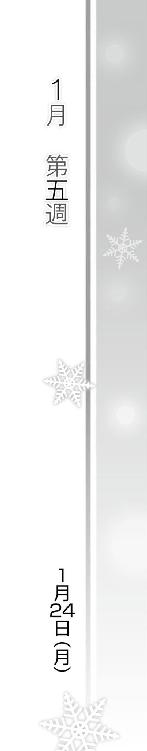

| ＷＨＩＴＥ ＡＬＢＵＭ２ 雪が紡ぐ旋律４ | |
| 月島 雅也 | |
| (2014) | |

ＷＨＩＴＥ ＡＬＢＵＭ２
雪が紡ぐ旋律４
月島雅也

本書に掲載されているコンテンツの著作権等の知的財産権およびその他すべての権利は、ＳＢクリエイティブ株式会社または正当な権利を有する第三者に帰属します。
本書の内容を権利者の許諾なく複製・複写・翻案・放送・出版・データ配信（送信可能化を含む）などすることはできません。
カバー・口絵 本文イラスト
桂憲一郎
「よしっと。オッケーオッケー。ここまではホントいい感じに仕上がった」
「さっすがあたし、これだけ組み立てられるんだからね」
「三年越しの、あたしの集大成。今なら本人より本人らしくもなれるはず」
「残すは最後のオチだけ、か」
「どんな結末になるのか......隣に寄り添って、観察して──吸い取って、こなくちゃね」
「とにかくあとは最後の一歩を待つだけ」
「だから、いつでも電話かけてきてよ。いつでもあたしを、求めてよ──」
＊
「......はあ」
スーツケースに腰掛けながら、ため息をつく。
久々の──実に三年ぶりの日本。そして三年ぶりの、この光景。
来てしまった。
結局この国の地をまた、踏んでしまった。
「............はああ」
「かずさー、お待たせ。どしたの、暗い顔して」
「別に、何でもない」
むすっとした顔でかずさは立ち上がった。
「ていうか、何で冬の明け方にサングラスかけなきゃいけないんだよ」
「え？ ああ、えっと。それはほら、トラスティで準優勝したわけじゃない？ あなたを知ってる音楽ファンに気付かれて、空港がパニックにならないように......」
「そんなことになるわけないだろ。ったく」
いいからさっさとホテル行こう、と歩き出したのだが。
「どこ行くのかずさ、タクシー乗り場そっちじゃないわよ。相変わらずねえ、あなたって」
「......ちょ、ちょっと間違えただけだっ」
わざとらしく声を上げ、母親の後に付いて歩き出した。
行き先を間違えたのは──単なる方向音痴のせいではなかった。
ウィーンでの試験を終えて空港に帰ってきたかずさを待っててくれた人物がいて、彼と共に向かったのは電車のホームだったからだ。そんな三年前の記憶の、残響のせいだった。
「............」
電車に乗って、御宿へ向かって。
かつて慣れ親しんだあの路線に乗り換え、見覚えのある風景を眺めながら、聞き覚えのある駅で降りて。
もう一度あの町へ......けれど今度は通った高校ではなく、大学へと向かえば。
そこには彼がいるかもしれない。いや、きっといるはずで──
「かずさ？ どうかしたの？」
「......何でもない」
かずさは歩き出す。浮かんだ想いは振り払い、何事もなかったかのように。
なぜなら──彼の隣にいるかもしれない、彼女を思い出したから。
＊
日付はすでに二十五日へと変わっていた。
ホテルを出た後、どこをどう歩いてきたのか、気付いたら最寄り駅のホームに立っていた。
流れたアナウンスで、どうやらまだ終電には乗れるらしいとわかる。
「............」
夜の海を見物していたのだろう、周りに目立つのはカップルばかり。
彼らが皆一様に浮かべている楽しそうな顔が、あたかも俺を責めているかのように感じられて仕方なかった。
『まもなく 三番線に 電車が参ります......』
俺たちも、ああなるはずだったのに。
長い長い時を経て、やっと笑顔を──恋人としての笑顔を、取り戻せるはずだったのに。
けれど結局はまた、俺のせいで壊れてしまった。クリスマスイブの終わりと共に、希望も潰えた。
「......はは」
俺のせいだ。
大丈夫なはずだった。メールで少しずつ近付いて、皆に応援もしてもらって、そして昔に戻ったみたいにデートもできて。今度こそ雪菜と本当に向き合えるはずだった。雪菜も俺を受け入れてくれるはずだった。......けど、最も大事な決着からは目を逸らしてしまった。
かずさを忘れたなんて言って、新しい二人を始めようなんて言っておきながら、その実、最後の最後までかずさのことを意識し続けた。
俺自身は確かに忘れたフリができていたのかもしれない。けれど、そのことを──俺の中にいるかずさの存在を──雪菜に、見抜かれた。
他の誰がわからなくとも、雪菜が見逃すはずなかったのだ。誰よりも俺を、そしてかずさを見てきた人なんだから。
たとえあのとき俺がアンサンブルを片付けていたとしても、雪菜はきっと気付いただろう。俺の瞳を覗き込み、その中にいるかずさを読み取って。
けど、それはつまり......俺はもう、雪菜の隣を歩くことができないってことなのか？
だって雪菜が俺に近付けば近付くほど、俺の中のかずさを感じ、痛みと悲しみを覚えてしまうなら......前になんて、進みようがないじゃないか。
俺はもう、俺の過去を知らない人としか新たな恋を始められないのか？
いや──この世界中でただ一人、雪菜とだけは愛を交わすことができないってことなのか......もう、二度と。
「ははは......」
乾いた笑い声が、俺の口から漏れかけ──
「ははっ......ぐっ......うあああああーっ！」
ドロドロした心の闇を吐き出すように、叫んだ。
滑り込んできた電車の音にかき消されはしたが、近くにいた何人かが怪訝そうに俺を見る。
ちくしょう。ダメなのかよ。
俺と雪菜は、もうどうにもならないのかよ。
「う、っぐ......」
電車に乗り込むと、閉じたドアに寄りかかって荒く息をついた。
寒い。暖房が効いているのに、身体が凍えそうに寒くて。
誰かとふれあいたかった。温もりを、求めたかった。
だけど、こんな俺にそんな資格なんて......。
『暇で暇で仕方なかったら、遠慮なく呼び出してくれていいよ』
そのときふと耳に蘇った台詞。
和泉の、声。
『いつでも、春希のお望みのあたしがお相手するから。親友でも悪友でも......』
──そのコの代わりでも。
それは甘言。
今の、こんな惨めな俺を許す魔性のささやき。
聞いたときには、たとえ和泉を傷付けることになっても、その誘いに乗るわけにはいかないと思ったはずだった。雪菜のために。
だけど今はもう、誰かに、俺を否定しない誰かに助けを求めても......。
「............」
アドレス帳を呼び出す。
表示されている名は『和泉千晶』。
あまりにも自分勝手なのはわかってる。
だけどこのまま独りでいたら心が潰されそうで、俺のしがらみを何も知らないあいつと話せば、この苦しみを軽くしてくれるかもしれないとそう思って、俺は。
『まもなく 御宿 御宿です......』
俺は──
Piece of：春希
「はあっ......」
コートだけを脱ぎ捨てると、足をもつれさせるようにドッと倒れ込んだ。
自分のベッドへと、服も着替えないまま。
「寒......」
襲ってくる底冷えに、両手で自分の身体を抱き締める。
けどそれは、ヒーターも付けない部屋の気温のせいだけではなかった。
──結局。
通話ボタンは、押せなかった。和泉に助けを求めることは、できなかった。
そのまま電車に乗り、御宿での乗り換えで終電を逃し、タクシーでマンションまで帰り着いた。
「は、はは」
寒い。
笑いを零すしかないほどの、歯の根が震えるような寒さ。それは他でもない、自分の心の中から湧出し、俺を苛んでいた。
助けを呼べば、たとえ一時的にせよこの辛さから逃れることはできただろう。
和泉に限った話じゃない。開桜社に行けば麻理さんがまだ仕事をしているかもしれない。グッディーズ帰りの杉浦を捕まえられたかもしれない。もちろん、武也と依緖もいる。
だけどそんなことをするわけには、いかなかった。
だって──今この寒さを感じているのは、俺一人じゃないから。
雪菜も。
俺と同じ感覚を、雪菜も一人で味わっているだろうから。
義理立てしているわけじゃない。雪菜をホテルに置き去りにしたのは俺なのだ、何の免罪符にもならないし、しようとも思わない。
ただ、雪菜の心まで置き去りにして自分だけ救いを得ることなんてできるはずなかった。
三年前と変わらぬ行為を、繰り返すことなんて。
「うっ、ぐ......」
寒くて、苦しくて、ずるずると布団の中に潜り込んだが、それで限界だった。
もう動けない。
けれど目を閉じると、雪菜の顔が──涙に濡れた顔が浮かんできて、眠ることもできない。
そうか......こんな感じだったんだな。
かずさの記事を読んだ雪菜は、毎日こんなにも辛い思いをしていたんだ。
「ごめん、な......雪菜」
何も気付かない俺でごめん。
何もしてやれない俺で、ごめん。
せめて、雪菜が今感じてる苦しみに、俺も身を晒し続けるよ。
この年末、大学にもバイトにも行かなくていいから、その間、ずっとさ......。
この日、一日。
イブの取れたクリスマスを、俺はずっとベッドの上で過ごした。
眠ることもなく、ただじっと。
Piece of：春希
とてつもなくゆっくりと、だが確実に、クリスマスは終わっていき。
そして今はもう、何でもないただの一日が始まっていた。
マンションに帰ってきてから、三十六時間──丸一日半が経ち、ちょうど真っ昼間の現在もなお、俺は一睡もできないままだった。
頭の中は疲れと眠気で一杯だったけれど、雪菜の顔が幾度もちらつき、俺に休息を許さない。
このままずっと一人でいれば、気が変になりそうで。
けどだからこそ、そんな苦しみをひたすら独りで享受し続けた。
誰かに助けてもらう資格なんてないから。
でも──
『なあ、いい加減反応してくれよ』
そんな俺を、まだ気にかけてくれる友達が、いた。
『マンションにはいないのか？ どっかでちゃんと寝起きしてるんだよな？』
昨日から何度も何度も入っていたメール、電話。
そのどれにも応答することはできず......大量の連絡の履歴を、こうして見聞きするだけ。
『それだけでも教えてくれよ。で......帰ってきたら、一回ちゃんと話しようぜ？ いいな』
「............」
ついさっき入ったこの留守電。武也の口調は明らかに切羽詰まっていた。
最初の方に入っていたメールの文面は、どこか茶化したものだった。それは連絡が取れないことを、俺が雪菜とまだ一緒にいるからじゃないかって、武也が思ったせいだろう。
けれどそんな雰囲気を、途中で入った依緖からのメールがガラッと変えた。
焦りと困惑が伝わるようなその内容は、ある意味予想通りのものだった。
雪菜と会ったこと。クリスマスには何もなかったと雪菜が言ったこと。それを言うとき、笑っていたこと。泣いてはいなかったこと。
......そんな雪菜の言葉が、噓だとわかってしまったこと。
数年来の付き合いだからこそわかる、親友の些細な変化──どこか無理のある明るさ、滲み出る悲しさ、ほんのわずか見え隠れする苦しさ。
依緖はそれに気付いたのだ。
それ以降、依緖からも武也からも、メールに加えて留守電がひっきりなしに入るようになった。武也は一度、この部屋の前まで来たりもした。
クリスマスの件を自分たちが仕組んだから、だけじゃない。純粋に俺と雪菜を心配してくれていると、その口調からわかっていた。そしてだからこそ、俺は二人の呼びかけに応答できずにいた。
事情を話せば、あいつらは俺に怒るだろう。叱責し、嘆息し、それから必死に介入して、俺と雪菜の関係をどうにかしようとしてくれるに違いない。
そうなったら、俺はきっと救われた気持ちになる。罰を与えられたつもりになる。
......楽に、なってしまう。
そんなことはあまりにも意味がない。何も解決しないのに、ただの自己満足で苦しみから逃れたって仕方ない。雪菜を差し置いて、俺一人が楽になったってしょうがない。
だから──結局俺は、動けない。
「............」
本当は。
何でもいいから動いた方が、少しはマシな結果をもたらすかもと、わかっていたのかもしれない。
だけど、まだ......前に進む気に、なれなくて。
だから、まだじっと──
Piece of：春希
「ん......」
何かの振動音に気付き、ゆっくりとそちらへ手を伸ばす。
そして無意識のうちに『それ』を摑むと、何も考えずに通話ボタンを押し、耳に当て──
「もしもし......」
『あ、北原？ 私、風岡』
「え......麻理さん？」
そこに至ってようやく、自分が電話に出たのだとわかった。
『だからそう言ったじゃない。あれ、もしかして寝てた？ ごめん、昼過ぎだから大丈夫かと思ったんだけど』
「えっと......」
久々の他人との会話に、頭が付いていかない。
こんなふうに誰かと話をするのは何日ぶりだろう。というか今は何時なんだ？ 外は明るいみたいだけど──
「......あれ？」
そこまで考えて、ふと気付く。
俺、寝起きなのか？
『すまん、どうも本当に寝てたみたいだな......悪かった』
「いえ、別に構いません。ちょっと、うたた寝しちゃってたみたいで......」
そう言いながら、心に浮かんでいたのは全く別の感情。
寝てたんだな、俺。
やっと眠れたんだな......。
『ってことは、今は家？ ちょっとだけ話しても大丈夫？』
「あの......今、何日の何時ですか？」
『え？ 二十八日の午後一時だけど......北原、あんた何時間うたた寝してたのよ』
「いや、その......」
一体いつ頃まで意識があったのか判然としない。確か、日付が変わったのは確認したような気がするけれど──そこから今まで、寝てたんだろうか。
『......なんか大丈夫じゃなさそうね。かけ直そうか』
「あ、すみません、平気ですから。それで、話って何ですか？」
本当はちっとも平気じゃなかった。
どれだけ寝たのかわからないけど、頭も身体も痺れるような疲労が残っている。中途半端に電話で起こされたせいかもしれない。
でも、麻理さんがかけてきたこの電話には、大きな意味があった。
他人からの連絡を避け続けていた俺だったのに、寝ているところを起こされたおかげで、無意識に電話を取ってしまった。そして相手が麻理さんだから、俺もいつもの調子で会話してしまう。
『ああいや、大したことじゃないんだけどな。最近バイト来てないし、どうしてるかなと思って。......元気でやってるか？』
「ええ、元気ですよ」
それならいいけど、と呟くような麻理さんの声。
最後に開桜社へ行ったのは、会議室でささやかに祝ってもらったあの日だ。あれ以来、編集部に顔を出していない。
『アンサンブルの件はよくやってくれたし、グラフも年末は多少楽な進行とはいえ、仕事はいろいろ舞い込んでくるからな。北原が手伝いに来てくれると助かる』
「......はい」
『あ、それで本題なんだけどね。北原の住所に荷物を送っておいた』
「荷物？」
『編集部に届いたからそっちに転送しておいたんだけど。すごいわよ、なんと──冬馬曜子の、ニューイヤーコンサートのプラチナチケット』
「......え」
聞こえた名前に、思わず硬直する。
『北原が書いたアンサンブルの記事、冬馬曜子がずいぶん気に入ったらしいわ。編集長に連絡があって、怒られるんじゃないかとビクビクしてたら、彼女大笑いしてたって。それで、あの記事を書いた執筆者に渡してくれ、ってことでチケットを送ってきたの。やったじゃない』
「そう、ですね」
すっかり忘れていた。冬馬曜子もあの記事を読む、なんて当たり前の事実を。
あいつ──かずさも、読んだのだろうか......？
『無理にとは言わないけど、予定なかったら行っておいた方がいいわよ。アンサンブルの名前出せば、もしかしたら楽屋に入れてくれるかもしれないし』
「いや、それはさすがに......」
『この業界、人脈が命なんだから、出せるところに顔出しておいた方が後々役に立つわよ』
麻理さんは軽く言ってくれるが、そういうわけにはいかない。
もし俺が冬馬曜子に会いに行ったら、どんな反応をされることか。
あの記事を書いたのが、娘とバンド組んでライブをやってた男でした、なんて。まあ、会ったところで俺の顔なんか覚えてないだろうけど、あの記事に関してあれこれ突っ込まれたら思わずボロを出すかもしれないし。
「......すいません、やっぱり楽屋にはちょっと──」
『それに』俺を遮り、麻理さんは言った。『そこから繫がれば、いつか会わせてくれるかもしれないだろ？』
「え？」
『冬馬かずさにも......いつかまた会えるかもしれない』
瞬間、思わず息を呑んだ。
「どう、して......麻理さん」
『......余計なお世話だとはわかってるけどね。ただ、北原がウチに来なくなったの、あの記事が世間に発表されてからだろ？ やっぱり何か、気にしてるんじゃないかと思って』
「............」
舐めていた。この人の洞察力を。
『......そこで笑い飛ばしてくれたら、私の勘違いだったって、わかるんだけどな』
ふう、と息をつく麻理さん。
『北原って、結構ナイーブだよな。すごく強い人間みたいに思われがちだけど、それは表面的な話だ』
「そう......ですかね」
『ああ。傷付きやすくて、自分で自分を責める。それに、前にも言ったと思うけど、辛いことがあると仕事に逃げたりするし』
独りで何でも抱え込みすぎるんだ、と言う麻理さんの言葉は、確かにその通りだろう。
だけど、仕方ないんだ。だって俺はもっと酷い傷を他人に負わせてる。そんな俺が自分に優しくしてやる権利なんてない、自分を責めて当たり前だ──けど、麻理さんは。
『でもさ、お前が苦しむことは、相手に対する優しさなのか？ 相手はそれで喜んでるのか？』
「......っ！」
ハッとした。
相手がそれをどう思うかなんて──考えてもなかった。
『自分を責めたいのはわかるよ。けどそれは相手のためにならない』
「でも......でも俺はっ」
『なあ。あくまで許されたくないんだったら──ただ勝手にしゃべったらどうだ？』
「......え」
『北原が話すだけ。私は聞くだけ。許しも責めもしないよ』
静かに、麻理さんが告げる。
「麻理、さん......けど、話したって」
『意味ないよ。聞くだけでアドバイスもしない。それでもいいなら聞く』
話したって意味がない。
だったら、話す必要なんて──
「......冬馬かずさのこと、忘れてなかったんです」
必要なんてなかったはずなのに、俺の口はもう、勝手に話し始めていた。
意味はないから、単純に──話したかっただけだろう。
「俺、あいつのことまだ好きだったんです」
『そう、か』
「そのせいで傷付けてしまった人が......いるんです」
◇
話した。話してしまった。
俺だけのことでも、かずさだけのことでもない。雪菜のことを、語ってしまった。
この三年間、俺のせいで彼女に苦しい時間だけを与えてきたこと。
そして数日前──かずさのことでまた雪菜を裏切り、傷付けてしまったこと。過去を引きずり続けていると、わかってしまったこと。
三年前から今に繫がる日々を、赤裸々に......語ってしまった。
『............』
麻理さんは、ずっと黙って聞いてくれていた。麻理さんだったから言えた。でも面と向かっていたら、こんな話はできなかったかもしれない。
このタイミングじゃなかったら......こんな話は、口にできなかったかもしれない。
「すいません......何か語りすぎちゃって」
『勝手にしゃべれと言ったのは私だ、気にしなくていい。それにしても、北原はちゃんと若かったんだな。こういう青い話を聞くと安心するよ』
「俺ってそんなに年寄りくさいですかね？」
『ああいや、いつも妙に落ち着きすぎてて、歳不相応な感じがするだけ。やたら理屈っぽかったりね』
「その理屈で解決できなかったから......こんな事態を招いたんですけどね」
自虐するようにそう言うと、麻理さんは小さく息をついてから、言った。
『──北原。最初に言った通り、私はあんたを責めも許しもしない』
「はい」
『その代わりに、考えてたんだ。私が北原の立場だったらどうするかって』
「......麻理さんなら、どうしますか？」
『正直なところ──わからなかった。今に至るまでのお前の選択が正しかったのかどうか、判断できなかったんだ。だから、北原の気持ちもわかる、とか、間違った行動だ、とか、そんなことは何も言えない。いや、まあ、元々言わないって約束だったけど......』
こういうとき役に立てずにすまん、と少し沈んだ麻理さんの声。
けれど、俺は一つ、麻理さんのおかげで気付いたことがあった。
「麻理さん。そんなこと、ないですよ。助かりました」
『何がだ？ 何も言えてないぞ、私』
「麻理さんでもわからない、ってことがわかったから。それで、充分です」
俺がこんな状況になったのも、今なおどうしていいかわからないのも、俺という人間のせいだと思っていた。俺が北原春希だから、何もできないのだと。
「俺、世の中で自分だけが間違えてるんじゃないかって......何もわかってない奴なんじゃないかって、そう思ってたんです。けど、そんなわけでもないんだって、麻理さんが教えてくれました」
麻理さんは俺を否定も肯定もしなかったから、救われもしなかった。
だけど──
「少し、楽になりました」
本当に、そう思えた。麻理さんが俺を否定も肯定もせずにいてくれたおかげだろう。
『そっか』
「ええ。ありがとうございます」
『私は何もしてないけどね。っと、そろそろ出かけなきゃ。じゃあまた編集部でな、北原。......今度会ったら、ちゃんといつも通りの仕事量を回してやるからな』
だから覚悟しとけよ、という麻理さんのその台詞は、それまでに動き出せ、という激励の言葉のように感じられた。
正面切ったアドバイスじゃなくても──頑張れって、言ってもらった気がして。
「ありがとうございます......麻理さん」
全てを打ち明けて。
そのおかげで、楽になってもいいんだと初めて気付くことができた。
そして、そうなった今だからこそ、ようやく動き出せるような気がする。
今までとは違う場所へ。
フリなんかじゃない、本当の償いができる、そんな場所に行けるかもしれない。
「やれること、やってみます、俺」
一つずつでもいい。
手探りで、不器用に、少しずつ進んで行こう。
大切な人のところに、向かって。
Piece of：春希
「ん......」
インターフォンの連打で目を覚ました。
時計を見ると、午後八時。
まあ、この時間に寝てるから起こすなと言うのも何だが、しかしずいぶんしつこい訪問者もいるもんだ。
とはいえ、今俺の家に来る人間なんて、どうせ一人しかいないけれど。
「はいはーい。もうちょっと静かにしろよ武也......」
そう言ってドアを開けると。
「よっ。......あれ？ 反応薄いね。死んでる？」
なるほど、和泉が来る可能性は失念していた。
「わー、無精髭だ！ じょりじょり～」
「おいっ、こらやめろっ」
「あははは。ってわけで、とりあえずお邪魔しまっす」
「ま、待て和泉、お前何しに来たんだっ!?」
「何しにはひどいなあ。せっかく一大決心をして訪ねてきたのに」
「......つまり？」
「そろそろ泊めてくれる友達ローテーションが尽きてきた」
「また家に帰ってないのかよ......」
和泉家の母子断絶は相変わらずの状態らしい。
「昨日まで泊めてくれてたコが実家に帰省しちゃって。研究室の冷たい床もいい加減キツい季節だし。あとは春希か、同じゼミの知り合いぐらいしかいないんだよぅ」
「俺じゃなくてそっちに行けそっちに」
「じゃあそうしよっかな。全員男だけど」
「......え？」
「ついでにあんまりよく知らないけど、まあ頼めば何とかなるかなあ。それじゃ......」
「ちょ、ちょっと待った！」
「何？」
「いや、ええと、その......」
「............」
「......わかったよ。入れよ」
「おっ邪魔しま～す」
はあ、とため息。
自分の性格と和泉の性格が恨めしい。
おまけに──そのおかげで、昨日に続いての、他人とのコミュニケーション訓練が今日も開催されることになってしまった。しかも今度は声だけじゃなく、直接会って接してる。
望む望まないはともかく、俺の生活は少しずつ、元に戻っているのだろうか......。
◇
「むぐ、むぐ......っふう。たまにはピザもいいねえ。春希の手料理じゃないのは残念だけど」
「それ残念がってるヤツの食べ方じゃないぞお前。まったく」
「ていうか春希もよく食べるね。ずっと寝てたのにお腹空くの？」
「......ま、相当食べてなかったからな」
ほぼ四日ぶりの、しかも胃に優しくない食事は、恐るべき勢いで俺の体内に吸収されていった。我ながらよく入るものだと感心するぐらい。
「あたしも負けないからね！ ふぁぐ、ふぁっぐ......」
「だから無茶すんなっつーの」
まあ、こうして目の前で美味そうに食うヤツがいるからこそ、つられて俺も食えるのかもしれなかった。
昨日から、人と話せるようになり、ちゃんと眠れるようになり。
今日は人と会えるようになり、ピザを待つ間に顔を洗って髭を剃って。
そしてこうやって、マトモに食事を取れるようになった。
「っはー！ ピザとビール。いいねえ、最高だねえ。夏はやっぱりこれだよね～！」
「十二月を夏と呼ぶんならそうかもな」
「あ、最後の一切れ、春希に譲ってあげるよ」
「そうか？ 悪いな」
「その代わり、今日の割り勘率は４：６......いや、せめて３：７に！」
「値切ってんじゃねえよお前は」
毎度の調子にガックリしながら、それでも俺はどこか気分が上向きになっていくのを感じていた。
どうやら、不本意ながら認めざるを得ないらしい。
麻理さんに続き、和泉までもが俺を引き戻してくれている。
生きるべき現実の世界へと。
「ね、そーいえば冬休みどっか行った？」
「いや。ずっと寝てたよ」
食後、二人でだらだらテレビを観ながら、他愛もない会話を続ける。
「あれ、そーなんだ？ 引き籠もり？ 彼女と遊びに行ったりしなかったの？」
「......俺に彼女がいるって前提はどっから出て来たんだ？」
「前に言ってなかったっけ」
「言ってない。むしろ彼女なんかいないって言ったはずだぞ。カマかけるんじゃない」
「なんだあ。じゃあ何にもやることない、可哀相な男なんだね。あたしが来てよかったっしょ」
「お前と違って忙しいの。バイトがあんだよバイトが」
「ずっと寝てたんじゃないの？」
「あ......」
うっかりしていた。
低下しきっていた会話能力は、まだまだ本調子じゃないらしい。
「ええと......その、ちょっと勘違いだ」
「ん。まあ何でもいいけどね」
そこで少しだけ空気が変わり、俺たちはしばらく黙ってテレビを見つめていた。
「......面白い特番もやってないね」
やがて、テーブルに頰杖をついたまま和泉がぽつりと呟く。
「ゲーム機ぐらい買ってよ、春希」
「文句あるならさっさと寝ろ。この部屋、他にすることもないし」
「............」
「何だ？」
ふと、和泉がじっとこちらを見ているのに気が付く。
テーブルの向かい側から、俺の瞳を覗き込む。
「......ねえ。すること、ないの？」
「ないよ。ゲーム機もなけりゃ将棋盤もない」
「じゃあ............する？」
何を？ と訊く必要はなかった。
テーブルの下で、和泉の足が俺の足に触れていた。
「......しない」
「なんで？」
「お前こそ、なんでそんなこと言うんだ」
「んー、春希が元気なさそうだから、慰めてあげようと思って」
その目が艶を帯び始めているのは、俺の気のせいだろうか。
「お前......いつも、そう言ってるのか？ 落ち込んでる男がいたら......そうやって」
「ううん。こんなこと言うの、春希が初めてだよ」
「......それにしたって唐突だろ」
「そうかなあ、あはは。......そろそろ踏み込まないと、間に合わないんだよ......」
「え？ 何だって？」
「ん～......けどどっちが本当の目的なのかなあ。あたし、ミイラ取りがミイラになったりしてないよね？」
「何がだよ？ 質問の意味を明確にしてくれ」
「ま、それはともかく。なんでダメ？」
「なんでって......俺たち付き合ってないわけだし」
「いいじゃん、別に付き合ってなくてもさ。あたしはただ、春希との関係をもう少し深くしてみたいなあ、ってだけ」
「お前......それ」
「告白？ なのかなあ。微妙に違うんだけどね」
まあそう取ってもらってもいいよ、と小さく笑う。
思わず言葉に詰まった。こんな急に──こんなあっさり言われるとは思ってなかったから。
和泉が俺に『女』を見せ始めて以来、ずっと気付いてはいたものの......こんなカタチで、それも疑問符と共に伝えられるだなんて。
......らしいと言えばらしいのかもしれないけど。
「そんなわけで、どう？ 彼女にしろって迫ったりはしないからさ」
「俺がそういう割り切った真似をすると思うか？」
「しない、っていうかできないかな？ そういう人間だってことぐらいは、近くで見てきたよ」
「わかってるならやめてくれ」
「じゃあ、彼女にしろって迫ったら？」
ハッとして和泉の顔を見ると、その視線は真っ直ぐ俺を向いていた。
「それは......」
「それは？」
答えに窮していると、和泉の足が俺から離れ、代わりに言葉が飛んでくる。
「ね、春希。あんた今......好きなコ、いるよね？」
「........................いる」
絞り出すように、答えた。
もっと早く言わなきゃいけなかったこと。
和泉の気持ちに気付いた時点で、伝えておくべきだったこと。
それを、和泉のおかげで和泉に言えた。
......情けない。
「そっか。......じゃあなんで引き籠もってたの？」
「振られた、から」
「そうなんだ？ だったらそれこそあたしの出番じゃない？」
『春希のお望みのあたしがお相手するから。親友でも悪友でも──そのコの代わりでも』
あの日──駅で別れたあのときの、和泉の声を思い出す。
それでも。
「......ごめん。俺、それでも彼女が......」
「好き？」
「......うん」
あの日、駅で別れたあのときに、すぐさま言っておくべきだった言葉。
今もまた口にできずに、和泉が代弁してくれる。
情けなくて。でも噓じゃないからしょうがなかった。
「だから、ごめん」
その後しばらく、テレビの空虚な笑い声だけが響き、そして。
「......帰るね」
呟いて、和泉はさっと立ち上がると、荷物を抱えて玄関へと向かう。
「え？ で、でもお前泊まるところ、もう終電だってない......今日ぐらいは、泊まっても」
「やめとく」
じゃあね、と俺に背を向け、和泉はそのまま出て行った。
最後にちらりと俺を振り返って。
一瞬しか見えなかったその表情が、なんだかもの悲しそうで──
「あ、おいっ」
けれどかけた声は、虚空を彷徨い搔き消えていった。
玄関で一人立ち尽くす。
これで、和泉との関係は終わったのだろうか。
久々の再会だったのにこんなふうに幕を閉じ、もう開くことはないのだろうか。
仕方ないとはいえ、どこか寂しさを覚える。
「......すまん」
それでも俺は、和泉を追うことはしない。
本当に進むべき道を、見失わないために。
「うーん。どうも上手くいかなかったかあ。期待してたいい流れだったはずなんだけど」
「けど、あたしに寄りかかっては来なかった......読み違えたね」
「三年かけてやっと事態が動き始めたっていうのに、蚊帳の外のままだなんて」
「くそう。もうちょっとなのになあ」
「もうここまでかな......いや、まだ諦めるわけにはいかない」
「とりあえず練習も始めなきゃいけないけど──もっかいこっちから、動いてみるか」
Piece of：春希
「ふう」
夕暮れ、白い息をつきながら、日の落ちた南末次を歩く。
久々の外出。実に数日ぶりに出会う街の光や喧騒は、暗い部屋に慣れた俺の心にとって、どこか現実離れしたものに思えた。道を歩く感触さえ久しぶりで、何度か転びかけたりもした。
それでも、やがて目的の場所に着く頃には、だいぶいつもの自分を取り戻すことができていたのだが──
「えーと......」
けれど、こうしてやって来たグッディーズ南末次店に、いきなりずかずか入っていくのは少しためらわれた。
離れたところから、同僚たちが働くのをガラス越しに眺める。
しばらく迷った後、やっぱり帰ろうと歩き出したところで、いきなり声をかけられた。
「先輩！」
「うわあっ」
ビクリとして振り向くと、バイトの制服に身を包んだ杉浦が、俺を睨むようにして立っていた。
「あ、よ、よう、杉浦」
「よう、じゃありません。お店の前をウロウロしないでください、不審者みたいですから」
呆れたように言う彼女の言葉は、なんだかとても懐かしい響きに思えた。
「何してるんですか？ 年末にこんなところで、しかも一人で。先輩、年内はシフト入ってませんよね？」
「別に、自分のバイト先に寄るぐらい普通だろ。......ていうかよく俺のシフトなんて知ってるな、杉浦」
「ええまあ。実を言えば、そうなるように組んだのはわたしですから。先輩、年末はプライベートで忙しくなるだろうからって」
隠そうともせず、あっさりと杉浦はそう言った。
「......やっぱりそうか」
先週のバイトのときに感じた、パズルのように俺の予定が組み上がったあの感覚。
予想はしていたけど、シナリオを書いたのは目の前にいるこの少女だったというわけだ。
「ついでにネタばらししますと、先週、飯塚さんからわたしに連絡があったんです。二十四日の先輩のシフトをどうにかできないか、って」
たぶん依緖が雪菜から聞き出したんだろう。
「そこで話をするうちに、今回の計画を思い付いたんです。飯塚さん、映画もレストランも二ヶ月前から予約してたみたいですけど、先輩のためにどうにか譲ってもらいました」
「え？」
ってことはあいつ、本当は自分で行きたかったのか......。
「で──どうだったんです？」
杉浦が少し身を乗り出すようにして、そう切り出した。
「話、したんですよね？ 仲直り、できましたか？」
尋ねるその目は、どこか輝いていて。
きっと上手くいったに違いない、と思っていることがありありとわかった。
「のろけ話に来てくれたのでしたら歓迎です。しばらく何か食べててください、休憩時間になったら控え室で聞きますから。うんざりしながらちゃんと聞......」
「............」
「先輩？」
「......悪い」
呟くような俺の一言で、杉浦の顔色がサッと変わった。
「まさか......」
「ああ。ダメだったよ。せっかく画策してもらったのに......ごめん」
「ど、どうしてっ？ わたし、何か間違って......」
「違うよ。杉浦のせいなんかじゃないって」
悪いのは、ただ俺なんだから。
◇
「──って感じでさ。だからそこまでは思ってたんだ、何とかなるんじゃないかって。新しい関係を築けるんじゃないか、って」
「ダメ......だったんですか？」
「まあ、な。いつまでも過去のことを引きずってちゃダメだって、わかってたんだけどな」
コーヒーをすすり、そっと息をつく。
ちょうど勤務時間が終わった杉浦と共にやってきたのは、いつぞやも来た近くの喫茶店。
最初はグッディーズの客席で話をしていたのだが、佐藤を始めとしたスタッフ全員が入れ替わり立ち替わり前を通っていくので、俺の方が移動を申し出たのだった。
「なら、どうして......？ 過去にばかり目をやるのも、逃げるのもやめたのなら──」
「俺はそうしたつもり、だったんだけどな」
「え？」俺の言葉に杉浦の表情が少しずつ曇っていく。「まさか......雪菜さんの方が？」
「............」
「何て、言われたんですか」
複雑そうな顔で、それでも杉浦が俺に問う。
あまりにも痛い質問が、的確に俺の急所を突く。
傷口から流れ出した苦しみを味わいながらも、やはり俺も静かに口を開いた。
どんな痛みを感じようが、俺は最初からそのために──自分の行いを語るために、ここへ来たのだから。
それからしばらく、俺は杉浦にクリスマスイブの出来事を話し続けた。ゆっくりと、少しずつあの日のことを伝えていった。
途中から杉浦はコーヒーに手を付けなくなり、全てを話し終える頃にはすっかり冷め切っているようだった。
「噓つき、か」
聞き終えた杉浦はしばらく黙っていたけれど、やがてそのコーヒーを一口すすった後、ぽつりとそう呟いた。
「実際その通りだから、言い訳のしようもなかったよ。二人で過去を忘れよう、なんて言っておきながら、俺自身が少しも忘れてなかったなんてさ」
窓の外に目をやる。緩やかな時間が流れる店内と比べ、年末の慌ただしい雰囲気がガラス一枚隔ててそこにあった。
「普段、他人を責めたりなんかしない雪菜だからこそ、あの言葉にどれだけの感情が込められていたのか、俺には嫌ってほどわかった」
「先輩......」
「同時に、俺が今までどれだけ雪菜を苦しめてきたのかも思い知った。最後の最後でまた、酷い傷を付けたんだ。どうしようもない人間だよ」
「でも最後の最後で未来を、新しい二人の関係を拒否したのは雪菜さんの方です。先輩は前に進もうとしたじゃないですか。変わろうとしたじゃないですか」
「自分を騙したままで、な。そんな偽りの言葉なんて、雪菜が見破って当然だ」
「それは結果論です。先輩が雪菜さんのことを誰より大切にしようとしたのは、本当なのに」
「結果が全てだ。俺が雪菜を傷付けたっていう結果が。最低だよ、俺」
「......そんなこと言わないでください。自分ばっかり責めないでください。先輩だって傷付いたのに。ずっと傷付いてきたのは同じなのに」
「俺のは自業自得だ。それに──」
「......それに？」
「なあ杉浦。今まで俺がしてきたのはさ、雪菜を傷付けたことだけじゃないんだ」
ふう、と天井の蛍光灯を見上げ。
「雪菜とのことで性格がひん曲がって、そのせいで周囲の人たちにも散々迷惑をかけてきた。大事な友達や、俺を頼ってくるヤツや、バイト先の上司に、バイト先の後輩。それから......バイト先の、自分の教え子にも」
「あ......」
杉浦が小さく声を漏らす。
塾での俺の教え子であり、杉浦のクラスメイトでもある彼女、矢田美穂子。
「彼女には本当に酷いことをしたと思ってる。その後の、杉浦への対応も含めて」
『彼女には謝るよ。でもそれとこれとは違う話だ。言いたくないものは言えない』
『なら噓でごまかせばいいのか？ 君は噓ついてもらって嬉しいか？』
『納得できないなら、俺を許さなくていい』
「あのときの俺、ホントに自分勝手だったよな。杉浦の気持ち、今ならわかる気がする」
「............」
『全然納得できないし、絶対許せません』
「許せるわけ、ないよな。ごめん。本当に悪かった」
「先輩......あのときのこと、反省してるんですか？」
「してるよ。杉浦に対しても、もちろん矢田さんに対しても。馬鹿だった、俺。今さら言ったって仕方ないかもしれないけど」
「そんなこと......そんなことありませんっ」
パッと俺を振り向くと、その瞳がじっと覗き込んできた。
「だって先輩、変われてるじゃないですか。今さらなんかじゃありません、今言えてるってことが大切なんです」
「そう、かな」
「はい。わたし、あのときの先輩は確かに許せませんけど、今の先輩なら許せる気がします。先輩、ちゃんと変われてるから」
そう言って、杉浦はそっと微笑んだ。
「雪菜さんとのこと、やっぱり結果が全てじゃないと思います。だって、何もしなかった昔の先輩から、関係を前に進めようとした先輩になれたんですよ？ なら次は、これから雪菜さんのために何ができるかを懸命に考える先輩に、なっていけるはずです」
「これから......」
杉浦の言葉を繰り返す。
これから。つまり、まだ先がある。
「ええ。きっとなれます」
頷く杉浦の笑顔に、少し救われた気分になった。
とはいえ──今日杉浦に会いに来た本当の目的は、そこではない。
「......なあ杉浦。これから俺がちゃんと変わっていくために、ちょっと頼みたいことがある」
「何ですか？」
「電話をかけて欲しいんだ。矢田さんに」
俺の言葉に、杉浦がハッとした顔になる。
そう。今日俺は、自分の行いを語るために、ここへ来たのだから。
◇
「わざわざごめんな。それに、本当は俺の顔なんて見たくないだろうけど」
「い、いえ、そんなこと」
「でも来てくれてありがとう。どうしてももう一度、話がしたかったんだ──矢田と」
「先生......」
ついさっき、杉浦の携帯からかけた電話。そこから聞こえた俺の声に、矢田はしばし返事を忘れていた。あまりにも突然で、思いも寄らなかったに違いなかった。
それでも彼女は、こうして急いで出て来てくれた。
「杉浦とはたまたまバイト先が一緒でさ。だからちょっと、呼び出すのに協力してもらった」
「黙っててゴメン美穂子。やっと学校に出て来てくれるようになったのに、余計な心配かけたくなかったから」
「小春ちゃん......」
バイト先の同僚が俺だってこと、杉浦は矢田に言っていなかったらしい。俺の存在そのものを、矢田に思い起こさせたくなかったからだろう。
「杉浦はさ、ずっと矢田の味方をしてた。俺も散々責められたものだけど──でも今は感謝してる。こうして矢田ともう一度話せるように手伝ってくれたし、励ましてくれたから」
ふうっと息をつき、そして。
「......だけど、今からの話に杉浦は関係ないよ。俺と矢田と......もう一人のコの、話だ」
俺の言葉に矢田が小さく息を呑み、その隣で杉浦も少し表情を堅くするのがわかった。
「矢田。今日こうしてわざわざ来てもらったのは、あの日──矢田が大学に来てくれたときのことを、謝りたかったからなんだ」
そのために、杉浦に会いに来たのだ。
「あのときの俺、怖かったんだ。自分に向けられる好意ってものが、すごく怖かった。俺みたいなヤツを好きになる人のことが、怖くて」
「え......？」
「もちろんそうなった理由はちゃんとある。だから、少し長くなると思うけど、俺の話を聞いて欲しいんだ。矢田が嫌じゃなかったら、どうか......頼む」
「先生......」
少しの間、矢田は静かに俺を見つめていて。
やがて小さく、けれどしっかりと頷いてくれた。
「ありがとう、矢田」
そして俺は──全てを、語った。麻理さんに語ったのと同じことを、麻理さんに語ったのとは違う意味で。
矢田も杉浦も、相槌一つ打たず、最後までただじっと俺の話を聞いていた。
「それで俺、怖くなったんだ。誰かを好きになることも、誰かに好きって言われることも、ホントに怖くなっちゃったんだよ」
「............」
「だから誰にでも平等に接するようにしてきた。贔屓も差別もしなければ、特に好かれも嫌われもしないだろうからって」
「......でも」矢田が小さく口を開いた。「でも先生、皆に好かれてました。誰に対しても一生懸命で、誰に対しても厳しくて優しかったから」
「そんなのは......誰が授業したって同じだろ、仕事なんだから」
「いいえ。大学生のバイト講師で、あんなに一生懸命教えてくれる人、他にはいません。わたしの質問にも、三十分でも一時間でもずっと付き合ってくれました」
「俺の教え方が下手なせいだ。上手い人なら十分で教えられる」
「それでもわたしは嬉しかったんです。あんなに真正面からわたしに向き合ってくれる人、それまで小春ちゃんくらいしかいなかったから」
美穂子、と杉浦が呟く。
「いや、やっぱりそれは俺を贔屓しすぎだよ。それにどっちみち、そこまで俺を信頼してくれた矢田に対して、あんな酷い仕打ちをしたことには変わりない」
「先生......」
「本当に、ごめん。謝って済む問題じゃないのはわかってるけど、ごめん」
そうして俺は頭を下げる。
しばらくの間、沈黙だけが場を支配していた。
「......北原先生」
長い長い時間が過ぎた後。
かけられた言葉に頭を上げると、矢田の目が真っ直ぐに俺を見ていた。
「教えてくれて、ありがとうございました。それを聞いた上でなんですけど......もう一つ聞かせて欲しいことがあります」
「何？」
「わたしが知りたいのは、三年前のことなんかじゃありません」
え？ と呟いたのは、俺ではなく杉浦。
「知りたいのは、教えて欲しいのは......たった今、わたしに『ごめん』って謝った後の──今の先生の気持ちです」
あのとき俺が矢田に付けた傷痕は、まだ消えてはいない。
それでも矢田は、あのときと同じように、いや、あのときよりも確固たる意志のようなものを持って、また俺に一歩踏み込んできた。
矢田のそんな決意に対して、俺は。
「......矢田のことは、いいコだと思ってる。前も言った通り、俺なんかの授業を真剣に聞いてくれて、それで頑張ってくれたこと、本当に嬉しかったんだ」
「そ、そうじゃなくて......生徒じゃなく、一人の女性として、わたしのこと──」
「み、美穂子、それは......」
「............」
以前の俺は、ここで逃げた。
明確な答えを避け、それどころか切って捨てるようにして、その場から逃げ去った。
そんな俺の仕打ちに、しばらく学校を休むほどのショックを受けた矢田。
果たして今から俺が言う台詞は、矢田の傷を塞ぐものになるのか、余計に酷いダメージを与えることになるのか、わからないけれど、だけど──
「矢田」
「は、はいっ」
「......ごめん。俺には好きな人がいる」
「..................っ」
だけどこれだけは、どうしても言う必要があった。
「三年前から傷付け続けてきた。一週間前にもまた、最悪な深手を負わせた。それでも大好きな人が、いるから」
矢田に対し、本当の意味で向き合うということは。
「だから、ごめん......矢田の気持ちを受け入れることは、俺にはできません」
自分の気持ちを、たとえそれが死刑宣告であろうとも、包み隠さず伝えることだと思うから。
「............」
矢田の顔は、見る間にくしゃくしゃになっていった。
何を言われても、どんなことをされても、全部受け入れるつもりで俺は待った。
やがて。
「わかり......ました」
か細い声が、涙と共に零れ落ちた。
「............っ」
瞬間、その隣で杉浦が顔を伏せる。
きっと、矢田と同じような表情になってしまった自分を見られたくなかったのだろう。それでも彼女の手は、テーブルの上で震える矢田の手にそっと重ねられた。
端から見れば、俺は二人の女のコを泣かせている極悪人。
けどこれは必要不可欠なケジメの結果で、それに──
もっともっと泣かせている女のコは、別にいるのだから。
Piece of：春希
「神社？」
『おう。大晦日なんだし、神社で人混みに揉まれながら新年を迎えようぜ』
矢田に本心を伝えた翌日。
年内最後であるこの日──夕方にかかってきた武也からの電話に出ると、俺があっさり出たことに武也は驚いていた。ついでに、声がそれほど暗くなかったことにも。
しばらく音信不通だったことを詫びると、武也の方もひとまずそれ以上は何も追及してこなかった。その代わりに切り出したのは、年越しの誘い。
「珍しいな、武也なら女のコと行きそうなもんなのに」
『それが、どのコも皆実家に帰省するって言うもんだからさあ。もうちっと地元のコを開拓しときゃよかったぜ』
「やっぱお前はいつも通りで安心したよ」
『褒めてくれてありがとよ。まあそんなわけでさ、今から出て来ないか？ とりあえず忘年会やって、そのまま神社行って、次に新年会って感じで』
「どんだけ飲む気だ......」
『いいじゃねーかよ、正月なんだから。お前もどーせ暇してんだろ、来いよ』
「暇......っていうか」
『あれ、何か用事あんのか？』
「いや、まあ」
単なる用事と言っていいものかどうか迷う、一つの案件があるにはあった。
ちらりと机の上に目をやる。そこに置かれた封筒が、静かに存在を主張していた。
麻理さんから送られてきたその封筒。
中身は冬馬曜子のニューイヤーコンサートのチケットだ。
開催日はもちろん今日。開演は午後八時からで、今から出ても充分間に合う。
「............」
興味がない、ことはない。
世界的なピアニストのコンサート、しかも普通じゃ取れないプレミア席。おまけに、俺の初仕事を評価してくれた上での招待席。
行きたくないわけがなかった──ただし、それが冬馬曜子じゃなかったら。
だって、彼女と彼女の演奏を目の当たりにすれば、きっと嫌でも思い出してしまう。
その美貌と才能を受け継ぎ、ピアニストとしてこれから活躍していくであろう、あいつのことを。
もうこの国にすらいないあいつのことを、思い出してしまう。
会うこともできない人のことを......。
『おい？ 春希？』
そのときふと、麻理さんの言葉が頭をよぎった。
アンサンブルの名前を出せば、楽屋に入れてくれるかもしれない──つまり冬馬曜子には、会えるかもしれない。
冬馬曜子は俺のことを覚えているだろうか？
顔を見たら思い出してくれるかもしれない。あのときのギター君だ、なんて言って。
そしたら彼女は、娘に報告するだろうか......？
『おいって。聞いてんのかよ』
「え、ああ、悪い......」
『なあ春希──お前、ちゃんと生活できてるか？』
「......何だそりゃ。別にいつも通りだ。何ともない」
『本当か？ 本当に大丈夫か？』
もし俺が今日のコンサートに出かけたら。
ひょっとするとそこから繫がるかもしれない。
三年前に別れたきりのあいつへと繫がっていく可能性が、もしかしたらあるかもしれない。
あいつとの接点を、もう一度──
「............」
『春希......なあ、お前たち、あの日に何が......』
「誰が来るんだ？」
『え？』
「今日のメンバーだよ。決まってないのか？」
『あ、えっと、俺と依緖とお前と......それだけ』
「そっか」
さすがの武也も、今の俺と雪菜を会わせるつもりはないようだった。
「行くよ、今から。どこで飲むんだ？」
『......いいのか？』
「わかった。それじゃ家で寝てることにする」
『待て！ 御宿の東口で待ってる！』
待つのか待たせるのかわかりにくい台詞を口にする武也。
御宿、か。
「最初からそう言え。じゃ、後で」
電話を切ってから、ふうっと息をつく。
これでいい。こうするべきなんだ。
いつまでもかずさの幻影を追いかけていたから、雪菜をあれだけ傷付けた。
忘れた忘れたと言いつつ未練に縛られていたから、雪菜を救うことができなかった。
だから、これでいいんだ。
今から武也と依緖に会って、一週間前のことを打ち明けて、非難されよう。
そうしなきゃダメな気がするから。
「............」
着替えようとして立ち上がり──けれどふと、机の上の封筒を手に取った。チケットを取り出し、じっと眺める。
冬馬曜子のニューイヤーコンサート。
チケットに記載されている会場名は──
「......御宿芸術文化ホール」
◇
「何よ、それ。......何なのよそれ？」
「......すまん」
大晦日の忘年会で賑わう居酒屋の一角。
テーブルを囲む俺たち三人は、乾杯のときこそ明るいテンションではあったものの、俺が話を始めた辺りからお通夜のような雰囲気になっていて。
「おかしいって。わけわかんない」
そして話を聞き終えた依緖は、顔も口調も、叩き付けるようにジョッキを置く動作も全て、怒りの感情に充ち満ちていた。
「ああ......全部俺が悪いんだよ。冬馬をいつまでも忘れなかったから」
「まあ落ち着けよ依緖、話聞いた限りじゃ春希は前に進もうとしたんだからさ......」
比較的冷静な武也がそう言ってくれるが、依緖には聞こえてないようだった。
それだけ怒っているのだろうと察しは付く。仮にも親友をそこまで傷付けられたのだ、俺に対する苛立ちは相当なはずなのだから。
と、思ったのも束の間。
「一体何考えてんの──雪菜はっ」
「わかってる、ごめ......へっ？」
一瞬、どういうことかわからなかった。
思わず武也と顔を見合わせる。
「なんで今さらそんなこと言うんだよ、わけわかんないよ雪菜！」
雪菜ちゃん？ と首を傾げる武也。
依緖が怒るとは思っていたが、その矛先が俺じゃない人に向けられるとは、予想もしていなかった。
「わかってたじゃん、そんなの。春希が冬馬かずさのこと忘れてないことなんて、ずっとずっとわかってたことじゃんかっ」
「依緖......」
「それでも春希のことが好きだ、って言うから。だからあたしは、そんな雪菜を応援した。励まして、いつも見守ってきた」
そうでしょ？ と依緖が武也を見遣る。
「......そうだな。だから俺も依緖も、雪菜ちゃんの味方だった。もちろん、春希の味方でもあったけど」
「でも春希はずっと逃げてて、それをどうにか、要は二人がまた近付けるようにするために、あたしは手助けをしてきたつもり。本当にそうなって欲しかったからだよ？」
なのに、と依緖が続ける。
「やっと春希が雪菜に向き合おうとしたのに、今度は雪菜がそれを拒否するなんて......なんでなのっ!? 意味わかんないっ！」
怒りと悔しさが入り混じったような依緖の様子に、俺と武也は顔を見合わせる。
こういうとき、いつも雪菜の肩を持つ依緖なのに。
「なんでそんなことするのさ......どれだけ捻くれてるんだよ」
とはいえ依緖の怒りはきっと、俺と雪菜が再び仲良くなることを心から願っていたからこそだろうと想像は付いた。
これまで、武也はどちらかと言えば俺の、依緖は雪菜の側に着くことが常だった。
だからこそ、自分が味方していたその雪菜が俺を拒んだことで、どこか裏切られたような感じを覚えたに違いなかった。
「いや、だけどな依緖、雪菜がそうなったのはそもそも俺のせい......」
「どうなっていようと、今回の件、あたしには雪菜の嫌がらせにしか思えないよ。タチの悪い復讐にしか、思えないよ！」
俺の噓を雪菜が見抜いた結果なのだから、悪いのは俺に決まっている。
けどどうやら依緖は、そんな理屈じゃ少しも納得がいかないようだった。
......裏を返せば、それだけ雪菜を信じ、俺との仲を取り持とうと本気で思ってくれていたってことなんだろうけど。
「あのな依緖、雪菜ちゃんがそんな真似するはずないだろ？」
俺の代わりに武也が口を開く。
「じゃあ何だって言うのよ、ずっとわかってたことを、どうして最後の最後に持ち出してこなくちゃいけないわけ!?」
「雪菜ちゃんだってずっと溜め込んでたんだよ、色んなものを。ずっと言えなくて、苦しかったんだって。あのコは優しすぎるから」
「ギリギリになって爆発するぐらいなら、もっと最初から春希を責めればよかったんだよ！ 春希の非を認めればよかったんだ！」
依緖の言う通り、雪菜がもっと早く俺の罪を認めてくれていれば、俺たちはきっとこんなことにはならなかった。
けれどそれは、自分が悪いのだという考えを、雪菜に捨てさせることができなかった俺の責任に他ならない。
「......依緖、雪菜がそうやって生きてきたのも俺のせいなんだよ。結局、全部俺が悪いんだ」
「そうだよ、全部あんたが悪いんだ。だけど雪菜まで同じことをやり返してどうするんだよ。春希を追ってたはずなのに、その春希がこっちを振り向いた途端、今度は自分が逃げ出すなんてさあ」
「............」
「あー、すっごいむかむかしてきた。......あたし今から雪菜のとこ行ってくる。話の事と次第によっちゃ、友達付き合いもここまでかも」
「馬鹿、よせって」
椅子から立ち上がった依緖を、武也が慌てたように制止する。
「何なのよ武也、あんたなんで今日は雪菜の肩持つわけ？」
「そっちこそだろーが。とにかくやめとけって。雪菜ちゃん、今は尋常じゃなく落ち込んでるはずだから」
「へえ？ 武也にそんな感情が理解できるんだ？ なのに山ほど女の子と別れてるなんて、大したもんだね」
「......どういう意味だよ」
ピク、と武也の顔がわずかに引きつる。
「誰にフられても誰をフっても何とも思わないかと思ってたけど。春希や雪菜と違って、一番大切な人なんていないわけだし！」
「何だとぉ？」
「お、おい、やめろってお前ら」
完全に一触即発ムードの二人に、割って入ってどうにか宥める。
どうして大晦日にまで喧嘩しなくちゃいけないんだ、と心の中でため息をついたけれど、そもそも原因はこの俺で。
本当に俺は、どれだけたくさんの人たちに迷惑と心配をかけてきたんだろう。
依緖の言葉じゃないけれど、一番大切な人が誰なのか、というただ一つのことをはっきりさせられなかったせいで、こうなってしまった。
「............」
ズボンのポケットの中で、乱雑に突っ込んだチケットが擦れる。
思わず持ってきてしまった、あいつへと繫がるかもしれないその紙切れ。
俺は......俺が一番好きな女の子は、誰なのか──
今日は十二月三十一日。
一年を締めくくる最後の日。
新しい年が、もうそこまで迫っている。
一つの過去が終わり、新しい時間が始まるのだ。
新しい......何かが。
◇
「そろそろ終わりだな、今年も」
結局、店を出たのは十一時五十分を回った後。
「「............」」
腕時計から顔を上げて話しかけたが、武也も依緖も返事をくれなかった。
あれからどうにか乱闘勃発は防いだのだが、その代わりに会話がなくなり、酒と食べ物だけが消費されていった。俺が一人で沈黙を破ろうとしたり追加の注文をしたりと、二人に気を遣って過ごすハメになった。
今日ぐらいお前らが俺に気を遣えよなと思ったりもしたが、そうこうしているうちに、いつの間にか普段の自分を取り戻しつつあることに気付いた。
結果論かもしれないけれど、周囲に誰かがいるからこそ、人間はどれだけ傷付き倒れても、また立ち上がることができるような気がする。
「えーっと。んじゃこれからどうする？ あ、神社行くんだっけ」
「......解散でいんじゃね」「......解散でいいんじゃない？」
「お前らな、本来の目的はどうした」
まあ、こんな奴らが近くにいると、自分がしっかりしなくちゃって思わざるを得なくなるだけかもしれない。
「ったく」
はあ、とため息をつく。
やがて誰からともなく、のろのろと歩き出した。
神社にも駅前にも向かえる道を三人黙ったまま進んでいく。
「あ......」
しばらくしてハッと立ち止まった俺に、「「春希？」」と二人が同時に首を傾げる。
俺たちが歩いていた道は、いつの間にか御宿芸術文化ホールの前へと通じていたらしい。ぼうっとしていたから気付かなかった。
今あの中でコンサートが行われているのだろうか、とホールに目をやったそのとき。
備え付けの巨大なデジタル時計が、ＬＥＤの数字を三つのゼロに切り替えた。
年が、
明けた。
「あけましておめでと～、春希」
「おめでとさん、春希。今年もよろしくな」
二人がにこにこと、しかし俺にだけ向けてそう言う。
「その前にお前ら、この場にもう一人いることを認めろ」
「もう一人？ 誰それ、幽霊？」
「おいおい春希。新年早々、酔って幻覚でも見てんじゃないのか」
......何だろう、こいつらって仲がいいのか悪いのか。
それともお互いただ単に頑固なだけなのかな。
端から見れば馬鹿みたいに思えるけど、突き詰めてみれば俺や雪菜だって似たようなものかもしれない。
素直になればいいのにそれができなくて。
だからいつまで経っても近付くことができなくて──
「あー、新年かあ。今年はいい年になるといいなー。春希、やっぱ神社行こっか？」
「なあ春希、やっぱり神社行くか？ 振り袖姿の女のコでも見に行こうぜ」
「だからなお前ら......」
そんなやり取りをするうち、やがてホールからたくさんの人が溢れ出てきた。どうやらちょうど年が明けたタイミングでコンサートも終わったらしい。
立ち止まっている俺たちの前を通り過ぎていく人は皆、一様にそのコンサートの素晴らしさを口にしていた。頰が紅潮しているのは、室内との温度差によるものだけではないだろう。
クラシックのコンサートでこれだけ人を興奮させられる冬馬曜子のカリスマ性。
それを見逃したことを、少しだけ残念には思ったけれど。
「あれ、何だろねこの人たち。何だと思う、春希？」
「きっと年越しコンサートでもあったんだよな、春希？」
「いい加減俺を介して会話するのはやめろっての」
ホントにこいつら、何のために集まったんだか。
とはいえ、二人を見ていてふと気付いたことがあった。
人の振り見て何とやら、俺が今こいつらに対して感じていることを、こいつらはずっと前から俺に感じていたに違いない。
中身は簡単、『本心をさらけ出して仲良くしろ』ってだけ。
なら......そうしてみるのも悪くない。
「......なあ依緖」
ポケットからチケットを取り出し、近くにあったラック──ホールでの催し物のチラシが入ってる──の中にそっと押し込んだ。
「何？」
「ちょっと、頼みがある」
これまでしてこなかったことを、少しぐらいやってみたっていいだろ？
せっかく新しい年になったんだから、さ。
Piece of：雪菜
『あっ......せ、雪菜？』
「うん。あけましておめでとう、依緖」
『お、おっめでと～！ 新年あけおめ～！』
年明け早々にかかってきた電話に出ると、妙にテンションの高い親友の声が聞こえてきた。
「今年もよろしくね。それにしても、ずいぶん元気だね？ 飲んでる？」
『さっきまでずっと飲んでたんだ。でもまあ、実は全然テンション上がらないままだったんだけど......』
「そうなんだ？ よくわからないけど......今は外？」
『そーだよ。とにかく出てくれてよかったあ、出てくれなかったらどうしようって、すっごいドキドキしたんだから。まあ、さっきまで怒ってたあたしが言える台詞じゃないんだけど......』
「え？ 何？」
『ああいや、別に。それより雪菜は家──だよね、当然』
「うん。お蕎麦食べて、紅白観て、自分の部屋に帰ってきたところ」
毎年同じことの繰り返しだ。
二十歳を超えた今でも変わらない、お決まりの流れ。
嫌ではない、決して嫌ではないけれど、ときどき友人たちのことを羨ましく思うこともあった。
変わっていく周囲に対し、自分一人取り残されているようで。
『まあ小木曽家のしきたりだもんね。ホントは今日、雪菜も誘いたかったところだけど』
「うん......ごめんね」
『謝ることないって。それにどっちかって言うと、今からあたしが謝らなきゃいけない側になるわけだし......』
「依緖が？ どうして？」
『すぐわかるよ。とにかくごめん雪菜。......じゃあ代わるから』
代わる？ と首を傾げた次の瞬間。
『......雪菜』
聞こえた声に息を呑んだ。
「えっ......なっ、あっ......！」
予想もしていなかった事態に、ついうろたえる。
『待って、切らずに俺の話を聞いてくれ！』
そんな雪菜の様子を感じ取ったように、彼がそう先んじる。
「っ......春希、くん......」
『ごめんな、こんなふうに突然』
彼の──クリスマスのあのとき以来聞いていなかった声が、雪菜の耳に届く。
「どうし、て？」
『依緖に頼んだんだ。雪菜に電話して、代わってくれるように。俺からじゃ、出てくれないかもしれないと思って』
「ず、ずるいよ春希くん......」
口が勝手にそう言うが、思っていることは全く異なっていた。
確かに彼からの着信だったら、出るのに躊躇したかもしれない。依緖が電話を代わってもいいか尋ねてきたら、了解していなかったかもしれない。
けれどそんなことはもうどうでもよくて。
今はただ、彼の声が聞こえるという現実だけが雪菜を支配していた。
『そうだな、ごめん』
「......ううん。ずるいのはわたしだよね。酷いのは、わたしだよね。春希くんに、あんな仕打ちをしたんだから」
『雪菜......』
あの日のことは、ずっと頭から離れなかった。
自分の行動が正しかったとは思わない。けれどああするしかなかったのだ。それが雪菜たちにとって不幸な結末しか導かないとしても、ああするしか。
素直に彼を受け入れることはもうできないのかもしれない──
そんな絶望感だけに身を浸したまま過ごし、今を迎えていた。
「こんな......こんなわたしなんか、もう春希くんに連絡してもらえるような人間じゃないのに。なのにどうして、電話してくれるの？」
『ダメだったか？』
「そうじゃなくて......だって、だってわたし、もう......」
悲しくて、寂しくて、辛くて。
けれどどこか弾んだような気持ちを自分の中に感じ、雪菜は言葉に詰まった。
それがわかったかのように、彼は静かに言葉を紡いだ。
『あのさ、雪菜。こうやって連絡したのは、あのときのこと、どうしても謝りたかったからなんだ』
「なんで春希くんが謝るの......？」
『だって俺、忘れてなかったから』
彼の言葉が静かに続く。
『雪菜の言う通り、あいつの、冬馬のこと──』一瞬、沈黙した後。『......かずさのこと、忘れてなかったから』
「あ......」
言った。彼が、かずさと確かに言った。
三年前のあのとき以来、一度も口にしなかった名を、確かに呼んだ。
『それで、たぶんこれからもずっと、忘れることはないと思うから』
「..................う、ん」
ぐら、と視界が揺れる。
わかってはいた。
こんな事態が訪れるかもしれないと、考えてはいた。
この一週間あまりの暗い想像の中で何度も予想していた未来。
彼に対するあの仕打ちを思えば、むしろ当然とも思える結果。
あんな真似をした自分に対し、ついに彼が愛想を尽かして別れを告げる──終わりのときが今、本当にやってくる。
『あと、最後にもう一つ......』
最後、という言葉に思わず息を呑む。
『これが──一番謝らなくちゃいけないことなんだけど』
「......っ！」
覚悟はしていた。
彼を拒絶したのだから、そうされても当然なのだと。
受け入れなかったのは雪菜なのだから、幻滅され、愛想を尽かされても仕方ないのだと。
そう覚悟していた......はずだった。
けれどそれは単なる思い込みだったのだと気付かされる。
だって手が震える。視界に涙が滲み出す。息が上手く吸えなくなり、胸の痛みが増していく。
去っていく。
雪菜の前から、彼が、とうとう。
『俺、俺さ、やっぱりかずさを忘れられなくて──』
「..................っ！」
やめて、という声が喉から出て来ない。
聞きたくないのに携帯を離すこともできない。
動けない。何もできない。
ただ頰だけを濡らし、真っ黒な何かに全身を縛られたまま雪菜は、彼の言葉を──
『なのに俺......やっぱり雪菜が大好きだから』
言葉を、聞いた。
「..................え？」
『ごめんな、振られたのに諦め悪くって』
意味を咀嚼するのにしばらくかかった。
『それだけ。じゃあおやすみ。あ、そうだ。あけましておめでとう、雪菜』
その間に彼は、雪菜の返事も聞かぬまま、電話を切ってしまった。
「............」
それからしばらく、呆然と、ただただ呆然とし続けた後。
「っ......ふぇっ......」
全身の力が抜け、携帯を床に落として雪菜は。
「う、あっ......春希、く......うわあああっ......」
この涙の意味はわからない。
自分が彼の言葉にどんな感情を覚えて泣いているのか、今の雪菜にはわからなかった。
それでもとにかく、ずっとずっと、涙を流し続けた。
新しい年が。
過去とは違う新しい時間が、その足跡を静かに刻み続けていた。
Piece of：春希
「ありがと、依緖」
差し出した携帯に、依緖は何の反応を示すことなく、ただぽかんとした顔で俺を見ていた。
その隣では武也が同じような表情で、やはり俺をじっと見ていて。
まあもちろん、さっきまで距離を置いていた二人が、揃って同じ行動をしているその理由は、わかりすぎるほどわかってるけれど。
「それでどうするんだ？ 帰るのか？ それとも初詣に行くのか？」
ごまかすように、わざとらしくそう言う。
勢いとはいえ、我ながらちょっと強引な告白だった。
言うだけ言って、雪菜の反応も聞かずに電話を切ったから、俺の言葉がどこまで雪菜に届いたのかはわからない。
でもそれでいいと思う。
自分勝手は承知だけれど、俺が俺の立ち位置を確認するために必要なことだったのだから。
「そうそう、あけましておめでとう、二人とも。まだ言ってなかったよな」
「............」
「............」
「おいお前ら、いい加減何か言っ......」
「こっのぉぉぉお～！」
「いてっ!?」
ガッ、と依緖が体当たりしてきて、思わず転びそうになる。
「このっ、このっ、何だよヤキモキさせやがって～！」
「わ、わかったから依緖、ちょっとやめ......うわあっ!?」
「春希てめぇこの野郎ー！」
続いて武也までが突っ込んできて、三人でその場にひっくり返った。
「くせえことしやがって、聞いてるこっちが恥ずかしくなったぜ！ あー恥ずかしっ！」
「武也までやめろっての、おいこらっ、いててっ、重っ」
歩道の上で倒れた俺に、酔っぱらい二人がのしかかってくる。
端から見れば、飲み過ぎた鬱陶しいノリの大学生たちにしか見えないことだろう。まあ実際その通りなんだけど。
「いいな春希、雪菜のこと離すなよ、あたしの友達をもう離すんじゃないぞっ」
「こないだ振られたばっかりだけどな。つーか依緖、結局お前どういうスタンスなんだよ」
「ったくよぉ、ふざけやがって！ 今日は朝まで、いや昼まで、夜まで飲むぞ！ いいな！」
「よくねえよ、ほどほどにしとけ。一月一日からぶっ倒れる気か」
路上で揉み合いながら、それでも俺も元旦という日に浮かれているのか、不思議と悪い気はしなかった。
子供みたいなこんな真似、普段なら絶対にしたくないところだけれど、今日だけはどうか大目に見て欲しかった。
新しい年が始まった、こんな日ぐらいは。
「ほら、いい加減どけよお前ら！ 寒いし痛いし重いっての！」
時間は誰にも平等だ。
だからこそ、今日から刻まれていく新たな時間が素晴らしいものになるようにと、皆が祈るのだろう。
俺の周りにいる、たくさんの人たち。
頼もしく俺を支えてくれるあの人。
頼んでもいないのに俺を支えようとするあのコ。
こんな俺なんかに支えてもらおうとしてきたあいつ。
いつも俺を心配し、そして信じてくれる友人二人。
そして、誰よりも俺の側にいてくれたのに、ずっと悲しませ続けてしまった彼女。
会える人にも、会えない人にも──ついでに海の向こうで違う空を見ている誰かさんにも。
言っておこう。
あけまして、おめでとう。
願わくは、今年は......今年からは、いい年になりますように。
Piece of：かずさ
「もしもし？ 母さん？ ああ、ちょうど外に出たとこ」
人の波に乗って歩いていくと、ホール内とは違う冷たい外気が身体を包んだ。
かずさが暖かい室内にいる間に新年へと移行した景色。
またこの国で正月を迎えるなんて──それどころか、こんなにも早く再びこの国の地を踏むことになるなんて、思ってもいなかった。
それもこれも全部この母親のせいだ、とかずさはどこか苦笑するように嘆息した。
「楽屋？ いいよ別に、なんであたしが顔なんか出さなくちゃいけないんだ」
『あら、恥ずかしがらなくてもいいのに』
「違う。面倒なだけだ。まったくうるさいな......あれだけエネルギー使って演奏してたんだから、少しは疲れた声でも出したら？」
相変わらずの母親に、一人肩をすくめるかずさ。
『残念だけど絶好調よ。どうだった、私の演奏は？ すぐに追い付けそうだとか言ってたわよね？』
「む......」
確かに言ったがあれは冗談半分だ。それに今しがた聴いたばかりのコンサートだけでも、自分と母親の力の差を思い知るには充分だった。
『あなたもすぐに今日ぐらいの演奏をしてくれるんだものね、楽しみだわ』
「ホントに口の減らない......ああもう、わかってるよ。まだまだ追い付けそうにない」
悔しいがそれが今の現実だった。
それでもいつかは追い越してみせる、とかずさは白い息をつきながら思う。
いつか、必ず。
「さてと、それじゃあたしは先にホテル帰ってるよ」
『......ねえかずさ、会場であなたの隣の席って、誰かいなかった？ 左隣』
「左？ ああ、そういえば最初から最後までずっと空席だったな」
仮にも冬馬曜子のニューイヤーコンサート、そのプラチナ席だというのにもったいないなと思っていたのだ。
『空席......かあ』
「何なの？ 誰か知り合いでも呼んだとか？」
『まあね。そっか、来てくれなかったか......』
はああ、と曜子の深いため息が電話口から聞こえた。
「誰を呼んだんだよ？ 昔の旦那？ ひょっとして、あたしの父親とか」
『......似たようなもの、かもね』
「ちょっと、勘弁してよ。どうせ呼ぶんならあたしとは離れたところに呼んでよね。今さらそんな相手に会ったって困るし。まあ来なくて助かったけど」
『そっかあ、ダメだったかあ......そっかぁぁぁ～......』
「そんなに残念だったわけ？ コンサートなんかに託つけないで、直接会いに行けばよかったのに」
圧倒的な行動力と決断力を誇る曜子が、こんな持って回ったやり方をするとは少し意外だった。少しは年を取ったということなのかもしれない。
『......それができるなら、私も苦労しなかったんだけどね』
独り言のようにそう呟いた後。
『ねえかずさ、ホテル戻ったら二人で飲もっか』
「え？ 何言ってんの、急に。ていうか家でいつも飲んでるし」
『いいじゃない。お正月なんだし、せっかくの日本なんだから、熱燗とかでさ。仕事も終わったんだから浴びるほど』
「年寄りじみてるんだか元気なんだか。だいたい、元旦から酔いつぶれたらもったいないんじゃないの」
『構わないわよ、観光行きたいところもないし。かずさは何か用事あるの？』
「え？」
『久々の日本なんだし。行きたいところとか、あと......会いたい人、とか』
「............」
ずっと日本に来たくなかった。
三年前、全てから逃げ出すためにこの国を捨てたから。
日本に居続けてしまえば、自分はいつか必ず彼の元へ行ってしまうと、そう思って。
けれど、理由はどうあれかずさは今、日本の空気を吸っている。それもかつて彼と過ごした生活圏内の、すぐ近くにいる。
彼の......三年の間、一日たりとも忘れたことはなかった人の、すぐ近くに──
「......この国に」
『え？』
冷たい夜空を見上げ。
「この国にあたしの居場所はないんだよ、もう」
『かずさ、あなた──』
「飲むよ」曜子の言葉を遮って。「仕方ないから、あたしが朝まで付き合ってやるよ。今日のコンサートの反省会、しないとな」
『......あら、大成功だったんだから祝勝会よ』
何か言いたげな雰囲気が電話からでも伝わったが、曜子はそれ以上踏み込んで来なかった。
「はいはい、祝勝会でも新年会でもいいから。あ、そうだ。あけましておめでとう、母さん」
『おめでとう、かずさ。それじゃあホテルでね。挨拶済ませたらすぐ戻るから』
「わかった。それじゃ」
電話を切った後、白く長い息を夜風に流す。
新しい年。新しい時間の始まり。
周りを歩いている観客たちにとっては喜ばしいことに違いない。
かずさの中にある時計は、依然として三年前で止まったままだ。
でもそれでいいのだろう。そうするべきなのだろう。
錆び付いた心の針を動かすことは、してはいけないことなのだから。
「......ん？」
歩くうち、ホール前に設置されたラックがふと目に入り、そしてかずさは気付いた。
詰め込まれたチラシの中、見覚えのある紙切れが顔を覗かせていることに。
もしやと思い引っ張り出してみると、それは。
「チケット......」
冬馬曜子ニューイヤーコンサートのプラチナチケット。
おまけにその座席番号は、かずさの一つ隣のもので。
「なんだ、ここまで来てたのか」
小さく笑って、かずさはチケットを再びチラシの中に戻した。
会場の目の前まで来ていたなら、きっと入るかどうかを相当悩んだのだろう。そして、結局はその想いをこの場で断ち切ったのだ。
未練がましいらしきその人物。かずさの父親だか義理の父だか知らないが、ともかく来ないでくれて助かった。
そんな余計な時間の始まりは、望んでいないのだから。
もっともかずさは、もうピアノの腕以外の何も望みはしないけれど。
「あ......除夜の鐘か」
やがて聞こえてきたのは鈍い響き。
「そっか、この音......本当に日本なんだな」
久しく耳にしていなかった鐘の音に、かずさはそっと目を閉じた。
「なあ......元気で、やってるか？」
そして呟く。
暗闇の中、決して届かない声を、口に出す。
「あけましておめでと。今年もよろしくな」
そしてゆっくりを目を開き。
「......もう会うこともないけど、な」
タクシーを捜すべく、静かにその場を後にした。
Piece of：春希
「よっと」
冬休みが終わり、三日が経った。
夕方、講義を終えて校舎から出ると、吹きすさぶ風は相変わらずの冷たさ。年が変わっても、真冬の空気はまだまだ勢いを失いそうにない。
そして俺と雪菜の関係もまた、相変わらず何の進展もないままだった。
「............」
陽の落ちかけた大学内を、一人歩き出す。
依緖の携帯でかけたあの電話を最後に、雪菜とは連絡を取っていない。もちろん雪菜の方からも、連絡は何もない。
待つことだけが全てじゃないとはわかっている。
でも今まで雪菜から逃げ続けてきた俺だ、突然追う側に回ったって上手くいくわけないし、雪菜が逃げることにも文句なんて言えない。
俺の声は届けた。俺の気持ちは、ちゃんと伝えた。
だから待とうと思う。
あとは俺じゃなく、雪菜自身の問題だから。
それをじっと、待つだけ。
「あ」
そうやって雪菜のことばかり考えていたせいか、校門の手前辺りでふと雪菜によく似た人を見かけた。
けれどその人は俺に気付くなり、慌てたように元来た道を走っていってしまった。
......避けられてると思うのも何なので、やはり他人の空似ということにしておこう。
「ふう」
校門を抜け、夕暮れの中をマンションへ向かう。
時間さえあれば、きっと雪菜は俺に近付いて来てくれるはずだ。
どれだけ待ってもいい。
たとえ永遠に避けられ続けても、俺は待つ。つかず離れずの位置で、ずっと。
かつて雪菜がそうしてくれたのと同じように。
「ん？」
ところで雪菜ほどではないにしろ、俺にはもう一人、気に掛かってるヤツがいた。
マンションの階段を上り終えたところで、そいつのことをふと考えたまさにそのとき、俺の部屋の前に誰かがいるのに気が付いた。
「......んん？」
目を細めながら近付くと。
「あ、おっかえりー春希」
「......何してんだ和泉」
待ってたに決まってんじゃん、と白い息をつく和泉の姿がそこにあった。
Piece of：雪菜
「はあっ、はあっ......」
走りに走り、雪菜は経済学部の校舎まで来てようやく足を止めた。
彼に会ってしまった。
クリスマスのあの日以来、年をまたいで久々に見た顔。逃げる必要なんてなかったかもしれないが、逃げる他にどうしようもなかったとも言えた。
本当は、ずっと彼の顔を見ていたいぐらいなのに。
「......はああ」
「何やってんのあんたは」
「っ!?」
かけられた声に振り向くと、そこにいたのは。
「い、い、依緖っ......」
「そーだよあたし。ついでに先回りして質問に答えておくと、全部見てた」
「え......」
「今さ、春希と目が合った途端に逃げ出したよね？」
じっとこちらを見つめる依緖に、思わずたじろぐ。
「な、なんのことかな？ わたしはただ、急用を思い出して......」
「ここに何の用があるわけ？ つまらない言い逃れは無駄」
「うう......」
「なんであいつのこと避けるの？ 正月の件から二週間ぐらい経ってるのに、あれからまだ話もしてないわけ？」
「わたしは、その......別に」
「あんなろくでもない男、鬱陶しくなった？ 顔を見るのも嫌になった？ そっか、ようやく雪菜もあいつを捨てる気になったかあ。あいつホントどうしようもないダメ人間だもんね～」
「............」
「今ムッとしたでしょ。他人から春希を庇う気持ちはあるくせに、本人の前からは逃げ出すわけ？」
依緖が小さくため息をつく。
「春希はちゃんとあんたに気持ちを伝えたんでしょ。なのにどうして反応えてあげないの？」
「それは......だから」
「何？」
「ええと、あの」
「何」
「要するに、その」
「............」
「つまり......」
「──ああもうじれったい！」
ガッと雪菜の手を摑むと、近くの誰もいない教室に入っていく依緖。
「ちょ、ちょっと依緖......っ」
「はいそこ座って」
後ろ手にドアを閉め、雪菜を椅子に座らせると、自分は立ったまま依緖がこちらを覗き込んでくる。
「いったい何やってんのよ、あんた。とっくによりを戻してるもんだと思ってたのに」
呆れたような依緖に、雪菜はわずかに俯く。
「......そんな簡単じゃないんだよ、わたしたち」
クリスマスの出来事からずっと。
そして元旦の電話からずっと考えていたのは、もちろん彼のことだけ。
「それがわかんないんだけど。雪菜、別れたいの？」
「別れるも何も、わたしたちは......」
「じゃあちゃんともう一回付き合う？」
「............」
「そっか。ならあたしが伝えといてあげるよ、もう遅いって。もう雪菜にその気はないんだって言っとく」
「っ、やめて、勝手なことしないでよ！」
「勝手なのはあたしじゃなくて雪菜でしょ？」
その言葉が鋭く胸に突き刺さる。
「ねえ、何をそんなにうじうじしてんのよ。春希が真正面からあんたのこと好きだって言ったんだから、ＯＫ出すかＮＧ出すかのどっちかじゃん」
「だって......だってわたし、一度彼を拒絶しちゃったんだよ？ 自分からホテルに誘ったくせに、最後の最後で彼を受け入れなかったんだよ？ ......わたし最低なんだよ」
「......うわ、そんなんだったんだ。春希、そこまで詳しくは言わなかったけど、確かにそれは最低かも」
「そうだよ。嫌われて当然なのに、どうして春希くんはまだ......」
「それでも好き、ってことなんじゃないの？」
「......わかんないよ、わたし」
「だったら、なおさら春希と話をするべきでしょ。あのね雪菜、今のあんたはやっぱりおかしい。春希が昔言ってたことを、今はあんたが言ってる。なんでそうなっちゃうわけ？」
親友のその指摘は、意外なようでもあり、しかし自分でも薄々気付いているものだった。
これまでは、去っていく彼のことを、つかず離れずの距離で雪菜が追いかけていた。ところが今は、まるっきり立場が逆転してしまっている。
「ずっと春希のことを諦めなかったのはあんたじゃん。なんで今になって、こんな......」
依緖の問いに、雪菜は自身の感情を見つめ直しながら、ゆっくりと言葉を紡いでいく。
「たぶん......たぶんわたし、逃げる彼を追うことならできるんだと思う。でも、近付いて来る彼を受け入れることができない......」
「......何それ？」
「今まで春希くんはずっとわたしを避けてた。わたし、そのことに安心してた気がする。どんなに頑張っても近付くことがない......それは辛くて苦しいけど、でも同時に、三年前ほどの傷を負うことはないって保証でもある」
そうやって、残酷な特等席から彼を眺められることは、ある意味幸せだったのだ。
「けど、いざ距離が縮まってみると、今度はもっともっと近付きたくなった。このまま彼がわたしだけのものになるんじゃないかって......そんな勘違いしちゃった」
「勘違いじゃない、そうなるはずだったのに」
「結果的にはそうならなかった。やっぱり春希くんはかずさのことを忘れなかった。忘れてなんかなかった。それに気が付いたとき......心が勝手に彼を拒絶したの」
「雪菜......」
「それがクリスマスの出来事なんだ。こんなんじゃ、彼に好きでいてもらう資格ないよ、わたし」
「......だったらどうするわけ？」
「どうしたら、いいのかな」
考えたってわからない。
最初から答えなどないのだ──あるいは最初からたった一つの答えしかないのかもしれない。けれど、そこに辿り着く道は茨に塗れている。
「ねえ、このままの関係じゃ、ダメかなあ。依緖がいて、武也くんがいて、ちょっと離れたところに春希くんがいるの」
「あんたね......」依緖が蔑むような目を向けてくる。「どれだけ残酷な強要なのよそれ。やっぱりただ春希に嫌がらせしたいだけじゃないの？」
「ち、違うよ、わたしはただ......」
「このままの関係、ね。三年前にもそんなこと言ってて、結果はどうなった？」
「......っ！」
思わず身体に力が入る。
「他の女に春希を取られたい願望でもあるわけ？ 春希があのコのことを忘れてなかったことも、よかったとか思ってんじゃない？」
「違う......」
「こんな関係のままでいたけりゃどうぞ。春希がいつか誰かと結婚して、子供ができて、幸せな家庭を持ったときに、それでもあいつの側で笑えるんならね」
「やめてよっ！」
思わず叫んでいた。
胸が締め付けられる。そんな光景、考えるだけで惨めで仕方ない。
恐怖にも似た感情に、雪菜は涙を零しそうになる。
「う、うあっ......」
「......単なるたとえ話にそんなショック受けてさあ。雪菜、言ってること噓ばっかじゃん。強がり言ってるだけじゃんか」
「うるさいなあっ、なんでっ、なんでそんなひどいことばっかり言うの依緖！ なんで慰めてくれないの、なんでわたしは間違ってないって言ってくれないのっ!?」
「あんたが間違ってるからだよ、雪菜。少なくとも今のあんたはね」
依緖が、どこか冷たい──けれど悲しげな瞳で、静かに雪菜を見下ろしていた。
「ねえ雪菜。あんたがこんなふうに厄介で屈折した性格になっちゃったのは、確かに春希のせいだよ。だけど今必要なのは、昔の素直さを取り戻すことでしょ？ それに関してだけは、誰もあんたを助けられない。自分の間違いを自分で認めなきゃ、あんたの想いは春希にもあんた自身にも届かないよ」
「......っ」
「そんだけ。後は頭冷やして考えなよ」
そう言い残し。
「色々言い過ぎたのは謝るけど、そっちが間違ってるってことだけは譲らないから」
依緖はさっさと教室を出て行った。
がらんとした空間に、ただ一人取り残された雪菜。
「............」
そのまましばらく、微動だにしなかったけれど。
「誰か......助けてよ」
やがてぽつりと呟くと。
「助けてよ。わたしは間違ってないって、言ってよ」
ぎゅっと を握り。
を握り。
「わかってるよ......自分が間違ってることぐらい、わかってるよ......っ」
そして雪菜は。
「それでもわたしを肯定してよ！ これでいいんだって、何もかも大丈夫なんだって、誰かそう言ってよぉ......っ！」
机に雫を落としながら、暗がりの教室で独り、泣き叫んだ。
この世のどこにもいない、誰かに向かって。
Piece of：春希
「え、じゃあその好きなコってのにちゃんと告白したの？」
「まあな」
買い置きしてあったレトルトカレーを二人で食べながら、和泉が驚いたような顔で言った。
「ふーん......春希が告白、ねえ。自分からするなんて。しかも前にも振られてるのに。ちょっと春希のイメージ、修正が必要かなあ」
「何だよ、悪いかよ。それに返事はまだ聞いてないし」
「ならどうするの？」
「いつまででも待つさ。向こうにとっても、それが一番いいはずだから。きっとそのうち、何かアクションを起こしてくれるって信じてる」
「......そういうのろけ話を、あたしに聞かせるんだ」
「ああいや、そんなつもりじゃないんだけど」
そう言いつつも、じゃあどういうつもりなんだろうか、と自問する。
よくわからない感じではあったが、告白めいたことを俺に言ってきた和泉。
そんなコイツと、俺は今、どんなつもりで食事をしてるんだろうか。
「いやー食べた食べた。持つべきものは食料庫だね」
「俺を何だと思ってんだお前は」
そして、他に好きな人がいると知ったはずなのに、俺のベッドの上でごろごろしている和泉もまた、どんなつもりなのか測りかねた。
「食ったら早く帰れ。忙しいんだから」
「えー、いいじゃん。久々に泊まっていこうかなあ」
「ダメだ。帰れ」
「......すっかり冷たくなっちゃったね。あたしの身体になんかもう飽きちゃったんだ」
「俺は前からこうだろうが。だいたいお前の身体になんざ触ってもない」
何を考えてるかわからない以上、距離の置き方に少し迷った。
前は引き留めても帰ったくせに、今度はここに留まろうとする。
俺の現状は和泉もわかってるはずだ。元旦に電話したこともきちんと隠さず話した。
それでもここでこうしているコイツは、一体──
「じゃあ、触る？」
ベッドで仰向けに転がったまま、和泉が俺を見つめてくる。
「......いい」
「なんで？」
「俺たち付き合ってるわけじゃないから」
「あたしは別にいいんだけどなあ」
「......悪いけど、俺はよくない」
キツい言い方だろうか。それでもきちんと伝えなくちゃ。
「............」静かに起き上がると、和泉は。「ね、ここ座って」
「何だよ......ってうわあっ」
ベッドの端に座った途端、和泉が俺にのしかかった。
天井を仰ぐ俺の上で、四つん這いの和泉がそっと口を開いた。
「そんなに好きなんだ？ そのコのこと」
「お、おい」
「あたしにあれこれ世話を焼いてくれたのは、ホントにただのお節介だったんだ？ 全然他意なんかなかったんだ？」
俺をベッドに押し倒したまま、和泉が覗き込んでくる。
「最初からあたしには──何も感じてくれて、なかったんだ？」
「お前......」
「ま、それなりにわかっちゃいたけどね。だからこうするしかないと思わない？ あたしがそのコに勝ってるのは、文字通りの春希との距離だけだから」
目の前で和泉が呟く。
「別に二番目でもいいし、身体だけの関係でもいいよ？」
「............」
やっぱり本気なのか？
いつも摑み所のないこいつだけど、俺なんかのことを本気で？
「......なあ和泉」だとしたら、必要なのはこいつをはね除けることなんかじゃなくて。「俺はさ、やっぱりどうしても──」
そのときふいに、俺の手の中で携帯が鳴り出した。
「あ......」
「............」
しばらく──何コールもの間──俺と和泉は見つめ合ったまま動かなかった。
やがて和泉は静かに俺から離れ、そして俺はややあってから、電話に出た。
「......もしもし」
『おう春希、出てくれて助かったぜ』
聞こえてきたのは、相変わらずの親友の声。
『久々にそっち行っていいか？ 酒はもう買っといた』
「家主の返事を聞いてから買えよ......」
相変わらず突然だな、ったく。
『いや、それが俺もいきなり呼び出されたクチでさ』
「ってことは、依緖が？」
『ああ、今一緒にいる。つーわけでよろしく頼むわ』
その言葉に、一瞬迷ったけれど。
「......わかったよ」
そう答えて電話を切った。
「そーやってあたしを追い出すわけだ。搦め手だね」
小さなため息と共に和泉が言う。
「......成り行きだよ。それとも紹介してやろうか、いい連中だぞ」
俺がそう言うと、遠慮しとく、と和泉。
確かに都合のいい追い出し方だろう。自分勝手なぐらいに。
「じゃあ、帰る」立ち上がり、玄関に向かいながら。「......春希、あたしね、ホントにこういう経験なくってさ」
「え？」
「だから結構勇気が要ったんだよね、今の」
まあいいんだけど、と和泉の呟き。
......そう、だったのか。言っちゃ悪いけど意外だった、こんな適当な......俺なんかの家にホイホイ上がり込んで来るようなヤツなのに。いや、それだけ俺のことを想ってくれてた、ってことなのか。
なら......やっぱりこんなふうに、偶然かかってきた電話でうやむやにしてしまうのは、卑怯かもしれない。
「あのさ和泉、俺」
「いいよ。何も言わなくて」
けれど和泉はそうやって俺を制してしまう。
「けどさ......」
「あたし今ちょっと忙しいんだ。授業なんか受けてる場合じゃないぐらいにさ──だけど」
ちら、と俺を振り向き。
「ここにはまた来るからね？」
小さく微笑んでするりと玄関から出て行った。
「いやおい──まったく」
呼び止め損ね、ため息をつく。
もう来るなと言うつもりはないけれど、ちゃんと聞いて欲しいことはある。たぶん和泉自身もわかってはいるはずのこと。
友達でならいてやれる。
これまでみたいな世話だったら、これからもいくらでも焼いてやれる。
だけど和泉が求めてるものには応えてやれない。
いつの間にか変化してしまった俺とあいつの関係。
俺が変わったせいだろうけど、あいつの方もやはり変わったからで。
今までの日々と同じではいられない、これからの付き合い方──それを思うと、やっぱり少しだけ、寂しい感じがした。
◇
「......なぁ～んてコトばっかり言うのよ!? おかわり！」
「いい加減ちょっとはペース落とせよ、依緖」
武也と共にやってきた依緖は、しゃべっては飲んでを繰り返し、恐るべきハイペースで缶ビールを消費していった。
何時間か前に会ってきた雪菜の様子が相当お気に召さなかったらしい。
「もうあたし、悔しいやら情けないやら。いつの間にあそこまで捻くれちゃったんだろ。ミス峰城大付のお嬢様キャラはどこ行っちゃったのよ」
「それはまあ、あくまでキャラだったわけだし」
「そうそう。雪菜ちゃんの場合、周りが作ったイメージが先行してたしな」
武也の言う通り、雪菜の中身はお嬢様なんかじゃなかった。庶民的で、お茶目だったり意地っ張りだったり、変なところでワガママだったり。
それに、いつでも明け透けに笑ってた。
「そんなことはわかってんの。とにかくあの頃は素直だったのにさ、今の雪菜、絶対に間違ってる」
確かに間違ってる──とは俺には言えない。
だって今の雪菜の状況は、ある意味俺が通ってきた道で、そしてそこに雪菜を追い込んだのはやっぱり俺なのだから。だけど、依緖が言いたいことも理解できた。
「春希さあ、あれから雪菜と連絡取らなかったわけ？」
「だよな。俺たちの前で、『雪菜が大好きだ！』とか大声で叫びやがったくせに」
「叫んじゃいないだろ......でもそうだよ、あのときが最後だ。お互い連絡はしてない」
「なんで？ もう告白しちゃったんだから、あんたの方はアタックかけまくるだけじゃん」
「......そうもいかないんだよ」
自分が相手のことを想っていて、相手も自分を想ってくれてて。
お互い好き合ってるから大丈夫──なんてのは俺と雪菜には当てはまらない。
好きという気持ちはずっとあった。でもそれを抱えたまま俺たちは、あまりにも遠回りしすぎた。下手に近付けば傷と苦しみを味わうだけだとお互い思い知ってしまっているのだ。クリスマスの出来事がいい証拠だ。
ゴールらしきものなら俺も、おそらく雪菜も見えている。そこは決して遠くないだろう。
だけど道中に見え隠れする落とし穴は、これまでより深い。一度落ちればもう這い上がれないほど深いかもしれないのだ。雪菜が一歩踏み出すのを躊躇するのも当たり前だ。
「じゃあどうすんのよ？ 雪菜、このまま動かず石化しちゃうかも」
「今はそっとしといてくれ。雪菜がお前らを頼ってくるまでは、見守ってくれてるだけでいい」
「そしたらずっとこのままかもしれないんだろ？ 俺と依緖なら別方向からアプローチできるかも......」
「いいんだよ、今回ばかりは。俺もそうだったからわかる。もうあとは雪菜が一人で決断しなくちゃいけないんだ。俺ともう一度向き合えるのか、そもそも向き合いたいのかどうか、雪菜自身が」
「そんなの決まってんじゃん。春希みたいな男を、三年も諦め切れなかったんだよ？ 雪菜」
「そうだと嬉しいけど、とにかく時間はどうしても必要だ」
「でも......」
「それにさ。今、雪菜を口説いていいのは俺だけだから」
「「............」」
「あ、いや、今のは言葉の綾っつーか」
思わず零れた自分でも恥ずかしい台詞に、友人たちは揃ってため息をついた。
「なんだかなあ。春希がもっと早くそう言ってくれてりゃ......」
「あたしたちがこんな苦労を背負わずに済んだのにね......」
向けられた二人の視線にどう反応したものかわからず、ごまかすようにビールを飲み干した。
そうしてそこからは、だらだらと三人で酒とツマミを消費していき。
「......ふにゃあ......」
一番最初に潰れたのはもちろん依緖で、ベッドに転がしてやると静かに寝息を立て始めた。
とはいえ俺も武也も時間の問題ではあったけれど。
「ふわあ......いー感じに酔っぱらってきたなあ。やっぱりたまには、こーやって人生の骨休めしないとな」
「俺の家でバカンスするな。それこそ、女のコと好きなだけ旅行してくればいいだろ」
「ばーか、それじゃ何にも気が休まらないじゃねーか」
ならなんであちこち女を作ってるんだコイツは。
「けど旅行はいいな。そのうち四人で行かないか？ この時期なら手軽にスキーとか。もしくは渋い趣味のコに合わせて温泉旅館とかさ」
旅行か。温泉、か。
「つまんねーあれこれは考えずに、ぼーっとのんびりしに行ければ、いいよなあ......」
武也の台詞で思い出される、三年前の旅行。
楽しくなかったとは言わない──ただ辛い記憶が付随しすぎているだけで。
そう、三年前の俺たちは四人じゃなかった。
三人、だった。
「............」
部屋の片隅に立てかけられていたギターに、ふと目をやった。
俺の関わり方があの頃と変わってしまったのは、何も人間に限った話じゃない。
あんなに毎日一緒だったのに、今は。
「いいな、楽しみにしとこう......あー、ダメだ、ねみぃ」
「なあ武也」床に転がり出した友人に、尋ねる。「お前、まだギター弾いてるか？」
「ん......ぎたぁ？ もうとっくにやめたよ......女にモテるためにやってただけだし」
「ホントに適当だなお前。そんなんでよく俺を引きずり込んでくれたな」
「春希こそノリノリで始めたくせに......ふわ......」
それは確かにそうなんだけど。
結局は俺も、武也と同じような理由でギターを始めたわけだし。
「つーか......春希もあれ以来やってねーんだろ......またやるのか？」
「また？」
「違うのかよ......まあもう全然弾けなくなってる......だろーけど、な......」
それを最後に、武也も意識を失った。
ただ、言い残したその言葉は俺の中でぐるぐると渦を巻く。
ギターをもう一度、俺が？
「............」
財布に手を伸ばすと、そっと写真を取り出す。
ライブを終えて疲労困憊な俺たち三人が、満足げに写っている一枚。
溢れる達成感と共に笑っている雪菜。
いつもの無表情だけどどこか得意げに見えるかずさ。
そして、格好つけてギターを抱えたまま写る俺。
ああ。
ここに写る何もかもが、今を生きる時間の全てが。
たった一本のギターから、始まったんだな。
「そっか」
一人呟くと、ベッドの下に手を伸ばし、物置状態の整理箱から写真立てを引っ張り出した。
同じ写真が入れられているそれを机の上に置くと、次にケースからギターを取り出して抱えてみる。
「えーっと......」
うろ覚えのコードを弾いてみるが、思ったように音が出ない。
酔いやチューニングのせいだけじゃなく、指があまりのブランクに動き方を忘れているかのようだ。
それでも。
「たらららー、らー......ちゃーらっ、らー......」
たどたどしく、ぼろぼろなメロディがやがて、蛍光灯の光を削ってゆっくりと宙に浮かび上がってくる。
明らかに三年前より下手くそな演奏。
それでも、音楽が音楽としての体裁を最低限保っていられるのは、この曲だから。
──『ＷＨＩＴＥ ＡＬＢＵＭ』
「はは......いってえな、くそう」
すっかり柔らかくなった指の皮が擦り切れそうに痛む。
それでも俺は必死に弾き続ける。今にも沈みそうな泥の船で、水をかき出しかき出し、半分溺れながらも無理やり進んでいく。
どんなに下手でもいいじゃないか。
一度はやめたけれど、また始めたっていいじゃないか。
だってそうだろ？
ギターってのは、いつだって──好きなコを口説くための、道具なんだから。
「............ふう。何だろね。変わっちゃったなあ、あいつ」
「あたしの方が変えた自分を見せたはずだけど、あいつはそれ以上に、ホントに変わっちゃってた。弱くて、臆病だったはずなのに、ここに来てあれだけ変化するなんて」
「あいつもあのコも変わった......か。ま、それでこそあたしが追ってきた連中ってトコかな」
「対象としてはますます魅力的にはなったんだけど──ここらが潮時かなあ」
「ま......わざわざこっちから諦める必要は、ないかもだけど」
「......何を諦めるの？ あたし」
Piece of：雪菜
「ナガセショウコ？ うーん、私も三年だけど聞いたことないなあ。商学部って人数多いし」
「そうですか......」
「学生課で聞いてみたら？」
「それが、そんな名前の人はいないって言われて......だから名前聞き間違えたのかもしれないと思って」
「だったらどうしようもないかあ。とにかく私は知らないなー、ごめんね」
「いえ、ありがとうございました......」
快く応じてくれた女子学生に礼を言うと、雪菜は小さくため息をついた。
依緖に強く叱責されてから一週間。結局雪菜は、何ひとつ行動に移せずにいた。
考えて考えて、けれどどうしても怖くて何もできなかった。
いい加減悩み続けるのが辛くて苦しくて、でも誰も話せる相手なんかいなくて。
そんな中、ふと頭に思い浮かんだのは。
「長瀬さん......どこにいるんだろ」
事情を知らない第三者である彼女、長瀬昌子のこと。
聞いて欲しかった。アドバイスなんて要らないから、ただ吐き出したかった。
そうは思ったのだが、連絡先すら交換していなかった相手だ。商学部の三年、という手がかりだけはあったが、捜索は難航を極めた。
学生課ではそんな人物は在籍していないと言う。仕方なく商学部の校舎で聞き込みをしてみたが、雪菜が求める答えは誰一人として返してくれない。
狐につままれたような話──それでもどうにか彼女に会いたくて、昼休みの度にこうして商学部へ立ち寄り続けたが、収穫のないまま一週間。
一体彼女は、彼女という存在はどこへ行ってしまったのだろうか。
それともこれ以上捜さない方がいいのかもしれない。自分には、孤独を強いられるのがお似合いなのかもしれない。
そんなふうにも思えてしまって。
「......ふう」
どっと疲労感を覚え、諦めて経済学部へ戻ろうとした、そのとき。
「あれえ？ あなた......」
雪菜の前を通り過ぎようとしていた人影が、ふとその足を止めた。
まさかと思い顔を上げると。
「やっぱり、小木曽雪菜さんじゃないですかあ」
「あ......」
「何してるんですか、商学部なんかで」
そう言ったのは、雪菜が期待していた人物ではなかった。
しかし薄笑いを浮かべているその顔に、見覚えはあった。
「柳原......さん」
奇しくも昌子と同じ日に雪菜が出会った彼女──柳原朋。
「ちょっと、何ですかそのあからさまなガッカリ感」
何か顔に出してしまっただろうか、朋がムッとしたように睨んでくる。
「べ、別に、そんなこと」
「ふん、まあいいです。それで？ わざわざ私の学部にまで来て男漁りですか？ 誰か捜してるみたいでしたけどぉ」
「っ......大したことじゃないから。お邪魔してごめんなさい、それじゃ......」
「あー、ちょっと待ってくださいよぉ。せっかく久々にお会いしたんですから、少しくらいお話しでも」
妙な薄笑いを浮かべて朋が言う。
「あの、悪いけど急ぐから......」
「いーじゃないですか、付属の頃からの先輩後輩ですしぃ。ちょうどあなたに言いたいこともあったんですよぉ」
「でも......」
いつぞやのパーティでも思った。この人物は自分の最も苦手なタイプだと。
だから急いで、かつ穏便にこの場を離れたかったのだが。
「──イブの夜」
朋が言ったのは、思いも寄らない台詞だった。
「あなた男と一緒に、有海のインテグラルホテルにいたでしょ？」
「っ!?」
「あ、やっぱりアレそうだったんだ。わかりやすい反応してくれてどうも」
思わずハッとしてしまった雪菜に、朋がにやりと笑う。
「ふーん、何だかんだ言って、小木曽雪菜もやることやってるんですねぇ」
「ち、違うの、あれはただ......」
「ただ男とホテル行っただけなんでしょ？ 隠すことないじゃないですか」
にやつきながら言う朋。
ずけずけと踏み込んでくる彼女に耐えかね、雪菜は踵を返し歩き出した。
「もー、待ってくださいってば」
なぜよく知りもしない彼女にこんなことを言われなくてはならないのか。
しかし朋と朋の声は、しつこく雪菜の後を追ってくる。
「あなたと同じで、あの日わたしもあそこにいたんですよ。実はミス峰城大二連覇したおかげで芸能事務所からスカウトされちゃって、今度グラビアアイドルとしてデビューするんですけど、その撮影のときに知り合った芸能人に誘われちゃってぇ」
「悪いけど、急ぐから」
「誰だと思います？ 絶対知ってる有名人なんですけど。知ったら友達に言いたくて仕方なくなるぐらい」
「別に誰でも気にしないし、そんなふうに言いふらすつもりも......」
「......ちょっと。それどういう意味？」
「え？ あ、その」
立ち止まって振り向くと、苛ついた朋の表情があった。
「それってわたしのことなんか興味ないってことよね。ていうか言いふらすって何？ あなたと違ってわたしはおしゃべりだって、そう言いたいの？」
「そ、そんなこと......」
うっかり口を突いて出た言葉に後悔する。
「大した嫌味ね、ホント。相変わらずお高くとまってるっていうか。わたしみたいな低俗で格下の人間とは話したくないってわけ？」
「ごめんなさい、謝るから......」
「そーやって他人のこと見下して。三年前だってそうよ、わたしから奪った軽音でさぞ楽しくやってたんでしょ──」
「......っ」
思わず雪菜はその場から駆け出そうとする。
「あっ、ちょっと待ちなさいよ！」
「やめっ、離してっ」
瞬時に反応した朋が、雪菜の袖を摑む。
それを振りほどこうと暴れたところで、
「きゃっ......あ、あーっ!?」
朋の持っていた鞄から、小さなランチボックスが転がり落ち、衝撃で蓋が開いて中身が半分散らばった。
「わ、わたしのお弁当が......ああもう、グシャグシャ」
「ごっ、ごめんなさい、こんなことするつもりじゃ......」
慌てる雪菜に、朋が鋭く睨み付けてくる。
「......どうしてくれるのよ。小木曽さんが叩き落としたようなものよね、これ」
「え、あ......」
どうしてこんなことに──
ただもう一度、昌子に会いたかっただけなのに。
◇
「さてと。それじゃ遠慮なく、いっただっきまーす」
そう言って食事を始める朋。ここは大学からほど近い、南末次のカラオケボックス──テーブルにはピザに唐揚げ、野菜スティックにアイスコーヒーが並んでいた。
「こんなところじゃなくて、もっと普通に食事できる場所でよかったのに......」
「最近のカラオケは普通にご飯美味しいんです、知らないんですか？」
そういうことじゃなくて、とは口に出せなかった。
かつては世界で一番好きだった場所。
何度来ても飽きることを知らず、長い長い時間を過ごした場所。
でも今はもう、限りなく疎遠になってしまった。三年前からずっと。
「まあいいわ、とりあえずご飯ご飯。すっかり遅いランチになっちゃったし」
「......本当にごめんなさい。お弁当、ひっくり返しちゃって。......いつも作って持ってきてるの？ お弁当」
「悪い？ スタイル維持するために努力してるんです。外食はカロリー高いし、学食の味って好きじゃないし」
「すごいね、わたしそういうのあんまり考えなくて」
「......それでその体型ですか。まったく、ムカつくったらない人ですね」
むすっとした顔でピザを頰張る朋。
「あれ？ でもこの食事は......」
「うるさいわね夜抜くわよ！ 悪い!?」
「う、ううん。......けど、そんなにダイエットしてどうするの？」
「グラビアアイドルやってるって言ったでしょ。ちょっとでも知名度上げて、卒業したら絶対テレビ局入ってアナウンサーになるんだから。誰が何と言おうと絶対」
「へえ......将来のこと、考えてるんだ」
「そりゃあね。そっちだって何かあるでしょ」
来年卒業なんだし、と言われ、雪菜は答えに窮した。
将来なんて──何も、ない。
「ないよ。全然......何にも考えてない」
「何よ、そんなことも言いたくないわけ？」
「本当だよ。将来なんて何にも見えてない。何もないの」
そんなもの考えられるはずもなかった。
この三年間、生きてきた現在すら漠然としたものだったというのに。
「だからわたしのことなんて知っても無駄だよ。聞いて楽しいこと、一つもないんだから」
「......何よそれ。あなたそんな人生で楽しいわけ？」
そのまま黙った雪菜に、しばらくして朋が苦々しげに呟く。
「ねえ、こんなのが小木曽雪菜なの？ ずっとわたしを出し抜いてくれてた鬱陶しい女は、こんなつまんない人間だったの？」
その通りだ。
出し抜いたりしたつもりはないけれど、自分は、小木曽雪菜はこんな程度の人間なのだ。
「あーあ。他人を苛つかせるのがホントお得意ですね、あなたって。......あ、そうだ。それならせめて──歌いなさいよ」
え？ と思った途端、薄く笑って朋がマイクを押し付けてくる。
「話すと苛つきますし。せっかくカラオケにいるんだから、何か歌ってくださいよ」
「わ、わたし、歌は......」
「いーじゃないですかあ。付属のときはノリノリで歌ってたでしょ、あんな大勢の人前で。おまけにあーんな目立つ衣装まで着ちゃって──男に媚びてアピールしてたくせに」
「違っ......」
「じゃあ曲入れちゃいますね～。えーっと、ちょいちょい、っと」
朋がサッと端末を操作する。そして流れ出したイントロは......。
「さあ歌っていただきましょー、小木曽雪菜さんで、『ＷＨＩＴＥ ＡＬＢＵＭ』！」
「だ、だからっ！」
「ほらほら歌始まっちゃいますよ、早く！」
流れ続けるメロディに、過去の記憶が蘇る。
幾度となく通ったカラオケボックスで、何度この曲を歌ったことだろう。
彼と、そして彼女に出会うきっかけとなった、全ての始まりの曲。
歌うことが楽しくて仕方なかった優しい記憶──
「っ、やめて！」
モニターの画面に歌詞が表示された瞬間、端末を奪い取って曲を停止させた。
「ちょ、ちょっと！ なんで止めるのよ」
「......無理。わたし歌えない」
「はあ？ なんで？」
「わたし歌わないの。もう、歌えないの。歌ったりなんかしちゃ、ダメなの......」
「っ、だからなんでよ！」
「もう......あんな楽しい記憶は思い出したくない。あんな暖かい日々の中になんて......もう戻れないんだから」
舞台に立っていた自分の姿など、眩しすぎて見られないのだから。
「あんた......あんたさあっ、ホントに小木曽雪菜なわけ!? 本当にあんたなんかが、あの小木曽雪菜なのっ!?」
怒りにも似た苛立ちの声が室内を跳ね回り、やがて消えていった。
Piece of：春希
「お疲れ様でした、先輩」
「ああ、ありがと杉浦」
午後五時過ぎのグッディーズ南末次店、その控え室。ついさきほど、早番と遅番が集まったタイミングで俺の退職挨拶は滞りなく終了していた。
店長も復帰はまだ先になるみたいだし、佐藤は割と真剣に困っていて少し心苦しくはあったが、いつまでも俺が面倒見るわけにもいかない。
「ホントにホントにお疲れ様でしたっ。それと、色々ありがとうございましたっ」
制服に身を包み、出勤間近の杉浦がぺこりと俺に頭を下げる。
「別に礼を言われるようなことはしてないって。大した仕事の教え方でもなかったし」
「いえ、今にして思えば先輩ありきでした。おかげで勉強できましたし、だからこそ、先輩はもうこの店の心配はしなくて大丈夫です」
「だからこそ？」
「はい。これからはわたしが先輩の代わりを務めて、しっかり仕切っていきますから。今日みたいに、平日の遅番もたまには出たりして」
「これから？ バイトは卒業旅行の資金を貯めるまでじゃなかったのか？」
「ええと、まあ色々ありまして......まだ当分の間は続ける事になりました」
「そっか......何か、悪かったな」
俺が辞めるとなった後、佐藤が泣きついたんだろうな。責任感の強い杉浦だから、頼まれたらつい引き受けてしまったに違いない。
「そんなわけですので、先輩は何も気にしないでください。心配せずに卒論や就職活動や──」
そっと息をついて、杉浦は言う。
「......他のことなんかも、頑張ってください」
「ん......ありがと」
他のこと。それがなにを指すのかは考えなくてもわかる。お節介なこの後輩のことだ、もしかしたら俺にその言葉を言うために、バイトを続けることにしたのかもしれない。
「ああそうそう。美穂子、ちゃんと登校は続けてくれてますよ」
そこを突っ込まれないためなのかどうか、杉浦は話題を変えた。
「冬休み中はふさぎ込んでましたけどね、あちこち遊びに連れていったりして......」
「ホントに悪いな。何だかんだで、俺の言い方はやっぱり矢田さんにはキツかったよな」
「いえ、あれぐらいきっぱり言ってくれてよかったです。でないと──」
杉浦はわずかに目を伏せ。
「......でないと引きずりますから」
「そ、そうか」
呟く杉浦が、どこか寂しげなのは気のせいだろうか。
けれどまたパッと表情を変えると、
「あ、それでわたしも美穂子も、内部推薦決まりました。春からは大学においても先輩が先輩になります」
「そっか、受かったか」
杉浦も矢田さんも峰城大に来る。
この三年ほとんど代わり映えしなかった未来が、少しずつ違うものになっていく。
変化の時がやっと来ているのかもしれない。三年も経って、やっと。
「合格おめでとう、杉浦。来年からは学校でも後輩だし、何かあったら連絡してこいよ」
「ありがとうございます。春からもよろしくお願いしますね、先輩」
そう言って杉浦が微笑む。
後輩の笑顔とお節介に、俺はどうにか報いることができるだろうか。
少なくとも、そのための努力は惜しまない──絶対に。
「さてと。それじゃ、わたしも仕事に戻りますね。先輩はもうお帰りですか？」
「いや、今からバイトだよ。もう一つの方の、さ」
ちゃんと会いにいかなくちゃならない。
後輩の次は、上司のところに。
Piece of：雪菜
「ちょっとー、どこ行くんですかあ。そっち駅ですよ」
「......帰るの。すっかり暗くなっちゃったじゃない、本当は夕方までに帰るはずだったのに」
時刻は午後七時。
夜の南末次駅前は、金曜日ということもあってかなりの人でごった返していた。
「別にいいじゃない、そんなの。それより今からちょっと飲まない？ クリスマスのときの話、まだ聞いてないし～」
「......そんなの話したくない」
「こっちは話したじゃないですか。ずっるーい」
そっちが勝手に話したんじゃない、と聞こえないように呟く。知りたくもない話を延々されて、雪菜はすっかり辟易していた。
「そうそう、商学部で捜してた男が誰なのかも聞いてないしさー」
敬語とため口が入り混じった馴れ馴れしい口調に、雪菜は。
「ねえ、もういい加減許してよ......こっちが悪かったから、謝るから」
「......許す？」ピク、と朋が反応し。「わたしが何を許してないって？ 今あなたにそんな酷い意地悪でもしてるって？」
「あ、その......」
「まったく何なのよさっきからボソボソ。嫌いなら嫌いってはっきり正面から言えばいいじゃないですか。お嬢様はそんなことも言えないわけ？」
「あ、あなたっ......！」
怒りました？ と嘲るような顔を向けてくる朋。
「言ったらどう？ お前なんか大嫌いだって。でなきゃこっちも本気出して攻撃できないし」
「何なのよ......あなた、わたしの何がそんなに気に入らないのよっ」
「決まってるじゃない。全部よ」
「いい加減にっ──」
「ねーねー君たち、何してんの～？」
そのとき割って入ってきたのは、軽薄そうな二人組の男。
「え......な、何ですか」
「二人ともすっげー可愛いね、もしかしてモデルとかやってたりする？」
「やだー、やっぱりそう見えちゃうんだあ」
「そりゃそうっしょ、レベル高いねーマジ」
「ちょ、ちょっと何を......」
突然現れた男たちに、何を考えているのか朋はにこにこ笑いかけている。
「今から遊びに行くトコ？ 一緒にどお、車あるし移動楽だよ」
「えー、どうしよっかなあ」
「......結構です。帰るところなので」
朋の態度に、さすがの雪菜もそう言ってのけた。
このまま放って置いたらどうなるかわかったものではない。
「いーじゃんカノジョ、まだ七時だよ？ 飲み行こうよ、何ならカラオケでも」
「だから、帰りますから......」
「あーじゃあ送ってく送ってく。途中でどっか行く気になるかもしんないっしょ」
しつこい男たちを前に、雪菜はなんとか振り切って歩き出そうと──
「なら送ってもらおっかな～」
え？ と朋の顔を見ると。
「今から二人でご飯食べようとしてたのよね。いい店あるんだ、阿佐田橋の辺り」
そう言いながら、にや、と雪菜に笑う朋。
「おっけー、じゃあそこ行こう！」
「よーし決まり決まり。あ、車こっちね」
「ちょ、ちょっと柳原さんっ......」
彼らについていこうとする朋を慌てて制する。
「どうかしたの？ 一人だけ暗い顔して」
「どうかしたじゃないよ、ダメだよこんなの......よく知らない人たちと軽々しく......」
「うるさいわね、あなた年いくつなのよ。いいからさっさと行くわよ」
「だ、だから嫌だって......」
「ふーん。ならわたし一人で行かせるわけ？ よく知らない男二人相手に、わたし一人で？」
それは、と口ごもったところで。
「ほら二人ともこっちこっち。車これね。さあ乗って」
「わ～、いいじゃん！ ヤンキーっぽい車だったらパスしてたとこだけどぉ」
「まだ新しいし、中広いからゆったりできるよ。はいどーぞ」
「わたし助手席！ ほら雪菜、早く早く」
「ちょっ、柳原さ......」
「へ～、セツナちゃんっていうんだ。さ、遠慮なく入って入って」
「え、あっ......」
どうしよう、誰か、と視線を彷徨わせたけれど。
昌子の姿も、もちろん彼の姿も、どこにもなかった。
Piece of：春希
「よし、っと。麻理さん、こっちの校正終わりました。ほとんど問題ないと思いますけど、一応チェックを」
「ありがと、もらっとく」
「こっちも終わったー！ うーん、今日も北原くんにスピード負けしちゃったなあ」
午後七時過ぎ。
新年になってから何度目かの、開桜社でのバイト。
「いえ、俺の原稿の方が鈴木さんのより簡単だっただけですよ」
「北原くんの気の遣い方は嬉しいけど、ときどき額面通りに受け取れない......」
差し迫った仕事もなく、普段より幾分気楽な雰囲気で俺たちは作業をしていた。
「ま、こういう作業は北原の得意分野だし。相変わらず学生バイトにしておくには惜しい存在よね」そう言って麻理さんが小さく笑う。「それはともかく、進行もかなり楽だし、二人とも今日はこの辺で上がっていいわ」
私も余裕あるうちに休んでおく、と呟く麻理さん。
俺の過去をあんなふうに語ってしまってから約一ヶ月......最初のうちは顔を合わせるのが恥ずかしかったけれど、ようやく気にならなくなった。たぶん、お互いに。
「この調子なら来週の出張も問題なく行けそうね」
「また海外でしたっけ？」
「そう。今度は色々と決めてこなくちゃいけないこともあるし、二週間ぐらい滞在するかも」
麻理さんはまたも海外出張を控えているらしい。今度はロサンゼルスだそうだ。
「麻理さんって、ほーんと仕事が好きですよねえ」
「甘いな鈴木。私は仕事を心から愛しているだけだ」
「言い切られても......その気持ちをほんの少し恋愛に向けられたら、どんな男でもイチコロなのになあ」
「よ、余計なお世話だっ」
こんな会話ができるのも余裕がある証拠。
それにしても鈴木さんの言うとおり、麻理さんって人には男の入る隙間がないよなあ。もったいないというか何というか。
「む......なんだ北原、人の顔をじろじろ見て。お前まで文句言うのか」
「ああいえ、ただもったいないなと思って。せっかく麻理さん綺麗だし優秀なのに」
何の気なしにそう言ったのだが。
「............」
麻理さんは何だかよくわからない表情で黙り込んでしまった。
「北原くーん。それはダメだよアウトだよ。セーフかと思わせといての隠し球だよ」
「はい？」
訊き返そうかと思ったら、
「......さ、さー帰ろっと！ ああ疲れたっ！」
と麻理さんが急に帰り支度を始め出した。
「ほーらね。どしたの北原くん、あんな台詞言うコだったっけキミ」
呆れたような鈴木さんの声。
「俺、何かダメでしたか？」
「ま、相手が麻理さんじゃなきゃ別に大丈夫なんだろうけどね。とりあえずわたしたちも帰ろ」
よくわからないまま促され、先に行ってしまった麻理さんを追って会社を出る。
......今度ここに来るのは、いつになるだろうな。
そんなちょっとだけ感慨深い気持ちを、覚えながら。
「けどさあ、北原くん何かちょっと変わったよね。年明けから」
麻理さんに追いつき三人で歩きながら、ふと鈴木さんがそう言う。
「そうですかね？」
「何かちょっとわたしたちに対して遠慮がなくなったっていうか。前は軽口みたいなこと言ったりなんかしなかったじゃん」
気付かなかったが、言われてみるとそうかもしれない。
雪菜への想いに対して素直になったことで、他の人に対してもどこか壁を取っ払って接することができるようになったのだろうか。
「なになに、冬休みの間に何かあったとか？ もしかして恋愛絡みだったりして～」
「そんないいものじゃないですよ。ただ、何でもかんでも諦めたり、否定したりするのはやめようと思っただけです。特に、大事な人に関することは」
今さら本人には言えないけど、それを教えてくれたのは麻理さんだ。
「えーっと、ひょっとしてそれ彼女ってこと？」
「さあ、どうなんですかね」
一瞬素の顔で訊いてきた鈴木さんを適当にかわしながら、やがて御宿の駅へと辿り着く。
「それじゃ、俺改札向こうなんでこの辺で失礼します。しばらく来られませんけど、二人ともお元気で」
そう言って小さく頭を下げる。
グッディーズに続いて、開桜グラフのバイトも今日で最後にして欲しいと頼んであった。とはいえ、こちらは長い休みをもらうだけって話なんだけど。
「あっ──き、北原、あのさ」
「はい？」
「えーと、その......いや別に」
何やら口ごもる麻理さん。どうかしたのだろうか。帰る間、ずっと口数も少なかったし。
その代わりに鈴木さんが口を開く。
「ちなみに北原くん、復帰はいつになるの？ テスト終わったら戻ってきてくれる？」
「すいません、いつ頃になるかはちょっとわかりません。どうしても解決しなきゃいけない大切なことがありまして」
「それって......就職、じゃないよね」
「ええ。もっと大切で、もっともっと大変なことです。だけど、絶対に何とかします。どんなに時間がかかっても、絶対に」
応援してくれた優しい上司のためにも、必ず。
「北原......」
けれど、その上司である彼女は。
「麻理さん？」
「あ、い、いや。その......じゃあ、頑張って......な」
なんだか妙にたどたどしく、そう言ってくれた。
それが単なる恥ずかしさのせいなのかは、わからないけれど。
「あのさ、北原くん」そのときふと、鈴木さんが真っ直ぐに俺を見た。「金曜日だし、今から三人で飲みに行かない？ ミニ送別会ってことでさ」
「お、おい鈴木」
「どお？ たまには奢っちゃうよ？」
変にうろたえ出した麻理さんと、それを意に介さず俺を見続ける鈴木さん。
何なのかはやっぱりよくわからない。
わからないけど、でも俺は──
「ありがとうございます。けど......ごめんなさい、今日のところは失礼します」
「なんで？ もう試験勉強？」
「いえ。ちょっと、練習しなくちゃいけないことがあって。つまらないことかもしれないけど、俺にとってはすごく大事なことが、あるんです」
「......ん。そっか」
何の練習？ とか訊かれると思ったけれど、鈴木さんは静かに頷いただけだった。
「それじゃあ麻理さん、二人で行きましょっか！」
「え？ わ、私は......」
急にいつもの調子に戻り、鈴木さんが麻理さんの腕を取る。
「行きましょうよ麻理さーん。朝まで付き合いますよ」
「......おい鈴木、お前何か変な勘違いしてるだろ、私は別に......」
「いーじゃないですか。今日ぐらい、一緒に行ってください。ね？」
「..................悪いな」
最後に麻理さんが何を呟いたのかはよく聞こえなかったけれど──そうして二人は、俺に手を振りながら去っていった。
せっかくの誘いを断って申し訳なかったが、どうしてもやらなきゃいけないことがあるのだ。
試験勉強なんかより、ずっと大切なことが。
Piece of：雪菜
「あ、この辺。止めて止めて～」
「ここ？ え、こんなとこ何にもないよ、朋ちゃん」
「いいのいいの。だって......わたしの家、この近くだから」
しばらく走った後、ふいに車を止めさせた朋がそんなことを言い出す。
「おかげで助かっちゃったあ。送ってくれてありがと」
「ちょ、ちょっとそりゃないよ朋ちゃん。ご飯食べに行く話だったでしょ」
「急用あったの忘れてたんだ、ごめんね。それに今夜は抜くつもりだったし～」
「や、柳原さん......？」
困惑する雪菜。そしてもちろん男たちもだ。
「そりゃさすがに冷たくない？ こんなところでお別れなんてさあ」
「......ああ、それなら大丈夫。雪菜はこのまま相手してくれるらしいから」
助手席からこちらを振り向いた朋が、にやぁ、と口の端を歪めた。
「なっ......！」
「いやそりゃ俺らはいいけど、雪菜ちゃんが寂しがらない？」
「逆、逆。そのコね、最近彼氏と別れちゃったから寂しがってるんだ。だから慰めてあげてよ、二人で」
「そっかあ、そりゃ辛かったねー雪菜ちゃん。じゃあ俺たちが話聞くよ」
「え、やっ、ちょっとっ......」
「てなわけで、お疲れー。あとよろしく」
そう言い、朋が助手席のドアを開けた。
まさか本当に自分だけ消える気なのだろうか。
全身に悪寒が走る。
「ま、待ってっ、わたしも降ります、帰らないとっ」
「えー、だったら余計こんなトコで降りちゃダメじゃない。雪菜の家、全然方向違うしぃ」
あまりにも無慈悲な朋の、冷たい笑い声。
「そーなんだ、それじゃ降りない方がいいよ、送る送る」
「なっ......あ、あなたっ！」
「ふふ、じゃあゆっくり楽しんできてね。バイバイ、小木曽雪菜さん」
バン、とドアが閉まり。
「ひっ......」
雪菜は独り密室に取り残された。見知らぬ何者かと共に。
「待ってよ柳原さんっ、待っ......」
「おっと、ここで降りても仕方ないんでしょ？」
「そーそ。とりあえず場所変えようよ。話も聞いてあげるから」
「だ、だめ......やめて、降ろしてっ」
「だから大丈夫だって。とりあえず移動しながらでも話できるしさ、さあ行こ行こ」
どうにか降りようとする雪菜だが、隣の男にさりげなく制されて動けない。
力で勝てるはずもない、話は通用もしない。
けれどこのままでは、もう──
「降りるからっ、わたしこんなつもりじゃっ」
なりふり構わず逃げ出そうとしたが、男の手が雪菜の肩を摑んだ。
服を隔てて伝わる他人の、知らない男の感触。
──触られた。
「いやっ......いやああああっ！」
鳥肌が立ち、雪菜は悲鳴を上げる。
「や、やあっ......こんなの嫌ぁっ......」
「だから平気だって。乗ってきたのそっちでしょ、いいから俺たちと遊ぼうって」
「やだっ、やだぁっ！ 春希くんっ、助けて春希くんっ！」
「暴れない暴れない、そんな別れた男のことは忘れてさあ。とりあえずさっさと車出そっか」
悲鳴ごと雪菜を監禁したまま、密室はゆっくりと動き始め──
しかしその直前。
「あっ、ごっめーん。言い忘れてたぁ」
ガチャ、と助手席のドアが開き、朋が顔を見せた。
「実はそのコの別れた彼氏、ちょっとヤバくってー。ついでにまだ雪菜に未練アリアリでぇ」
「えっ？ 何朋ちゃん、ヤバいって？」
「さーねえ？ けど雪菜に違う男が寄ってきたなんて知ったら、また犯罪起こしちゃうかなあ」
せっかく執行猶予中なのに、と朋が笑うと、男たちの顔色が変わる。
「は、犯罪ってちょっとそれ......」
「すぐキレるから、何されるかわっかんないよ？ ってわけで、降りて雪菜」
「あ......あ、あ......」
完全に頭が混乱し、返事もロクにできない。
「お、おいマジかよ、勘弁してくれっての」
そしてそれは男たちの方も同じようで──
「雪菜！ 早く降りなさい！」
「..................っ」
その言葉に、どうにか雪菜は彼らより先に、動き出した。
◇
「うっ......ぐすっ......ひっ、ぐ......うあっ......」
「あーもう、ウザいなあ。いい加減泣き止んだら？」
「ひどいっ......ひどいよ！」
どこなのか知らない住宅街を歩きながら。
「いいじゃない、こうして助けてあげたんだし。車のナンバー写メして友達に送ってあったから、わたしまで拉致られてたら警察動いてたよ」
そういう問題じゃない。
そもそも雪菜にとっては、それ以前の問題だった。
「触られたっ......肩、何回も触られたっ！」
「それぐらい何よ。男から年中狙われてる小木曽さんが」
「手まで握られそうになったっ......」
「はあ？ どこの箱入りお嬢様よ。って、本当にそうなわけ？」
「どうしてこんな目に遭わなきゃいけないの......昌子さん捜してただけなのに、どうして」
「ショーコ？ 何、誰よ？」
「ほっといてよ、あなたに関係ないでしょっ」
涙で顔をぐしゃぐしゃにしながら、雪菜は言う。
「ねえ、楽しい？ わたしをからかって馬鹿にして、こんな目に遭わせてそんなに楽しいの？」
「楽しい。すっごくね」
軽い調子で言い切った朋の顔を、思わず覗き込む。
「だってわたし、あなたが大っ嫌いなんだもの。だからあなたがどこまでも堕ちていくのを見たくて仕方ない」
「なんで......？ そこまであなたに嫌われる理由なんて、何も......」
「あ、思い出した。さっき叫んでた春希くんって、北原先輩のことでしょ。三年前にあなたを捨てた男じゃない、何を今さら──って、え？」
今度は朋が雪菜を覗き込んだ。
「......ちょっと。まさかそれをこんなに引きずってるわけ？」
「うるさいなっ......パーティで会ったときだって、あなたそうやってからかったじゃないっ」
「あれは半分カマかけたのよ。それにそこまでだなんて......さっきの状況で思わず名前叫ぶとか、どんだけよ」
「............」
「恋愛で身を崩すにも程があるでしょ......信じらんない。あの小木曽雪菜がここまで見る影もなくなっちゃうわけ？ たかがその程度のことで？」
その一言に。
「..................その程度って、どんなよ」
「え？」
「あなたに何がわかるのよ。勝手なことばっかり、言って」
雪菜の口は、意思とは無関係に動いていた。
「わたしが他人を見下してるって言ってたけど、本当に見下してるのはそっちよね」
「......へえ」
「ほら、その目！ そうやって人を馬鹿にして、ふざけた態度ばかり取って！」
「それで？」
「ずっとそんなふうに生きてきたあなたに、何がわかるの。人との関係に本気で悩んだことあるの？ どうせ誰かを真剣に想ったことなんかないくせにっ！」
雪菜の言葉に、朋は薄笑いを浮かべたままで。
「何がおかしいのよ......さっきから人の顔見て笑って、何がそんなに楽しいのよ！」
「何がって？ あなたがそうやって食いついてくるから笑ってるの。そういう勢いで向かってきてよ。それでこそわたしの知ってる──わたしの嫌いな小木曽雪菜なんだから」
「いい加減にしてよ、何も知らないくせにっ」
「なら言ってみてくださいよ。自分がどんな悲劇のヒロインで、どんな想いをしてきたのか──わたしにわからせてみなさいよ」
闇夜にそっと、朋の微笑。
◇
「三年前からずっと......何の希望もないまま生きてきた」
どうして話したのかはわからない。
あまりにも無神経なこの人物に、自分の苦しみをぶつけたかっただけかもしれない。
「退屈でつまらない毎日を、何の目的もなく過ごして......ただ大学と家を往復するだけの、惰性みたいな生き方で」
「............」
「どこかに出かけたりする気力もなくて、家に引き籠もってばかりで......けど彼と付き合ってるフリしなきゃいけないから、たまにデートだって家族に噓付いて、一人で映画行ったりして」
昌子に話したかった思いの丈は、こんなふうにカタチを変えて飛び出していく。
怒りにまかせ吐き出しているのか、何か悲痛な告白なのか──それは判然としないままに。
「男の人に声かけられないために、地味な服着て、途中で髪型ぐちゃぐちゃにしたり変なメガネかけたりして......そうして必死に時間潰して、飲みたくないお酒まで一人で飲んで、酔って夜遅く帰って、家族には彼と深い関係なんだって思わせて......ずっと、そんなふうで」
「......キモい」
「うるさいなぁ、わかってるよそんなの！ キモいし馬鹿みたいだってわかってるよ！ ずっと一人の人から離れられなくて......けどいざ近付くとなるとそれも怖くて」
「何それ。おかしいんじゃない？」
「ほっといてよっ！ あなたなんかに、わたしの気持ちがわかるわけないじゃない！」
「そりゃわかるわけないっての。そんな根暗でキモい女の心理なんか」
「っ......」
そうだろう。雪菜自身でさえ理解し切れていない感情なのだから。
「だけど面白いこと聞いちゃった。誰もが知ってるあの小木曽雪菜の、誰も知らない心の闇、みたいな？」
「......言いふらしたければ勝手にすれば。わたしと違って、あなたはおしゃべりなんだから」
「こんなこと誰に言ったって信じやしないでしょ。むしろこっちが評価下げるわ、そんな噓ついてまで小木曽雪菜を蹴落としたいのかって」
「いいじゃない......それが誰も知らない柳原朋の裏の顔なんだから」
「ふうん」静かに微笑みを浮かべ。「やっと朋って名前を呼んだわね？」
「だから何よ......あなたの『小木曽雪菜』って呼び方、大っ嫌い」
「好かれなくて結構。さってと、寒いし歩くのも疲れたからそろそろタクシー拾いますか。わたしの家も全然この辺じゃないし。あなたの家、確か末次町よね？」
「そんなことまで知ってるんだ。ストーカーみたい」
「その通りかもね、好きか嫌いかが違うだけでさ。そっちこそ、北原さんに関しちゃ似たようなものでしょ？」
「......っ」
朋のその一言に、雪菜は何も答えられなかった。
今ここでこうしているのも、すべては彼の存在ありきなのだから。
雪菜の時間の、すべては。
Piece of：春希
「いっ、てて......」
染みる消毒液の痛みに声を上げながら、指に絆 膏を貼る。
膏を貼る。
三年前に比べ、すっかり柔らかくなってしまった指の皮。この一週間あまり毎日ギターを弾いているが、その度に指には血が滲んだ。
何もかもがダメになっていた。俺の腕前も、リズム感も、コードの記憶も、指の硬さも。
久々にギターを持ってみて、本当にブランクを思い知る。
三年前だって大したことなかったのに、これじゃいつになったら昔の勘を取り戻せることか。
「......でもま、やるしかないか」
呟いて、再びギターを抱える。
今日は二つのバイトに区切りを付けてきた。俺を励ましてくれた二人に、恩義を感じながら。
しばらく生活費がキツくなるのは避けられないが仕方ない。今必要なのは、とにかくギターに触っている時間なのだから。
いつかはわからないけれど、聴かせたい人に聴かせられる、そのときに備えて。
「っと」
再び弦に触れようとしたとき、携帯が鳴った。
時刻は十一時過ぎ──きっとまた武也だろう。このところ毎日かけてきては、またギター弾いてんのか？ なんて遠回しに励ましてくれるのだ。
そう思い、画面も見ずに電話に出ると。
「はい、もしも......」
『馬鹿あああああああっ！』
つい携帯を手から落としかけた。
「なっ......せ、雪菜っ？」
どうにかそう声を出したときには、すでに通話は切られていた。
迂闊だった。まさかこんなに突然、向こうからのアプローチがあるなんて。
慌ててかけ直したが、どれだけ待っても電子音の響きしか聞こえない。
それでも──留守番電話に切り替えてこないのなら、いつまででも待つしかない。
そして何十回もコール音だけを聞き続けた後。
『うるさいなあっ！ こんな夜中に迷惑だと思わないのっ!?』
「......ごめん」
『馬鹿っ、ばかあっ......春希くんの馬鹿っ......』
「うん......ごめんな」
『何よ、なんで謝ってるのよ......最初にかけたのはこっちなのに、どうして謝っちゃうのよっ』
聞こえる声の感じからして、雪菜は明らかに酔っていた。それも、相当に。
『だいたい、わたしはあなたを拒絶したのに......なのにこんなにぺこぺこして。それにまだ好きだとか諦めの悪いことも言うし......』
俺が知ってる酔った雪菜は、ふわふわしてたり、楽しそうな様子ばっかりで、こんなふうに高ぶった感情をぶつけてくるのは初めてだった。
『今の春希くん、すっごくイライラするよっ！』
「そっか......ごめん、しつこくて」
『そのくせ、わたしが助けて欲しいときには何の役にも立たないんだからっ......わたし呼んだのに、何回も何回も春希くんのこと呼んだのにっ』
「......悪い、気付けなくて」
『わたし、わたしっ、あなたじゃない男に触られた！ あなたのせいでっ......』
「......っ！」
『すごくすごく嫌だった、死ぬほど気持ち悪かった！ 全部全部あなたのせいなんだよ！』
雪菜の叫びに、思わず奥歯を嚙み締める。......主に怒りのせいで。
『後悔、した？ 春希くんも少しは嫌な気持ちになった？』
「......ああ。めちゃくちゃ」
『噓だぁっ......そんな淡々と言うんだもん、わたしの辛さなんか、全然わかってないよっ』
「ごめん......」
本当は、俺も叫び出したいほど嫌な気分だった。
どこのどいつか問いただして、今すぐ殴りに行ってやりたい。
けどそんな権利は、雪菜のために激昂する権利なんか、俺にはないのだ。今の俺には、まだ。
『もうやだよぉ......どうしてこんな思いばっかりしなきゃいけないの？』
疲れと悲しみと非難と。
色々な負の感情が電話口から流れてくる。
酒と、今日起こったらしい嫌な出来事が、彼女をこんな勢いに導いたのだろう。
『春希くんが......わたしなんかにこだわってるせいだよ。いつまでもわたしなんかに振り回されてるからだよ』
「雪菜......」
たぶん明日、酔いが冷めた雪菜は、この電話のことを思い出して後悔するに違いない。
でも俺にしてみれば、酔った勢いでも気の迷いでも何でもいい、こうして電話してきてくれたことに本当に感謝した。
『全部......春希くんのせいだもん......』
おかげで元旦の電話以来、久しぶりに雪菜の声を聞けている。
それも、こんなふうに、まるで三年前みたいな雪菜のワガママを耳にすることができるなんて。
『わたしは悪くないもん......何にも悪くないんだからぁ......』
そうだ、と思い出したのは、三年前のある日。
かずさの家に泊まり込んでいたことを謝り、雪菜から過去の辛い体験を聞いた、あの日の電話──
今の雪菜は、あのときとどこか似ている気がした。
『春希くんに裏切られて......けど忘れられなくて』
「......っ」
『そのせいでこんなふうに、根暗でキモい女になっちゃったんだよ......？』
ああ、そうか。
これが雪菜なんだ。俺のせいでこの三年間封印され続けてきた、純粋で素直な雪菜。
俺が消してしまった、本当の小木曽雪菜だ。
『何とか言ってよ......こんなに責めてるんだから、反論してよ』
黙る俺を雪菜が促す。
言葉に詰まっていたのは、言うことに困っていたからじゃなかった。
この雪菜に会えたことがあまりにも懐かしくて、涙を零していたから。
かつて俺の隣にいてくれた女の子。俺にワガママを言って、拗ねたり甘えたりしてきたあのコ。俺、彼女にまた会えたんだ。
『わたしが間違ってるって、お説教してよ。何でもかんでも肯定して、謝って......そんなの、そんなのわたしの知ってる春希くんじゃないよ......っ』
雪菜の涙声に、感慨に浸っていた思考を現在に引っ張り上げる。
とにかく大切なのは、今この時だ。
やっと会えたこの人に、何を伝えるべきなのか──
「......雪菜。ちょっとこのまま、待っててくれるか」
『え？ な、なんでっ？』
「大丈夫、すぐ戻るから」
『ま、待ってよっ......どこ行くの、携帯なんだから持っていけば......』
「いや、ちょっとさ。すぐだから」
『噓......そう言ってずっとずっと待たせるんでしょ、それでもう来てくれないんでしょっ！ そうやってわたしを......またずっと待ちぼうけにさせるんだ......』
「頼むよ雪菜、すぐだから。じゃ......」
『やだっ......』
そうして俺は、携帯をそっと耳から外した。
Piece of：雪菜
「やだっ......待ってよ春希くんっ、待って......行かないで！」
『............』
「春希くん、春希くんっ......！」
電話の向こうから、反応がなくなった。
「う、うっ......うあっ......」
彼の声が聞こえない。怖い。
本当に今、この向こうに彼はいてくれているのだろうか？
雪菜を置いて、もう帰って来ないのではないだろうか。
怖い。裏切られ傷付いてきた苦しみの記憶が雪菜を苛む。
「早くっ......」
座り込んだ自室のベッドで小さく震えながら、手にした携帯に縋り付く。
じっとじっと待ち続け、一秒一秒に限りない長さを感じながら耐え続け、凄まじい速度で言い様のない恐怖が這い上がって──
............♪
「......え？」
最初にノイズのようなものが入ったかと思った次の瞬間。
雪菜の耳に届いたのは、ギターの音色だった。
短いフレーズを聴くだけでわかるこの曲......『ＷＨＩＴＥ ＡＬＢＵＭ』のメロディが、ややかすれた音質で流れてくる。
『ごめん、ハンズフリーにしたかったんだ。雪菜にギター聴かせたくて』
曲と共に、雑音混じりの彼の声。
「あ......は......っ」
雪菜の口から思わず何か言葉が漏れる。
それはため息だったのか、笑い声だったのか、何かの呟きだったのか──
雪菜自身にもわからなかったが、ただそこに悲しみや不安の色は、おそらくなかっただろう。
『先週から練習し始めたばっかりだから、まだ下手くそだけど』
「......ほんと、すごい下手」
ところどころ音を外し、テンポも妙に悪い弦の響き。
でもそれは雪菜にとって、何よりも懐かしく耳をくすぐる調べ。
「まあ、昔からそんなに上手じゃなかったよね、春希くんのギター」
『それは確かにな』
ああ、本当に懐かしい。
凍てついていた心のどこかが、ゆっくりと融け出していくかのような感覚。
『一応、毎日十時間は弾いてるんだけどな。全然ダメだ』
「何やってるの春希くん......」
『ホントにな。もうすぐ試験なのに何してんだろうな、俺。馬鹿みたいだな、はは』
「そうだよ......そんなことしたって、何の意味もないのに」
『だよなあ。無意味だよな』
ギターの音色と、彼の声。
二つの音が静かに雪菜を包み込むと、なぜか不思議な安心感が生まれていた。
少しだけ昔に戻れたような、優しく静かな時間に、涙はいつからか止まっていた。
気持ちが落ち着き、安らいでいく。
「ねえ......春希くん」
『ん？』
意識がとろりとまどろんで、雪菜は自然と身体を横たえる。
身体からも言葉からも、力が抜けていくのが自分でもわかった。
「わたし......あなたが好き。大好きなの。だけど......あなたが大嫌い......」
『俺は雪菜が大好きだ。それだけだよ』
「知ってるよ......そんなの」
静かに目を閉じる。
浮かぶのは付属の制服を着た、でもあれから三年を経た顔の彼。
『そっか』
「当たり前じゃない......だって、わたし......」
『何？』
「わたし......春希くんのこと、なら......何でも......」
ここはどこだろう。
今、自分はいつの時代を生きているのだろう。
「............」
『雪菜？』
何が何だかよくわからないけれど。
「すぅ......すー......」
『......おやすみ』
穏やかな水面をたゆたっているかのように。
柔らかな幸せの中、雪菜は小さく寝息を立て始めた。

Piece of：春希
土日が過ぎ、月曜日の朝。
一限前、いつものように大学へ向かうと、校門前に雪菜の姿があるのに気付いた。
人目につくことが嫌いな雪菜なのに、珍しい。現に通り過ぎる男女のほとんどが雪菜をちらりと振り返っていく。
おそらく誰かを待っているのだろう──なんて、それが誰なのかわからないはずもない。
近付いて、雪菜、と声をかけようとした瞬間、向こうも俺に気付き。
「............っ」
わずかに逡巡するような素振りを見せた後、その場から走って逃げてしまった。
何だか前にもあったような展開だけど、今度は逃がさない。
遠ざかる背中を追って、朝の冷たい風の中を疾走する。
やがて雪菜は経済学部の中へと入っていき、そして。
「はっ、はあっ、はあっ......」
「おはよ、雪菜」
「ひゃっ!?」
廊下で息をついていた雪菜に、声をかけた。
「はっ、春希、くんっ......あ、あの、ごめんなさい、逃げる気なんかなかったの、こっちが待ってたんだし。でもつい......」
「いや、俺は別に平気だよ」
というか、気にしてるのは近くを歩いている経済学部生たちだろう。
ミス峰城に出なかろうが何だろうが、付属の頃より高い小木曽雪菜の知名度。その彼女が朝から校舎に走り込んできたのだ、何事かと驚くのも無理はないだろう。
「それはともかく。わざわざ待っててくれて、どうかした？」
理由を聞く必要もないけれど、そう切り出す。
「あの、その......金曜日のこと、ごめんなさいっ」
頭を下げる雪菜。このタイミングだ、理由なんてそれしかないに決まってる。
「謝られる覚えなんてないけどな」
「あるよっ......わたし、わたし、情けなくてすごく自分が恥ずかしい。それで......これ、お詫びになるかわからないけど......後で開けてください」
「いや、そんな、いいのに」
雪菜が差し出した小さな包みを受け取る。律儀というか雪菜らしいというか。
「本当に、なんて謝ったらいいか......」
「だから謝らなくていいんだけどな。雪菜、酔ってただろ？ どのくらい覚えてる？」
「ええと......だいたい」
「あ、そうなんだ」
「うう、ごめんなさい......」
消え入りそうに小さくなる雪菜。
「土曜日、目が覚めたらすごく頭痛くて......ワインが一瓶、空っぽになって転がってた」
しきりに反省し、失敗を悔いて、俺に謝って。
それがどれも予想してた通りの反応で──そして逆にその挙動が可愛く見えて、なんだか微笑ましかった。
「春希くんに酷いことたくさん言って......傷付けたよね。ごめんなさい」
別に傷付いたとは思っていない。むしろ酒のおかげで二週間ぶりに声が聞けたわけだし、今も一ヶ月ぶりに直接会って言葉を交わせている。
ただ、俺が今伝えるべきことは、おそらくそこじゃなかった。
「傷付いた、っていうか」そっと口を開き。「単純に、痛かったよ。雪菜の言葉。色々心に突き刺さった」
「......だよね」
雪菜を擁護しても仕方ないのだ。
なぜなら、今現在はこうして謝ってはいるけれど、酔っていたあのときの方が雪菜は心の奥底を語っていたはずだから。
「本当に、ごめんね。だけどね春希くん、あれはわたしの本心なんかじゃなくて......」
「雪菜。俺は、あれが雪菜の本心であって欲しい」
「え？ ......どうして？」雪菜の顔に困惑の色が浮かぶ。「わたし、あんなに酷いこと言ったんだよ？ 春希くんのこと......嫌いだなんて、言ったんだよ」
「俺が雪菜に酷いことをしてきたのは事実だ。やっとそれを認めてくれて、ある意味安心できた。それに、今の俺のことは嫌ってくれてていい」
雪菜の目を覗き込んで。
「俺が変われば。今のこんな俺から変わることができれば──そのときこそ雪菜に、本当に好きになってもらえるかもしれないから」
「春希、くん......」
「だから金曜のことはずっと忘れない。もう二度と、あんなことを言われないために」
あの電話が雪菜の本心なら、雪菜だって俺に変わって欲しいと思っているはずだ。
三年続いたこの現状を、思い切り破壊するために。
「まあ、諦めの悪い俺が、雪菜に気に入られようと必死になってるだけだから。格好悪いかもしれないけど、勝手にそうさせてもらう」
しつこくてごめんな、と俺が言うと、雪菜はそっと目を伏せた。
何を言っていいのか迷っているのだろう。
「わたし......」
「いいよ、何も言わなくて。ウザくなったときに、そう言ってくれるだけでいい」
それまでは変わり続ける。
雪菜に拒絶されない俺になるために。
「それじゃ、俺もう行くよ」
「あ......」
雪菜に背を向け歩き出そうとしたら、こっちを見ていた周囲の連中がサッと視線を逸らした。
さすがに結構目立っちゃったな。ま、仕方ないか。
「......あのっ、春希くんっ！」
なんて思った矢先、張り上げた雪菜の声がさらに注目を集めた。
「雪菜？」
「あのねっ......また聴かせて！ 春希くんのギター、わたしに聴かせて！」
その瞳は周りなど見えていない。
ただ真っ直ぐに、俺だけを見つめていた。
「ああ、もうちょっと上手くなったら、また......」
「上手くなくてもいい！ ミスしたっていいよ！ だけど、毎日ちょっとずつでも上達してるってところ、聴かせて！」
「毎日？」
「うん！ だんだん変わっていってるんだって、わたしに自慢してよ！」
どこか吹っ切れたような笑顔。
三年前の、子供みたいに笑っていたあの顔だ。
「............」小さく深呼吸し。「わかった。今夜また電話する」
「絶対だよ！ ずっとずっと、待ってるよ！」
目立つことなど何も考えず、雪菜は大きく手を振って俺を見送ってくれた。
大切な人以外のことなど気にせず振る舞う。それはやっぱり昔の、いつでも楽しそうに笑っていた雪菜そのものだった。
「......ははっ」
文学部へと歩きながら、俺は俺で頰が緩むのを止められなかった。
昔みたいな雪菜の姿を見られて嬉しかったし、何より。
『絶対だよ！』
雪菜と新しい約束ができた。
一ヶ月ほど前までは、毎日メールを交わしていた。
しばらく途絶えてしまっていたけれど、今日から再び雪菜と繫がることができる。
文章の代わりに、声と旋律を送って。
ついでにもう一つ嬉しかったのは──これは少し後で気付いたのだけれど、彼女に渡された包みの中身は、手作りのお弁当だった。
Piece of：雪菜
「......何これ」
「お弁当。今朝、早起きして作ってきたの。受け取って」
はあ？ と怪訝な顔で朋が言う。
さきほど春希と別れた後、雪菜はそのまま商学部へとやってきていた。
作った弁当を渡したい、もう一人の人物──柳原朋に会うために、だ。彼女の授業スケジュールは知らなかったが、運良く出会うことができた。
「この前はお弁当落としちゃってごめんなさい。これ、お詫びのつもり。一応カロリーも計算してあるから」
「......食事なら奢ってもらったじゃない、なんでこんなこと。あなたが何したって、あなたのこと大嫌いなままよ？ わたし」
「そんなのお互い様。だからこそ少しも借りを作りたくなかったの。カラオケから後のことはあなたのせいだけど、そんなので貸し借りナシにもしたくなかったから」
「あんなの、こっちは楽しかったぐらいだけどねえ」
「っ......とにかく、お弁当の件はこれで許して欲しいの。これで、全部おしまいにしたい」
雪菜の言葉に、朋がわずかに眉をひそめる。
「わたしが堕ちていくのが見たい、って言ってたよね。そんなところ、見せたりなんかしないから。ううん、もう堕ちたりなんか、しない」
「へえ。心境の変化？ 春希くんと何かあった？」
「そんなことあなたには関係ないでしょ？ とにかく、遠慮せずに受け取って。お弁当箱も返さなくていい」
「ま、そこまで言うなら一応もらっとこうかな。不味かったら捨てるけど」
「そうしておいて。それじゃあこれで......あ、そうだ」この場に来て思い出したことを尋ねてみる。「あなた、長瀬昌子さんって人知らないかな。商学部の三年生だと思うんだけど」
「......さあ。聞いたことない」
「そっか。パーティのときに、あなたにドアぶつけた人なんだけど」
「っ！ あの女......同じ学部だったのね」
「余計なこと思い出させちゃってごめんなさい。じゃあ行くね。さよなら、柳原......朋さん。もう会うこともないだろうけど、いつかテレビで見かけたら、応援しとく」
それじゃ、と歩き出しかけたそのとき。
「......携帯鳴ってるよ」
「え、わたし？」朋の一言に足を止める。「別に、鳴ってないけど......」
「鳴ってるって。着信音、わたしのじゃないし。いいから確認しなよ」
首を傾げながら鞄の携帯を取り出すが、やはり着信などない。
「やっぱり違ってたけど......」
「おっかしいなあ。ちょっと見せてよ」
サッと携帯を引ったくり、そのまま勝手に操作し始める朋。
「あっ、か、勝手に触らないでよっ......」
「なーんだあ、鳴ってたのわたしの携帯かあ」
え？ と思った途端、確かに朋の鞄から着信音が流れ出す。
「間違えちゃった～。はいこれ、返す。えっとー、おぎそ、せつな、っと。登録登録」
「か、勝手に何してるのっ？」
「だから電話帳に登録したんじゃん。あ、それからこれ」
はい、と朋が何やら手渡してくる。
思わず受け取ったが、次から次に起こる事態についていけない。
「こ......これ何？」
「わたしのランチボックス。食べ終わったらちゃんと返してよね、これお気に入りなんだから」
「は、はあ？」
「それじゃ授業行くから。ばいばい雪菜、また電話するからねー」
「なっ......え、ええっ？」
けらけら笑いながら去っていく後ろ姿に、雪菜はしばらく立ち尽くしたまま動けなかった。
Piece of：朋
「ふう......寒っ」
昼食を終えた朋は一人、白い息をつきながらサークル棟に向かって歩いていた。
今日はこれから学内ラジオ『峰城ステーション』の録音に参加するのだ。学内の色々な人、例えば名物教授や部活の代表といったちょっと有名な人物をときどきゲストに迎えるこのラジオ番組。
朋もまた、これまでミス峰城大の関係で何度か出演したことがあった。今回はグラビアアイドルとしての宣伝も兼ねている。
「............」
ちらりと自分の鞄に目をやる。
入っているのは弁当箱。残さず食べた雪菜手作りの弁当は、嫌味なほど美味しかった。
本当にどういう人間なのだろう。天から何物を与えられたら気が済むのか。
ホント腹立つ、と呟き、ふと思い出した。腹が立つと言えば。
「......ナガセショウコ」
雪菜から聞いたその名前。あのパーティの日、朋の鼻にドアをぶつけてくれたあの女。
どうするかはともかく、知っておく必要はある。
携帯を取り出し、歩きながら電話をかけた。
「あ、もしもし水野さん？ はぁい、柳原です、どうもご無沙汰してま～す。え？ やだもう、そんなことありませんよぉ～。あ、それでちょっと訊きたいことがあってぇ、この前の......」
他人に取り入る外面用の声を使って朋が話す相手は、パーティの幹事だった男だ。もう連絡を取る気もなかったが、電話帳から削除せずにおいてよかった。
「はい。ええ、ナガセショウコ。連絡先もらったんですけど、なくしちゃってぇ。水野さんならリストもってるだろうから、教えてもらいたいなーって。お願いできます？ わあ、ありがとうございま～す！ ふふ、お電話してよかったぁ、助かります～」
口先だけ笑いながら建物内に入る。
「えっと、じゃあメールしといてもらえま......え？ そうです、ナガセ......じゃあナカセかな、商学部の三年生で......」
チョロいものだと思っていた朋だったが、相手の返答は予想もしていないものだった。
「はい？ ............いない？」
そんなはずは、と食い下がったが、そもそも商学部から参加していたのは朋だけだという。
「見覚えありませんか？ 髪の毛をアップにしてて、肩出した青いドレス着てて......」
『そう言われてもね。あ、でもそう言えば、誰だかよくわからないコを見た、ってヤツらがいたなあ。例の小木曽さんと一緒だったとか何とか』
「............」
『あー、そういやあのパーティの後、北原とかいう変な男から電話かかってきてさ。これがマジでわけわかんないヤツで──』
しゃべり続ける相手を無視し、朋はそこで通話を切った。
「......どういうこと？」
パーティの参加者じゃない？ なら一体何だというのだ、勝手に潜り込んだとでも？
あの場にいたことは確かだが、誰も正体を知らない。雪菜ですらわざわざ捜していたということは、連絡を取る手段がないのだろう。
「誰なのよ......あなた」
あの顔を思い浮かべ一人呟く。
ラジオのブースこと放送部の部室はすぐそこに見えていたが──朋は時刻を確認すると、くるりと踵を返した。
約束までまだ少し時間がある。
狐につままれたような顔をしながら、朋は学生課に向けて歩き出した。
Piece of：春希
『ね、他には何が弾けるの？』
午後十一時。
俺の『ＷＨＩＴＥ ＡＬＢＵＭ』が四周目に入った頃、電話越しの雪菜がそう呟いた。
昨日の夜もこればっかりだったから、その質問は至極真っ当なものだろう。
「そうだな......『禁じられた遊び』なら」
『あ、確かあれだよね、ギター初心者が必ず練習するってやつ』
「まあそういうこと。それも自信あるわけじゃないし、そんなレベルだよ、今の俺は」
雪菜と約束してから、二回目の電話。
上達なんてまだまだ感じられるはずもない、情けないギターを今日も弾いていた。
「レパートリーはおいおい増やしてくとして、まずは一曲ずつ完璧にしてかないと」
頼みの『ＷＨＩＴＥ ＡＬＢＵＭ』でさえ、昔取った杵柄でぎりぎり弾けてるだけだし。
『おいおい、かあ。先は長そうだね』
「ずいぶん言ってくれるな......その通りだけど。昔弾いた曲をまた思い出せるといいんだけどなあ」
『あっ。ねえ、あれは弾ける？ 『ＳＯＵＮＤ ＯＦ ＤＥＳＴＩＮＹ』のギターソロ！』
「む、無茶言うなよ、絶対無理」
『練習すればまたすぐ弾けるようになるよ。あのときも春希くん、すごく一生懸命練習してたもんね。あんなに難しい早弾き、一週間でマスターしちゃって！』
「あのときは、必死だったからさ」
自分でもよくやれたものだと感心する。
死ぬ気で食らい付いて、とにかくギターと向き合い続けて。
『本番のステージでもノーミスだったもんね。さすが春希くんだって思ったもん、わたし』
「いやまあ、たまたま上手く......あっ」
『だってね、わたし実はあのとき、春希くんのソロが心配で心配で、途中から何歌ってるのか全然わかんなくなっちゃって、けど最後に観客が皆わぁ～って盛り上が......あ』
お互いに気付き、会話が少し途切れた。
「......えと、まあそのうちやってみるよ。だいぶ先になると思うけど」
『うん......ごめんなさい、無理言っちゃって。気にしないで』
昨日もそうだったのだけれど──ギターと共に会話していると、俺も雪菜もつい三年前のことへと話題が及んでしまう。
別に悪いことじゃないのはわかってる。
けどそのことに気付くたび、俺も雪菜も出した足をサッと引っ込めてしまう。おそらくは軽い痛みを感じて。
『ね......弾いて？』
「わかった」
そして訪れる沈黙を、ギターの音色で埋めるのだ。
どこか遠慮がちで時折不自然になる俺たち。それでもこの関係をやめることはないだろう。
『えっと、何のお話しようかな。せっかく春希くんと電話してるんだから、何がいいかな......』
「はは、そんなに気にしなくていいって」
『うんとね、でもね......ちょっと待って、今考えるから』
「いいよ、ゆっくり考えて。いくらでも時間はあるんだからさ」
『うん......えへへ、ありがと』
ときどき沈黙の壁にぶつかるけれど、また気を取り直して会話が始まる。
他愛もない話を、たどたどしく、かつだらだらと中学生のカップルみたいに話し続ける。
『あ、そういえば孝宏のことなんだけどね』
「そろそろ入試だよな。えーっと、峰城大を一般受験するなんて、偉いよな」
『春希くん、遠回しに褒めようとして失敗してるからね、それ』
話が盛り上がり、きっとまた沈黙に陥るだろうけれど、その過ちを何度も繰り返していく。
だって、やめられるわけないのだ。
そこで感じる痛み以上に、くだらないやり取りが楽しくて仕方ないのだから。
Piece of：春希
昼休み、用事で工学部の校舎へ行っていた俺は、文学部に戻る途中、経済学部の近くを通っていた。こうして改めて歩いてみると、妙に懐かしい気持ちになる。ついこの前までは、絶対に近寄らないようにしていたのが馬鹿みたいだ。
こんな小さな心境の変化でも、俺にとっては大事な変化だった。
そしてふと目に入ったのはカフェテリア。もうずっと利用していないここも懐かしくなり、せっかくだからここで昼食にしようと中へ入ることにした。
もしかしたら雪菜がいるかもしれないな、なんて思っていたら。
「あれ？ 何してんだお前ら」
座席スペースの入り口付近に突っ立っている武也と依緖に出くわした。
「「あ......春希」」
「何ハモってんだよ。ていうか何やってんだ？ 誰かいるの......ん？」
よく見ると、少し離れたところに、座ってテーブルに弁当を広げている雪菜の姿が。そしてその前には、微妙に知った顔のコがこちらも弁当を広げていて。
「もしかしてあいつ......柳原？」
ずいぶん久しぶりに見る、かつての軽音のボーカリスト。
大学では見かけることもなかったけれど......あ、でもこの間電話をかけたっけ。
あの二人、いつの間にご飯食べるほど仲良くなったんだろう、と思っていたら、何やら軽く言い争うような声が聞こえてくる。
「......柳原さん、もう会うことはないって言ったのに、どうしてあなたがここに座るの？」
「んー？ 一人ぼっちでご飯食べてる雪菜がかわいそーだから？」
「あなたが寄ってくるから、ゼミの友達が遠慮と萎縮してどっか行っちゃうんだよ！ あと呼び捨てにしないでっ」
「いいじゃないの。あ、それ美味しそう。一つもらっていい？ わたしのおかずあげるから」
「いらないわよ。一昨日もらったあなたのお弁当、味は大したことなかったし」
「はいはい、そっちのお弁当はそりゃもう美味しかったですよ。ホント、他人を見下して嫌味言うのが好きですねえ」
「そ、そういうことじゃ......！」
延々と続く言葉の応酬。
これはまた何と言うか......何だろ。
「ねえ......あれ、誰？」
依緖がぽつりとそう零す。
「ほらあいつだ、柳原朋だよ」武也がそっと口を開く。「俺たちの一年下でさ。付属のとき、軽音を引っかき回して破滅させてくれた魔性の女......」
「じゃなくて。その彼女と話してる、雪菜の顔して暴言吐いてるあのコ......誰よ」
呆然と呟く依緖のその質問には、俺が答えた。
「......雪菜だよ。三年前の、さ」
依緖がそんなことを口にするのも無理はない。
俺だって、ついこの間電話越しに会ったばかりなんだから。
◇
『もうっ、思い出すと本当に怒りたくなっちゃう......っ』
「さっきから怒ってるぞ、雪菜」
『だってさあ、ひどいんだよ柳原さん！』
「それもさっきから聞いてるって」
今夜の雪菜は、電話したときからすでに、かなりの興奮状態だった。
そして俺が昼間に見かけたことを伝えると、一気に口火を切って話し出した──誰あらん、柳原朋についての文句を。
『まったくもう......パーティのときに関わっちゃったのが失敗だったなあ』
「雪菜、あのコには相当恨まれてそうだもんな」
『こっちは何にも身に覚えがないのに......気に入らないからって、あんなふうに絡んでいじめてくるなんて、ひどいよ』
「身に覚えは..................ないよな」
『そうだよっ。そもそも高校のときなんか、彼女のこと知りもしなかったのに』
「......だよな」
まあ、だからこそ柳原の方も余計に怒ってるんだろうな。上昇志向というか、自分が目立つことを何より望んでたヤツだ。雪菜の存在は嫌でも強く意識していたに違いない。ミス峰城大付でも、軽音のボーカルでも雪菜に勝てなかったわけだし。
ところがそうやってライバル視してた雪菜の方は、柳原の存在すら知らなかったのだ。柳原にしてみりゃ、立つ瀬もなかったことだろう。
『あーあ、憂鬱。明日からどこか違うところでお弁当食べようかな......』
そういう意味じゃ、今はこれだけ雪菜から意識されてるんだ、柳原にとっては本望かもしれない。......雪菜が嫌がってるところも含めて。
「でも雪菜、実はあのコのこと気に入ってるんじゃないか？」
『ええっ、なんでぇ!? そんなわけないよ、あんなデリカシーのない、自分勝手なコ......』
「雪菜だって負けじと言い返してたじゃないか。今までああやって悪口言い合うような関係の相手、いなかっただろ？」
依緖を親友とするならば、柳原は悪友ってところか。
『嫌だよ、わたし思いっ切り言い負けてたし......』
「そうか？ 言い争ってる雪菜、何か昔の感じに戻ってたように思えたけどな。他人に遠慮しないときの雪菜に」
全然嬉しくないよ......と雪菜のため息。
「はは。だけど考えてみたら、あいつが軽音を破壊したおかげで雪菜に出会えたんだよなあ。そこだけは感謝してみてもいいかも」
『うう......で、でもやっぱり嫌だよ、あんな意地悪なキューピッドなんて。春希くんだって、軽音が解散しかけたとき、嫌だったでしょ？』
「まあね。けど雪菜に出会えなかったことを考えたら、俺は全然許せるけど」
『あ......春希、くん......えへへ。そっか』
うっかり恥ずかしい言葉を口にしてしまい、それをごまかすようにギターに集中する。
とはいえ下手な腕前に加え、動揺までもが邪魔をしてきて、次々に弦を弾き間違えた。
『あれ～、お得意の『ＷＨＩＴＥ ＡＬＢＵＭ』なのに、ちょっとズレすぎてない？』
「ええいうるさい！」
『あははっ』
こうして、電話する前から興奮状態だった雪菜は、電話を切る頃にも興奮したままだった。
もちろん、そのベクトルは違う方向へと切り替わっていたけれど。
雪菜と笑い合えるこの楽しさは、本当に三年前を彷彿とさせる。
嬉しくて、ちょっとだけ寂しくて。
そしてどこかくすぐったかった。
Piece of：春希
二日後に期末試験を控えた土曜日。夕方の俺の部屋で。
「んじゃこのノート借りてっていいんだな？ いやホント助かる」
「ああ、火曜の夜までに返してくれればいい」
「わかった。......んでお前、さっきから何してんだ？」
「捜し物。昔使ってたギターの楽譜をさ。どっかに纏めてあるはずなんだけど......」
ベッド下の段ボールを引っかき回しながら武也に答える。
「ああ、結局まだ続いてるのか、ギター再開練習。てか実家にあるんじゃねーの？」
「それはない。ここに来るとき、自分の荷物は何も残してきてないから」
「......どんだけ親と仲悪いんだよ、お前」
そうじゃない。ただお互いに興味がないだけだ。ほとんど無関心と言っていいほど。
引っ越して以来、母親とは一度も連絡を取ってはいない。
そのことを何とも思わない俺は、他人からは冷淡に見えるのだろうか。
親子愛の欠けた不出来な息子だというレッテルを貼られてしまうのだろうか。
それでも構わないと思ってしまうのは──やはり、間違っているのだろうか。
「仲悪いっていうかさ......おっ、あった。これだ、当時の楽譜」
ごちゃごちゃの段ボールの中から、ようやく発掘されたそのファイル。
こんなふうに、捜して見つかればいいのにな。親子の愛情ってやつも。
「思ってたより結構たくさんあるな。頑張ってたんだな、昔の俺って」
「いつまで経っても下手は下手だったけどな。それでお前、またギター始めた理由、何なんだよ？ こないだは気の迷いとか言ってたくせに。誰かにバンドのヘルプでも頼まれたとか？」
「いや。まあ、実はさ......」
そろそろ隠す気もなくなってきたので、白状することにした。
言葉以外で雪菜に気持ちを伝えられるのは、やはり音楽だと思ったこと。
酔った雪菜から電話があり、彼女を落ち着かせるためにギターを聴かせてみたこと。
それ以来、雪菜に頼まれて毎日ギターを弾いて聴かせていること。
お互いそれが楽しくて嬉しくて、睡眠不足になりながらも決してやめられないこと。
まるで昔みたいなこの関係が、心地よすぎること。
だから俺は練習し、雪菜を飽きさせないよう、色々な曲をまた弾けるようになりたいこと。
「......なんだそりゃ」
全部聞き終わった武也は、呆れ返ったような深いため息をついた。
「お前らな、なんで今さらそんなまどろっこしい恋愛してんだよ。少女漫画かっつーの。ちゃんと先に進む気、あるのかよ？」
「これでもちゃんと前進してる。クリスマスのときに比べたらよっぽど」
「そんなどん底と比べたって仕方ないだろーが。なあ春希、お前が雪菜ちゃんを待つって言ったのは知ってるよ。確かに雪菜ちゃんには時間が必要なんだとも思う」
武也はじっと俺の目を見ていた。
「けど、それっていつまでなんだ？ このまま時間だけが過ぎてって、何の結論も決断もないまま今の関係が続いていったら、どうするんだ？」
「......いいよ、それならそれで。雪菜にとってはそれも必要な時間なんだろうから」
「っ......お前本気でそう思ってんのかよ」
「ダメか？ 今までは、ずっと俺が雪菜を待たせてきたんだ。逃げる俺を、雪菜はずっと責めなかったんだ。せめてそれと同じぐらいの期間は、どんな雪菜のことも許すつもりだよ」
俺の言葉に、武也は表情を固くした。
「それって決断を雪菜ちゃんに押し付けてるだけだろ。自分が責任感じたくないから、相手に委ねてるだけじゃないかよ」
違う、とは断言できない。
けど事態を変える決断ってやつはたぶん一つじゃなくて、少なくとも俺が押すべき決断スイッチはもうオンになってるはずだ。
だから待つべきだと思う。雪菜が押すべきスイッチを俺が押してしまった結果が、クリスマスの出来事なんだから。
「そのうちお前が待つのに疲れちまったらどーすんだよ？ ......待ちすぎて俺みたいにならない保証、どこにあんだよ」
「武也......」
「それでもお前、待つのか？」
しばらく視線を交わした後。
「ああ。信じるよ、雪菜のことも、俺のことも」
そう言うと、そうかよ、と小さな呟き。
「帰るわ。ノートさんきゅな」
「ん」
立ち上がったそのとき、俺の手にしたファイルから、ひらり、と一枚落ちたのは。
「あ......『ＳＯＵＮＤ ＯＦ ＤＥＳＴＩＮＹ』」
「..................よかったな、雪菜ちゃんに聴かせるレパートリーが増えて」
「そうだな。また頑張って練習するよ」
「っ、勝手にしろ！」
叫ぶように言い残し、武也は出て行った。
「ありがとな、武也......」
床の楽譜を拾い上げながら呟く。
武也が本気で心配してくれているのはよくわかってる。詳しくは知らないけれど、俺と雪菜の関係とはまた違ったカタチで歪んでいる、武也と依緖の関係。自分と同じ苦しみを俺には味わわせまいとしてくれてるあいつは、やっぱり俺の親友だ。
だけどやっぱり俺は──雪菜を待とうと思う。
これまでは俺が待たせてしまったのだ、今度は雪菜が俺を待たせたって構わない。
お互い手を伸ばせば届く距離にいるのはわかってる。でも焦らない。どんなに少しずつでもいい、雪菜が近付いて来てくれるなら。
いつまで時間がいるのかはわからない。武也の言う通り、雪菜に決断を押し付けてるだけかもしれない。
それでも俺は、雪菜と見つめ合ったままその場から動かない。代わりに雪菜から歩いてきてくれるよう、惹き付けようと思う。
俺の想いを、言葉じゃなく旋律に乗せて。
Piece of：雪菜
ギターの余韻が、静かに消えた。
『......というわけで、『見果てぬ夢』でした』
「すごいすごい！ とても今日練習始めたばかりだとは思えないよ」
『さすがに結構ミスってたけどな。まあ昔も練習してた曲だし、どうにか指が動いたよ』
謙遜するような彼の言葉は、雪菜の耳にはどこか嬉しそうに聞こえた。
「春希くん、ホントに毎日上手になってるね」
『そう言ってもらえると助かる。雪菜に飽きられたら嫌だからな』
「ふふ、飽きたりなんかしないのになあ」
毎日彼と繫がっている。
毎日彼と同じ時間を共有している。
それだけで雪菜は夢の中にいるようなものだ。
『明日も楽しみにしておいて。見つけた楽譜、二十曲ぐらいあったから』
「そうなんだ。うん、期待しておくね。あ、でも......」
『ん？』
「そんなに練習ばっかりしてたら、春希くん、勉強する時間なくなっちゃうよね」
ふと。
「ダメだよね、そんなの。月曜からもう試験なのに......」
『............』
「嬉しいよ、嬉しいけど、わたしなんかのためにそこまでしてもらっちゃ、悪いよね......」
ときどき、夢心地なこの時間の中でふと、雪菜は我に返ったようになる。
彼に甘え、彼が応えてくれるのはたまらなく嬉しいけれど、自分のワガママで負担を強いているのだと思うと心が萎縮してしまう。
今のこの関係は、自分が迷惑をかけているだけではないのかと怖くなるのだ。
だからときどき呟いてしまう。
彼を思いやるようでいて、その実、彼に役割を押し付けていることへの免罪符のような言葉を。
このまま彼にワガママを言い続けて、いつか彼が疲れ果ててしまったら、そのときどうしたらいいのか雪菜にはわからない。だからそうなって欲しくないのだ。
「あの......試験期間中は、春希くんの邪魔しない方がいいよね、わたし。じゃないと──」
『なあ雪菜』けれど、こちらの言葉を遮るようにして。『試験期間中もさ、電話していいかな』
「え？ ええと......」
『雪菜の声、毎日聞いていいかな。雪菜の試験勉強の邪魔じゃ、ないかな？』
「そ、そんなのっ......わたしは全然邪魔になんか、でも春希くんは......」
雪菜の不安と逡巡に対し、彼の声が先回りしてくる。
『俺の方も全然構わない。どっちみち、たとえ雪菜が聴いてくれなくても練習は続けるつもりだしな。多少勉強サボったって問題ないけど、ギターはサボるとすぐ腕落ちそうだし』
そうやって、雪菜は悪くないんだと優しく諭してくる。
『ギターの練習は独りでもやるよ。ただ、聴いてくれる人がいると嬉しいな、ってだけ』
「......でも。でもさ、それって結局わたしだけのため、だよね」
その優しさに、口が独りでに反論するけれど。
『ま、その通りだけど。でも大事なのはさ、雪菜のために弾くってこと。雪菜のせいで弾くわけじゃ、ないんだからな？』
「............」
彼はそんな雪菜をも柔らかく受け止めてくれる。
『雪菜の気を惹きたくて、だからやってるんだ。それだけ。よっし、んじゃいつものナンバー弾こっかな』
そして流れ始めた『ＷＨＩＴＥ ＡＬＢＵＭ』の音色。
じっと耳を澄ましたまま、雪菜はしばらく黙っていた。
彼は本当に雪菜を受け入れ続けてくれるのだろうか。
このままの時間を続けてもいいのだと、本当に──
「............本当に、いいの？」
『え？』
後奏の余韻が消えた後。
「本当にいいのかな。明日も、明後日も......試験が始まっても終わっても、春休みになっても四年生になっても、ずっと......春希くんのギター、聴いてていいのかな」
『ああ。雪菜が嫌になるまで、毎日電話する』
「春希くん、すごく時間取られちゃうよ？ いつもあんなに忙しくしてるのに」
『バイトも整理したし、時間の使い方を変えることにしたんだ。好きなコのことを、第一に考えられるように』
「っ......」
『あ、悪い、なんか少女漫画みたいでキザっぽかったな、はは』
「......ううん。ありがとう春希くん。嬉しい。本当に嬉しいの、わたし」
言葉に涙声が混ざるのを堪えながら、雪菜は言う。
「あの、あのね、わたしもどうにか、できるだけ頑張って......」
『いいよ、焦らなくて。ゆっくり待ってるから』
「うん......ごめんね。気持ちはとっくに決まってるの、変わってなんかないの。あとはそれを伝えるだけなのに......」
『いいんだよ。好きなコのためだから、どんなワガママだって受け入れてみせる』
「ごめん、ごめんなさい......っ」
『謝らなくていいって。安心してくれよ、ずっと──待ってるからさ』
「春希く......うっ、ああっ......ねえ、何か......弾いて......っ」
しばらく嗚咽が止められそうになくて。
だから雪菜は音をねだった。
その旋律の中に、自分の涙を沿わせてもらうために。
Piece of：雪菜
「それでね、昨日弾いてくれたのは、これもまた古い曲なんだけど......依緖？ どうかしたの、そんな呆れた顔して」
「呆れてんのよ......あんたたち、試験の最中にまでそんなことやってるわけ？」
期末試験が始まって三日目。
夕暮れのカフェテリアで、紅茶とケーキを前に、雪菜は依緖と向かい合っていた。
「大丈夫だよ、わたしも春希くんも進級は確定してるから、多少単位を落としたって......」
「そういうことじゃないでしょ。いや、あの春希が勉強サボってる時点でおかしいけどさ」
はあ、とため息をつく依緖は、複雑そうな顔をしていた。
「毎晩毎晩、飽きもせず長電話って......付き合ったばっかの中学生？ はーあ、もう少し進んでると思ったのに、全然じゃない」
「でもわたし、彼から逃げるのはやめた。依緖に怒られて、そこは変われたよ」
「要は立ち止まってるだけでしょ？ おまけに春希にもそれを強制してる......このままずるずる行ったって、何も変わんないじゃん」
「そんなことないよ......時間が解決してくれる」
「絶対？ 自信あるの？」
「っ......」
ほらね、と肩をすくめる依緖。
「春希も春希だよ。介入するなって言われたけど、やっぱ見てらんないよ」
「............」
「お節介だとは思うけどさ、ちょっと四人で話し合ってみない？ んーと、試験が終わったらどこかで──」
「............なんで」
「え？」
「なんで、今のままじゃダメなの？ わたし今、毎日がすっごく楽しいんだよ？ 夜が待ち遠しくて......幸せなんだよ？」
そっと依緖の目を覗き込んで、言う。
「春希くん、すごく優しくしてくれる。ワガママ、いっぱい聞いてくれる。だからすごく嬉しいのに」
「いや、だって春希はあんたの返事がもらえないままで......」
「春希くんもそれでいいって言ってくれた。待っててくれるって言ったもん。わたしが決心するまで、ずっと」
「......何考えてんだ、あいつはあいつで。まあ仮にそうだとしてもだよ、春希は雪菜の気を引こうと頑張ってるわけでしょ。なのに待たせ続けるなんて、生殺しだとは思わないの？ 手の上で転がしてるつもり？」
「そんなつもりは......」
「じゃあ何なのよ。確かに今の現状は楽しいかもしれないよ、でももう一歩進んだところで春希を受け入れさえすれば、ずっとなりたかった関係になれるじゃんか。そしたらあいつはもう二度と、雪菜を離したりしないはずだよ」
そうかもしれない。きっとそうに違いない。
だけど雪菜はどうしても、心のどこかで躊躇してしまう。
今はまだ、蠱惑的な甘い時に浸っていたい......。
「結果がわかってる選択でしょうが。三年前のさ、校舎の屋上で出会ったときのこと、思い出してみなよ。運命的な出会い方だったんでしょ？」
「え？」
依緖の一言で、ふいに蘇る記憶。
屋上で出会ったあの日の情景。
でもあのときの雪菜は、今の雪菜とは違って──
「............」
「あのときに戻れとは言わないよ、でもあのときの相手が手の届くところにいるのに」
「......今のわたしが三年前に戻ったら、春希くんとは出会えない」
俯き。
雪菜の口から、勝手に言葉が零れていた。
「えっ？ 何それ、どういうこと？」
「春希くん、わたしの歌声を聞いて、わたしを見つけ出してくれた。でも今は......」
「......雪菜？」
「もう、彼に見つけてもらえるわたしじゃないんだよ......そうなんだよ」
「それって、どういう──」
「暗くて～、ウザくて～、男に声もかけてもらえないキモい女だってことですよ～」
雪菜の独白は、いつの間にか現れた朋によって勝手に引き継がれていた。
「なっ......や、柳原さん」
「やっほー、雪菜。元気してた～？」
そしてそのまま当然のように、雪菜の隣へと座る。
「......勝手に名前呼び捨てにしないでって言ったでしょ。それに、どうしてここに座るのよ」
「どうしてって、わたしだってカフェテリアでお茶ぐらい飲むけど」
「じゃなくて！ 今日はわたし、友達といるでしょ！」
「せ、雪菜？」
思わず語気が荒くなり、その様子に依緖が目を丸くする。
「友達って......ああ、水沢依緖。ふーん、ウザい人間はやっぱりウザい人間と組むのね」
「ちょ、ちょっとぉ！ 初対面でなに人のことウザがってくれてんのよ！」
「高校のときちょっと人気あったからって調子に乗らないでよね。バスケやってない今のあなたなんてモテるわけないんだから」
「誰も調子になんか乗ってないわよっ。だいたい何が『水沢依緖』よ、あんた下級生でしょ」
「はいはい、よろしく依緖様」
「こ、こんの......」
「......行こうか依緖、なんか食欲なくなっちゃった」
立ち上がりかけた雪菜に、「まだケーキ残ってるじゃないですか、もったいなぁい」と朋。
「あ、もしかして嫌がらせですか？ ケーキ食べるどころかコーヒーに砂糖も入れないわたしに対する当てつけ？ うっわ、性格悪～い」
「当てつけなら食べてるでしょ!? ああもうっ、食べるわよ......っ」
意地になってフォークをケーキに突き刺すと、朋は愉快そうに、依緖は何とも言えない顔に表情を変えた。
「そうそう。そうやって性格悪いことしてくれないと。それでこそ小木曽雪菜」
「どっちが性格悪いのよ......よくそんなんでグラビアアイドルなんてやれるわね」
グラビア？ と呟いたのは依緖。
「あ、そういやこないだ、峰城ステーションで何か言ってたなあ......あれあんただったの？」
「ええ。ま、これからのステップの足掛かりに過ぎませんけど」
「ふうん......何だか知らないけど、一応人生設計してるのね」
「だからこそ、見通しをはっきりさせないまま人生をずるずる過ごしてる人を見ると、少しは見下したくなるんですよ」
そう言って、朋が雪菜を覗き込んだ。
「下らない男にいつまでも囚われてるウジウジした女とか、ね」
「っ......」
「こっちから振っちゃえばいいのに、そんな男。時間が経てば経つほどエネルギー減ってって、新しい恋なんかできなくなりますよ～？」
「ちょっと。何好き放題言ってくれてんのよあんた」黙る雪菜の代わりに依緖が応える。「ていうかあたしたちの話、いつから盗み聞きしてたわけ？」
「聞こえちゃったんですよぉ。水沢さん、体育会系の人間だけあって声大きいから」
「し、失礼なっ......」
「あれえ、食べる手止まってるよ、雪菜。動揺しちゃった？」
笑う彼女に、雪菜はゆっくりと顔を向けた。
「......柳原さん。わたしのことを馬鹿にするのは勝手にして。でも彼をそんなふうに侮辱されるいわれはない。彼は下らない男なんかじゃない」
「事実だと思うけどなあ。ま、認めないのはあなたの勝手だけど、そんなふうに盲目的だから裏切られたときに立ち直れなくなるのよ」
「裏切られてなんかっ......わ、わたしが悪かったんだもん、傷付いたのは自業自得だもんっ」
どこかムキになって彼を庇おうとするが、朋の方が一枚上手だった。
「なら『彼女』の幻影に怯えてるのも、全部あなたが悪いわけね？」
「────っ！」
思わず息が詰まる。
「ちょ、ちょっと、なんであんたがそこまで知ってんのよ......？」
「そんなの、どうでもいいじゃないですか。ねえ小木曽さん？」
「......前にも言ったでしょ、あなたには関係ない」崩れかけた心を、立て直して。「もうほっといて。これ以上詮索されたって、わたしは自分を変えるつもりなんかないから」
重要なのは過去じゃない。今現在だ。
今の雪菜と彼の関係だけが問題なのだ。そのはずだ。
「あらら～、言われちゃってますよ、水沢さん」
「あ、あんたねえっ......やめとこ、これ以上ヒートアップしたらマジ叫びそうになるし」
「賢明ですね。下級生に言い負かされて落ち込みたくないでしょうから」
鼻で笑った朋に、依緖がイラっとした顔を見せた。
「......よーしわかった。場所変えようか、ここじゃあんたの聞き苦しい声が迷惑になるし」
「水沢さんの泣き声が響いても大丈夫な場所がいいですね。カラオケボックスなんてどうです？ 完膚無きまでに叩き潰してあげます」
「やめてよ二人とも......依緖も大人げない」
顔を突き合わせて睨み合う二人に、そう言ったのだが。
「なーに他人事みたいに言ってんのよ雪菜。あんたも来るの」
「あなたのせいで喧嘩してるのに、当人は知らぬ存ぜぬですか？ ホント性格悪いんですねえ」
「ち、違うよ、わたしはただ......」
そんな不毛な言い争いなど、聞きたくも参加したくもない。
「まあいいです。わたしと水沢さんが勝手に喧嘩しますから、あなたは一人でヘタクソな歌でも歌ってなさいよ」
「......え？」
歌う？
「ええい、やったれ雪菜！ この勘違い女に思い知らせてやれ！」
「............」
「あれ、ちょっと？ 雪菜？」
カラオケで？
歌う？ 誰が？
雪菜が？
「..................帰る」
「え？ ちょ、ちょっと雪菜？」
「ごめん依緖。後で電話するから」
「逃げ出すんですか？ まだ話の途中ですよ？」
「......ごめんなさい」
そのまま立ち上がると、カフェのトレイもあっけにとられたような二人も残し、雪菜は走るように逃げ去った。
「はあっ......はあっ......」
校門まで駆けてきたところで荒く息をつく。
あまりにも不自然で唐突な行動だった。
けれど、とにかくあの場から去りたい気持ちが止められなかったのだ。
「......っ」
歌は。
この三年間、歌だけは──どうしても、受け入れることができなかった。
毎日彼のギターを聴いて昔を思い出す今もまだ、曲に乗せて口ずさむことすらできない。
言い様のない恐怖に襲われて、どうしても向き合うことができないのだ。
どうしようも、ないぐらいに。
Piece of：朋
「......あーあ。あんたがいじめるから雪菜行っちゃったじゃない」
水沢依緖の言葉は、朋にはほとんど聞こえていなかった。
何を逃げることがあったというのだろう。朋が横でコーヒーを飲んでいても、嫌がらせを言ってみても、面倒くさそうにとはいえ正面からぶつかってきたのに。
ここ数日も、お弁当をひっくり返されたあの日だってそうだ。話を放棄していきなり逃げ出すような真似は、一度もしたことがなかったのに。
なぜ？ カラオケが気に入らなかった？ 歌わせようとしたから？
けれど前はカラオケボックスで食事を──と思ったところで、ふと気付く。
そういえばあのときも、決して歌おうとはしなかった。
「で、どうする？ 今日のところは解散？」
「......ねえ、水沢依緖」
「だから呼び捨てないでよ。つーかさっきまでみたいに水沢さんて言いなさいよ」
「最近、あのコが歌ってるの見たことある？ 彼女の歌、聴いたりした？」
「だから人の話......え、歌？ 歌は......ないかなあ。カラオケにもずっと行ってないし。まあそもそも遊びの誘いに乗ってこないんだけど」
「ずっと、っていつから？ 最後に彼女の歌を聴いたの、いつ？」
「いや、なんであんたにそんなこと言わなきゃいけないのよ」
と言いつつも、依緖の表情は勝手に変わっていく。
「......あれ？ 最後、って......え？ ......まさか」
その顔と呟きだけで朋には充分だった。
「ふうん。そういうことかあ、小木曽雪菜」
静かに微笑む。
どうやらかなりいい情報を手に入れたのかもしれない。
「......何がよ？」
「さあね。まあせいぜい有効活用させてもらうわ。にしても、あなたも小木曽さんのこと、知ってるようで割と知らないんですねえ」
「わけのわかんないことを......少なくともあんたよりは知ってるに決まってんでしょ」
「へえ？ だったら──」ちょうどよかった、訊ける人間が近くにいて。「雪菜がナガセショウコって名前を口にしてたかどうか、知らない？」
「今度は何よ......長瀬？ さあ、知らないけど。だいたい雪菜、全然友達いないし」
そう、と呟く。
あれから──雪菜とお弁当を交換したあの日から、朋はこの謎の人物についてずっと気になっていた。
少し調べてもみたが、名前も、商学部三年生という情報も、何の役にも立たなかった。
雪菜にもそれとなく探ってみたが多くは語ってくれず、色々悩みを聞いてくれた相手、としか教えてくれなかった。
そのせいで逆にわからなくなる。
よく知らない相手の悩みを聞く人間はいない。特に雪菜のような取っ付きにくい性格の女相手ならなおさら。
だがなぜナガセショウコは雪菜に近付き、上手く友達の域に入り込んで悩みを聞き出したりしたのか。しかも偽名で。
それぐらいのこと、取り立てて気にする必要はないのかも知れない。だがもしその人物が朋と同じような人間だとしたら、朋のように何か目的を持って雪菜に近付いているとしたら──
それは気に入らない。
朋の雪菜に勝手な真似をされるのは、面白くないのだ。
「でも長瀬ってどっかで聞いたことあるような......ああ、でもあれは高校のときかな」
「え？」依緖の一言が朋を現実に引き戻す。「どういうこと？」
「いや、うろ覚えなんだけど。バスケで県大会勝って表彰されたときに、一緒にどっかの部が表彰を......だから部長だったのかな？ とにかく、それが確か長瀬って名前だったような......でもショウコじゃなかった気がするけど」
「──！ ちょっと、ちゃんと思い出してっ」
「あのね、頼み方ってもんがあるでしょ、ったく。けど何だったかなあ。えーっと、確か......」
Piece of：春希
聞こえるのは、雪菜の声。
「............」
──だってこれ、わたしたちの曲なんだよね。わたし、一生懸命歌うから。
『春希くん？』
「............」
──やろうよ、頑張ろっ！ あと一日、皆で練習しようよ！
『春希くんってば、大丈夫？』
「え？ あ、ああごめん」
ちょっとぼーっとしていたらしい。......というか昔を思い出していたらしい。
またあのときの夢だ。ライブ前日の、練習漬けだった時間の記憶。
『今日はこの辺でやめとく？ 疲れてるんじゃない？』
「いや、平気。試験も半分終わったし、ちょっと気が抜けてたみたいだ」
人によって違うけど、俺たちは来週の木曜日が試験最終日になる。もう折り返しだし、明日と明後日は休みだ。ま、どっちみち俺はギターの練習のことしか考えてないけど。
『試験の調子、どう？』
「これまでのところはどうにかなってる......と思いたい。一応、試験中は起きてたから」
『あはは......でもわたしもそんな感じかも』
そんな雪菜の声を聞きながら、やはりさっきの、昔の雪菜の声に引っ張られる。
前にあの日のことを夢に見たのは、かずさの記事を書いてたときだ。
そして今、このタイミングで再び思い出した理由は──わかってる。
「じゃあさ、雪菜」
『ん？』
「眠気覚ましに、新曲を......弾いてみたいんだけど」
そう。理由は簡単、この曲を練習していたせいだ。
『わ、ホント？ 楽しみ』
「ええと、たださ。まだ全然練習が足らなくて、酷い演奏になると思うんだ」
『そんなの全然気にしないよ。春希くんが新しい何かを聴かせてくれれば、それでいいんだから』
「うん。けど、本当に下手くそすぎて、聴くに堪えないかもしれなくて」
『......春希くん？』
「だから──聴きたくなかったら、すぐ言ってくれ」
『え、う、うん』
戸惑う雪菜に、しかし俺はギターを構えた。
聴くに堪えないような曲を、なぜ披露するのか。
......本当は弾くべきじゃないのかもしれない。雪菜に聴かせるべきじゃ、ないのかもしれない。そんなことはわかってる。
ただ、試験を終え部屋に帰ってきた後、今日はどれを練習しようかと楽譜ファイルをぱらぱらめくっていたら──一枚の手描きの楽譜が、挟まっていた。そしてそれに気付いた瞬間、俺は一瞬目を逸らそうとした。見なかったふりを、しようとした。けどそんな自分に気付き、また逃げるのか、と自問した後──その曲と、向き合うことに決めたのだ。
「............」
指がコードを押さえる。
呼吸を整えてから、俺は弦を弾く。
そのメロディがゆっくり立ち上がり──
『──やめてっ！』
何秒もしないうちに、雪菜の叫び声がそれをかき消した。
俺の指は、止まる。
「......ごめん」
『あっ、ち、違うの。その......今度はわたしが寝ぼけちゃってたみたいで』
「ん。そっか」
『ごめんね、わたしも試験疲れしてるのかな』
「ああ、そうかもな」
お互い噓だとわかっている言い訳を、お互いに受け入れる。
雪菜のこの反応は予想通りではあった。悲しいけれど仕方ない反応。
『ＷＨＩＴＥ ＡＬＢＵＭ』は大丈夫だった。『ＳＯＵＮＤ ＯＦ ＤＥＳＴＩＮＹ』は雪菜の方がねだってた。
だけどこの曲はまだ早すぎた。いや、いつまで経っても早すぎるままなのかもしれない。
俺たちが俺たちのために生み出した、この曲だけは。
「じゃあ今日はもう寝ようか。ごめんな、疲れてるとこ」
『あっ、で、でもね、その、明日も......』
「明日もまた電話していいかな。新しい曲、練習しとくから」
『っ......うん。ありがとう。待ってる、ね』
「ああ。それじゃおやすみ」
『わたし、ずっと待ってるからね？』
「わかってるって」
そんなやり取りをしながら、俺は目の前の楽譜をじっと見つめる。
雪菜がまだこれを受け入れられないのは仕方ない。むしろ当たり前だろう。
だけど俺までがこの曲の存在から逃げるのは間違っている気がした。
過去から目を逸らし、過去を忘れたふりをする──
そのせいで失敗したクリスマスの出来事を、もう繰り返さないためにも。
「よっ、と......」
電話を切った後、ギターを構え直して息をつく。
指先に意識を集中させ、ゆっくりと動かしていく。
流れ出すメロディ。
今度は雪菜に止められないまま旋律を響かせ続ける──
届かない、恋。
それがこの曲の名だ......。
Piece of：朋
「ナガセ、チアキ......か」
「え？ ごめん朋ちゃん、何って？」
「あ、いえ何でもないです～」どうやらうっかり口に出ていたらしい。愛想笑いで適当にごまかす。「えっと、それじゃあ台本はお預かりしてきますね。しっかり練習してきますから」
「よろしくね。忙しいところ悪いけど」
目の前に座る女性がそう呟く。
ここは放送部の部室。ガラス張りのラジオブースを横目に見ながら、朋は『峰城ステーション』のＤＪである彼女との打ち合わせを終えたところだった。
「いえ全然構いませんよ～、こっちこそよろしくお願いしまーす。......当日、必ず連れていきますから」
「うわー、なんかもう今から緊張してきちゃった、私。本当に会える、しかも本当に聴けるんだあ。なんか夢みたい」
「いきなりな上に、無理やりねじ込んでもらってすみませ～ん。でも本人もやる気ですし、わたしもすっごく楽しみです......個人的に」
そう言って、朋は静かに笑う。
ああ、楽しみだ。本当に楽しみで仕方ない。
その時が訪れるのが──心から待ち遠しかった。
「それじゃ、わたし帰りますね。当日よろしくお願いしま～す」
「ありがとう、こちらこそよろしくね、朋ちゃん」
台本を鞄に入れ、朋は椅子から立ち上がった。
「さてと......」
これでこの件に関しての準備は整った。
あと気にかかっているのは、ナガセショウコ──そして、ナガセチアキ。
水沢依緖から聞いたその名が、果たしてナガセショウコと関係あるのか否か。
ようやく試験も終わった今、朋は少し彼女を知る人物に当たってみるつもりだった。彼女の存在がどういうものなのか知るために。
まずは学生課で在籍を調べようと歩き出し、けれど。
「うーん、また千晶ちゃん電話出ないなあ......」
「え？」ＤＪの彼女が呟いた言葉に、足を止めた。「あの、今......チアキって言いました？」
「うん？ 言ったけど、あれ、もしかして朋ちゃんも千晶ちゃんの知り合い？」
「......っ、ナガセチアキさん、ですかっ？」
「ながせ？ あ、じゃあ違うね、私が知ってるのは和泉千晶だから。朋ちゃんさあ、劇団ウァトスって演劇サークル知らない？」
「......演劇」
『──思い出した、演劇部だ。なんか変な性格のコで、友達から相談受けたりしたっけ』
「そこの主演女優兼脚本家が千晶ちゃん。すっごい才能あってね、舞台観に行くと演技力に圧倒されるよ。......ただ」
「ただ？」
「あんまり言うことじゃないんだけど、舞台に関しては他人にも自分にも妥協を許さないところがあってねー。特に役作りにはのめり込みすぎるっていうか」
「役作り......」
「それはいいんだけど、恋愛物やるときなんかは本当に誰かと付き合うみたいなの。で、用が済んだら別れるって」
演劇。役作り。
「さすがにそういうのはやめた方がいいって言ってるんだけど、聞く耳持ってくれなくってさ」
ナガセショウコが雪菜に近付いて悩みを聞き出した理由は──
「......あの。その人って、今は」
「んー、最近連絡取れないからなあ。ちょっと前までは役作りで男の人のところへ入り浸ってるとか何とか言ってて......あ、脚本まだ上がってないとも言ってたから、執筆中かも」
「男？」
「うん、演技のためにって。何年も前から狙ってた人らしいよ。まあ劇団の座長さんに聞いただけだから、詳しくは知らないけど」
あんまり余所で言わないでね、という苦笑に、適当に返事を返す。
「それはともかく、ホントに色々楽しみだなあ。ワクワクしちゃう。千晶ちゃんも大好きな曲だし、きっと喜ぶだろーなあ」
「......そうなんですか？」
「うん。だってあの音源をウチに持ってきてくれたの、千晶ちゃんだもの」
Piece of：春希
「ふう......」
解答用紙を提出し終わり、ほっと一息をつく。
これで今日はもう帰れる──ついでに明日で試験は終わりだ。ようやくギターの練習に打ち込むことができる。もともと試験の成績なんて気にしてなかったけど。
ただ、一つだけ気にかかっていたのは、和泉のことだ。また来ると言っておきながら、あれから一度も俺の前に姿を現さないあいつ。
人に聞いたところ、どうも試験を受けに来ている様子もないらしかった。留年になりそうなのも問題だけど、そもそもあいつが一体何をやってるのかがわからない。
しばらく忙しいとか何とか言ってたが、せっかくレポートも出したのに、試験を受けにすら来ないなんてどういうつもりなのか。
「............」
校舎を出て校門へと歩きながら、携帯を取り出す。
こんなときこそ、和泉千晶の教育係であるこの俺が心配をすべきだろう。
......けれど。
ふう、と小さく息をついた後、俺は開きかけた携帯を閉じてポケットにしまった。
どうせ連絡が取れないだろうから、じゃない。
あいつがどこか変わってきて、俺も変わろうとしている今──
和泉を心配する俺、という昔のままの関係でいることは、何か違うように思えたから。
それに今、俺にはやらなきゃいけないことがある。
「......悪いな」
呟いてマンションへの帰途につく。
冬の風の中──今日は何の曲を練習しようかと悩みながら。
Piece of：朋
「あの」
声をかけると、彼女は「あたし？」と小さく首を傾げた。
「ええ。一度お会いしましたよね、パーティの会場で」
「パーティ？ 何だっけそれ、誰かと間違えてない？」
「そういう演技はいいですから、和泉千晶さん」ふう、と息をつき。「ついでに長瀬千晶さん」
「えっと？ だから人違いだって」
「だったら......長瀬昌子、かしらね」
そう言うと、彼女の顔がゆっくりと無表情に変わり。
「......誰あんた、って言うのもアレかあ。久しぶりねミス峰城ちゃん」
そして静かに、余裕げな笑みが浮かべられた。
「あのときは悪かったわね、ぺちゃんこの鼻をさらに低くしちゃって」
「大して驚かないのね。こっちはあなたの正体摑むの、簡単じゃなかったっていうのに」
朋は正面から彼女を──和泉千晶を見据えた。
彼女に会うべく劇団ウァトスの部室へ向かおうとしたところ、ちょうどサークル棟の入り口前で出くわしたのだ。わざわざ足を運んだかいがあった。
「何それ？ まるであたしが幽霊みたいな言い方じゃない？」
「ホントにそうかと思ったわ。少なくとも長瀬昌子に関してはね。普段から使ってるのか......雪菜にだけ名乗った偽名なのかは知らないけど」
「............」
「和泉って、あなたの母親の旧姓なんだってね。高三のときに親が離婚して、大学からは長瀬じゃなくて和泉を名乗るようになった」
片っ端から当たって調べた事実。わからないわけだ、そんな事情があったのでは。
「だから何？ あたし今、いっそがしいんだけどさ」
「それは北原春希の籠絡に？ 小木曽雪菜の猿真似に？」
「............」
「それとも──舞台『届かない恋』の脚本に？」
「......へえ。それどっから聞いてきたわけ？」
ピク、と反応する千晶。
「昨日、お宅の座長に会ってね。ちょっと気のある素振りしてみせて、今度の舞台のことを詳しく聞きたがったら、結構簡単にあれこれ聞き出せちゃったあ」
「ったく、あの男......」
ふん、と小馬鹿にするように息をつく彼女。
「まあいいけど。で？ あたしの何を調べてきたって？」
「......調べたっていうより、半分はわたしの想像も入ってる」
「想像？ なら間違ってんじゃない？ そんな簡単に想像付く話じゃないし──」
「付くのよ。わたしには、だけど」
三年前のあのステージこそが『始まり』という点において、朋と彼女は似ているから。
「へえ？ ......で？」
どんな想像か聞いてやるとでも言うような彼女の態度。
それならと朋は、語り出した。
「三年前──あの軽音のライブを観たあなたは、メンバーに興味を持った。誰が見ても仲の良さそうな三人組だったけれど、あなたの目には違って見えた。よく観察してみると、まるで一組のカップルと一人の女のコに分かれてるように思えたから」
わたしもそれには気付いたけど、と朋は心の中で呟く。
「男は明らかに黒い衣装のコと意識し合っていて、白い衣装のコはそこに混ざりたそうにしてるだけだった──彼女はあのミス峰城大付だっていうのに、そんな位置に甘んじてた」
和泉はじっと朋を見つめる。
「それだけならただの三角関係だけど、ところがその後、男は白い衣装のコと付き合った......」
「ふうん」朋の言葉に、千晶は促すように言う。「それで？」
「それを知ったあなたは、軽音の三人がどんな関係性であのステージを迎え、そしてその後に何が起こったのか、あなたは気になった。あの平凡そうな男に、美女二人がどう振り回されたのか──知りたくなった」
朋が続けても、千晶にはまるで動じた様子もなかった。
開き直っているのか、それとも平静を装う演技なのか。
「ステージ以降の三人は、やはり一見相変わらず仲がよさそうに見えた。ところがやがて一人が逃げるように姿を消し、残された二人は明らかにおかしな相互関係を持つようになってしまった。そんな彼らに興味を惹かれ続け、あなたは大学でも二人のことを追い続けた」
「............」
朋が言葉を切ると、千晶はしばらく黙っていた。
その表情が何を考えているのかわからなかったけれど、やがて。
「残念ながら──大学じゃ、学部は違っちゃったけどね」
呟いて薄く朋に笑いかけた。
「もちろんそれでもずっと見続けてはきたよ。ただ、外から見てるだけじゃ限界もあって。どうにか自然に、かつ深く近付ける機会が来るのを待った」
潔く認めたにしても、この愉快げにすら思える口調はどういうつもりなのか。
それでもとにかく、朋は先を続けた。
「......そしたら今年、北原春希が文学部に転部してきた」
「いやあ、驚いたわアレは。渡りに船っていうかさ。早速お近づきになってみようとしたんだけど、これがまあ──ある程度予想してたとはいえ、マジで厄介な性格の男でね」
肩をすくめて嘲笑う彼女。
「春希に恋心を抱いてる女を演じて、どうにか春希と深い関係になって過去のことを聞き出す、って予定だったんだけどさ。春希って自分に好意を持つ『女』を忌避してて」
べらべらとしゃべりながら、しかし少しも優位が揺るがないようなこの人物は、一体何なのだろう。
「だから恋心を秘めたゼミの仲間として、長ーいスパンで近付いていくことにしたわけ。一年がかりで、あくまで自然にね。けどあいつ、ホントいつまで経っても昔のことを口にしないの。女として近付けないから深い関係になれないし、どうしたもんかなーと思ってたところに、小木曽雪菜が合コンに出るって話を耳にしたんだ。ちょっと危険だったけど、こっちにも話聞いてみようかと思って」
「......それで人のいいフリして、雪菜から過去の体験を聞き出したわけね」
「そしたらこれが予想以上に興味深かった。話はもちろん、小木曽雪菜って人間そのものに興味が湧いた。どうしても彼女たちを題材にした舞台をやりたくなって──何としても女として春希に近付き、本気で春希を愛してみようと決めた。『小木曽雪菜』の心情を習得するために」
薄気味悪くさえある彼女の微笑み。
「けど結局はダメだったみたい。あいつ、雪菜とよりを戻すのに必死になっちゃった。雪菜の代わりにあたしを求めてもらおうと頑張ったんだけどね。そしたら雪菜の想いや居場所や、上手くいけば過去の追体験なんかもできたかもしれないのにさ」
「............」
「魔が差したらあたしを現実逃避先に使うかも、って期待してたんだけどなあ。春希の性格につけ込んで抵抗もしてみたけど、結局はあえなく失敗に終わったわけだ──最後はこんなのが来るし」
ちらりと朋を見て、千晶は肩をすくめた。
「ね、どう思う？ やっぱ最後はもっとガンガン押すべきだったかなあ？」
「......知らないわよ気持ち悪い」
わたしの知ったことじゃない、とため息とともにそう言う。
あっそ、不敵な笑みを浮かべたままで言う千晶。
「それでさ、あんた結局何の用なわけ？ 春希たちに謝りにでも行って欲しいとか？ 今まで騙しててごめんなさーい、とでも言えばいいわけ？」
「それもいらない。っていうより、それがいらないの。もう雪菜たちに近付かないで。何にもなかったみたいに」
「ふーん。でも別に言うこと聞く必要、あたしにはないよね？」
「わたしが雪菜たちにあなたのことぶちまけたら、そんな劇の上演、全力で阻止しに来るんじゃない？ あの鬱陶しい北原春希のことだし」
「んー......確かにそれはちょっとメンドくさいかもね」
ふうぅ、と長く白い息を吐き出しながら、千晶がこちらを向き直った。
「それじゃ、こんなふうにあたしを牽制して、あんたは何がしたいわけ？ 雪菜の友達面？」
「友達？」はっ、と吐き捨てる。「冗談じゃないわ。あんな女、大嫌い」
仲良くなった？ まっぴらだ。
影から守る？ 冗談じゃない。
「じゃあなんで？」
「決まってるじゃない。あなたに余計な邪魔して欲しくないだけ」
邪魔？ と彼女が首を傾げる。
今にして思えば、やはりナガセショウコのことを調べてみてよかった。朋の作戦を躓かせるかもしれない要素を、こうして排除できたのだから。
朋の目的は、ただ一つ。
「小木曽雪菜を絶望の淵に叩き込むのは──このわたしなんだから」
にや、と口の端を歪め、朋は愉悦のような表情を浮かべていた。
Piece of：春希
「もしもし」
『あ、春希くん。テストお疲れ様』
最後の試験が終わり携帯の電源を入れると、さっそく雪菜から電話が入った。
「ああ、雪菜もお疲れ。ようやくホッとしたよ」
『わたしも。もうこれで終わりだって思ったら、最後の方、全然集中できなかった』
「お互いメチャクチャな成績になってないといいけどな」
そう言って笑い合う。俺も雪菜も言葉の端に陽気な雰囲気が現れているようだった。
『ね、春希くんこれから予定ある？ バイト？』
「いや、特に何もないけど。ギターの練習するぐらいで」
『そうなんだ。えっと......あ、あのね。実は依緖と今朝、試験終わりで打ち上げにご飯行こうかって話をしてて。だから、よ、よかったら春希くんも......一緒に、どうかな』
恐る恐る、でもはっきりと雪菜はそう言ってくれた。
「楽しそうでいいな、それ。俺も行くよ」
『っ......！ だ、だよね！ 楽しみだよねっ』
二人きりはまだ早いのかもしれない。
それでも雪菜がやっと俺に会おうとしてくれたことが、単純に嬉しかった。
『もちろん武也くんも来るよ。あ、そうだ。そのとき皆に話そうと思ってたんだけどね、実は来週の月曜日に、ウチでちょっとした食事会をしようと思ってて......』
「食事会？」
来週の月曜って、何でまた平日に──
「あ。そうか......誕生日おめでとう、雪菜」
『き、気付くのが早いよ春希くん......んもう』
「食事会なんて遠回しな言い方するからだよ。要は誕生日パーティだろ？」
来週の月曜は、二月十四日。バレンタインデー。
つまり雪菜の誕生日でもある。
『えへへ、すぐバレちゃったね。家族と友達で、ささやかにやりたいなって』
「そっか。喜んでお邪魔させてもらうよ」
『......うん。ありがとう』
「お礼言うのはこっちだって。招待してもらうんだから」
『いいの......嬉しいから。嬉しいんだ、わたし』
柔らかで温かい雪菜の言葉が俺の耳をくすぐる。
打ち上げをやって、雪菜の誕生日が来て。
新しい何かが始まっていく予感。
春の訪れと共に俺たちの関係も変わっていければ、どんなにいいだろう。
いや、きっとそうなってくれると信じている。
「とりあえず後は会って話そうか。雪菜、今経済学部だよな？ そっち行こうか」
『それが、実は先にちょっと用事があって......柳原さんに呼ばれてるの』
「え、あいつに？」
『ホントにもう、何なんだろ。すぐ済むからどうしてもって言うんだけど。あーあ、今から気が重いよ』
「はは。でも雪菜、実は意外と彼女のこと気に入ってるんじゃないか？」
『え～!? なんでそんなふうに思うかなあ』
「だって柳原の話をするときの雪菜、声がどこか生き生きしてるみたいだし」
何ていうか、普段は見せない黒い部分が本音に乗って出て来てる感じ。
『そんなの見当違いだよ、やめてよもう。あんないじわるばっかりしてくるコなんか......』
「そうかなあ。なあ、ひょっとしたら向こうは雪菜のこと結構好きだったりするんじゃないかな？ 色々ちょっかいかけてくるのも、単に構って欲しいだけだったり」
『ないない、絶対違うよ。春希くんはあのコと直接話してないからそんなことが言えるんだよ』
「いや、高校のときは話してたけどな」
恨みがましそうな雪菜の声に苦笑する。
にしても三年前のあいつを思い出すと、雪菜の周りをちょろちょろするようになっただけでも随分な変化に思えた。
『とにかく、ちょっと行ってくる。春希くんはカフェテリアで待ってて。依緖と武也くんはもういるはずだから』
「わかった。それじゃまた後で」
電話を切った俺は、思わず笑みを零した。
なんだかんだで呼び出しに応じてる辺り、雪菜が真面目なだけなのか、やっぱりどこか悪い気はしていないのか。
「よしっと」
教室を出て、カフェテリアへと歩き出す。
もしかしたら、柳原のような今までいなかったタイプの友人が、今の雪菜には必要なのかもしれない──なんてことをぼんやりと考えながら。
そう。
このときは本当にそう思っていたんだ。
Piece of：朋
『峰城ステーション～♪』
「......というわけで、ＤＶＤ発売イベント、遊びに来てくださいね～！」
「皆様ぜひチェックしてみてくださいね。──といったところで、ここまでお送りしてきました峰城ステーション、そろそろお時間となりそうです。朋ちゃん、ゲスト兼特別アシスタントとして頑張ってもらいましたが、いかがでしたか？」
「すっごく楽しかったです！ 時間が経つのがホントに早くって、ぜひまたお邪魔しに来たいですね～」
「いえいえ、お邪魔だなんて。こちらこそまたお願いします。ということで、今回のゲストはミス峰城大を二連覇中の、柳原朋さんでした～」
「ありがとうございました～！」
「......と、普通ならここで終わりなんですが」
「はい。今日はこの後、すごいサプライズをご用意していま～す！ ええと、ただちょっとまだ......ん？ あっ、よかったぁ、ちょうど間に合ったみたいです！ すぐ準備してきま～す！」
「朋ちゃんお願いしまーす。えー、ではこの間に、リスナーの皆様に今一度ご説明を──」
Piece of：雪菜
「ええっと......」
朋に呼び出されやってきたのはサークル棟。
一階の突き当たりの方まで来てくれと言われたが、朋らしい人物の姿は見当たらなかった。
そもそもこんなところに呼び出して何の用なのだろう、話をするならもっと別の場所でもいいのに。
それでもこうして来てしまっている辺り、雪菜は押しに弱い自分の性格が恨めしかった。
「おっかしいなあ、どこにいるんだろ」
朋の姿はやはりない。
それでも一応突き当たりまで行ってみようとしたそのとき、一番奥の扉の前にいた女性が雪菜にハッと気付いた様子を見せた。
彼女はドアを開けると、中に向かって「小木曽さんいらっしゃいました！」と叫ぶ。
え？ と怪訝な顔をしたのも束の間。
「......雪菜！ やっと来た、ほら早く中入って！」
部屋から出てきた朋が突然詰め寄ってくる。
「ちょ、ちょっと柳原さんっ？ は、入るって、ここは何──きゃっ」
朋に手を引っ張られ、雪菜は室内へと入っていった。
「な、何ここ......？ 機械がたくさん......」
「ほら、いいからこっちこっち！」
そして──
Piece of：春希
「スキー？」
「そうそう。レンタカー借りて、四人でさ」
「春休みだし、春希もそれぐらいはいいでしょ？」
カフェテリアで合流した二人は、やはり試験明けのせいかどこか陽気な雰囲気を漂わせていた。まあこいつらがテンション高いのはよくあることだけど。
「もちろん泊まりな。部屋割りを間違えたってことにして、お前と雪菜ちゃんを同室にしてやるからさ。今度こそクリスマスの失敗を取り返せ！」
「どうやったら間違えるんだそれ......だいたい、余計なことは必要ないって言ってるだろ？」
「何言ってんの、それぐらいしないと今のあんたたちはつかず離れずのまんまじゃない。今回ばかりはあたしたちの策略に乗っといた方がいいよ」
「あのなあ......ていうか依緖、そうなるとお前は武也と同室になるつもりなのか？」
「そりゃー必然的にそうなるだろ。なあ依緖？」
「大丈夫。三部屋取るから」
当たり前、という顔で笑う依緖。
やれやれ、他人の前に自分たちをどうにかしろよなお前ら。
はあ、と一息ついたそのときだった。
『......ということで、今回のゲストはミス峰城大を二連覇中の、柳原朋さんでした～』
『ありがとうございました～！』
『......と、普通ならここで終わりなんですが──』
「......え？」
話に集中していて、かかっていることにも気付かなかった学内ラジオ。
今、誰って言った？
「ん、どした春希？ つーか雪菜ちゃん遅いなあ」
「いや、雪菜さ、柳原朋に呼ばれてるって言ってて......今ごろ一緒のはずなんだけど」
「なんであのコに？ あれ？ ていうかこのラジオ、今しゃべってるのもあのコ......え？」
流れる柳原の声に気付き、依緖が首を傾げる。
「いやいや、本物の朋は雪菜ちゃんと会話してるんだろ？ だからきっとこれ録音なんだよ。峰城ステーションって、二、三日だか一週間だか、同じやつ流したりしてるし」
「あ、ああそっか。ラジオって勝手に生放送みたいな雰囲気で聞いちゃうことあるよねー」
一瞬びっくりしちゃった、と依緖が苦笑する。
確かにただの録音なら別に不思議でも何でもない。
けど──
本当にそうなんだろうか、と頭のどこかが異常を察知して警報を鳴らしている気がする。
背筋が薄ら寒い気がして仕方ない......。
『よかったぁ、ちょうど間に合ったみたいです！ すぐ準備してきま～す！』
『朋ちゃんお願いしまーす。えー、ではこの間に、リスナーの皆様に今一度ご説明を。来週月曜、二月十四日は、峰城ステーション恒例のバレンタインコンサートが行われます。今年も学内選りすぐりのアーティスト五組が登場。峰城大学北ホールから二時間の生放送でお送りする、今年度の最後を飾る一大イベント』
柳原に呼ばれた。誕生日。バレンタイン。
ラジオ。雪菜。柳原。
サプライズ。準備。生放送。
......コンサート。
様々な単語が一気に頭の中で混ざり合う。
『これまで数回にわたり出場予定の方々にお越し頂いて熱い意気込みを語っていただきました。前回までで五組すべてのお話は伺っていますが......ここで皆さんに、ビッグニュースをお伝えいたします。実は──急遽、六組目の出場が決まったんです！ それは──』
『はーい、お待たせしました～！』
『おおっと、お帰りなさい朋ちゃん。さあ皆さん、朋ちゃんがとびっきりのサプライズゲストを連れて戻ってきてくれましたよ～』
「ね、ねえ、これ本当に録音......」
「そりゃお前、そうだろ、こういう演出......なんだろ」
異変に気付き始めた武也と依緖の言葉にも、何も反応できない。
「............」
嫌な予感も度が過ぎると、本当に悪寒を感じてしまうらしい。
そんなことあり得るはずがないという淡い期待は、確信にも似た何かで簡単に覆される。
『うわあ、私もう緊張してきちゃった。朋ちゃん、その方が？』
『ええ。......わたしのとっても仲のいいお友達で、そしてこのラジオをお聴きの皆さんには、馴染み深い人物だと思いますよ～』
『さあ、それでは登場していただきましょう。初参加ながらラストの枠に大抜擢された、こちらの方です！ お願いします！』
『え、え......えっ、あの......』
『うわあ～っ、この声だぁ......本当に『届かない恋』を歌った、あの彼女なんだぁ......』
『わたしから紹介しますね。峰城大学付属高校軽音楽同好会のボーカル......通称〝ＳＥＴＳＵＮＡ〟です』
『あ、え......？ や、柳原さん、何がどう......』
『ようこそ峰城ステーションへ、〝ＳＥＴＳＵＮＡ〟さん！』
『は、はい......で、でもあの、ええと』
『今回ですね、彼女がやる気になってくれて、それでわたしが峰城ステーションさんの方に無理言ってお願いしたんです～。そしてついに実現したんです。『届かない恋』の、生のステージが！』
『......柳原、さん？』
『というわけでリスナーの皆さん、峰城バレンタインコンサート、六組目の出場者は、この〝ＳＥＴＳＵＮＡ〟さんなんです！』
『コンサー......ト？』
『そうなんです～。それじゃあ雪菜。来週のコンサート出場に向けて、『届かない恋』を歌う意気込みを一つ』
『な......あ、あ......そん、な』
『あれ～、緊張しちゃったぁ？ 大丈夫だよ～......とにかく頑張ってね？』
「............」
「............」
「............」
ラジオが──雪菜がろくに声も発しないまま──終わった後も、俺たち三人はしばらく微動だにできなかった。
現実で起きている何かだとは思えない実感のなさが、俺たちの反応を遅らせた。
試験が終わったこの隙を突いた柳原の罠。
予想もせず、油断しかしていなかったせいで、この想定外の脅威から雪菜を守れなかった。
忘れていた。いや、覚えていたはずなのに勝手に塗り替えていた。
柳原朋という人物の、人間性について。
やがて俺たちが誰からともなく走り出したときには、もう全てが遅かった。
雪菜はすでに姿を消していたから。
そのまま連絡を絶ち──その夜、家にすら戻らなかったから。
Piece of：春希
雪菜と連絡が取れなくなった、翌日の夕方。
「もしもし、天野さんのお宅ですか？ 私、峰城大学付属高校同窓会幹事の北原と申します。恐れ入りますが、尚子さんはご在宅でしょうか？」
俺が今いるのは、小木曽家のリビング。
高校時代の連絡網を片手に、朝から電話をかけまくって何時間経ったことだろうか。
「天野さん？ 久しぶり......覚えてるかな、Ｅ組の北原です。実は今度、俺たちの代で同窓会の企画が持ち上がってて、俺が代表幹事を......」
昨日はあれから雪菜を探して走り回った。しかし雪菜の行く当てなんて、ほとんど思い付かなくて。南末次から御宿にかけて、目に付いたカラオケに片っ端から入り、全部屋を見て回った。もちろん結果は空振りばかり。
「いや、日程はまだなんだ。今は招待状を送る住所の確認してて。で、細かいことはそのうちＡ組幹事の小木曽さんから連絡あると思うから。うん、そう。......最近、小木曽さんと連絡とかってしてる？ そっか、わかった。ありがとう、それじゃ」
その後、夜中になる前に小木曽家へ向かい、雪菜が帰らないことを心配していた家族に事情を説明した。俺の考えた筋書きを、だけど。
話はこうだ。
来週の月曜日に開催されるバレンタインコンサートの出場を決めたのは、俺、武也、依緖の悪ノリだった。雪菜の誕生日の、いわゆるサプライズとして。
しかし当の雪菜は、歌のブランクも長い上に事後承諾で勝手に出場を決められていたことが納得いかず、怒り心頭で出場を拒否。
俺たちの説得にも耳を貸さず、ついにはどこかへ飛び出していき、そのまま連絡も取れなくなってしまった。
あちこち探し回ったが見つからず、小木曽家に行ったら門限を過ぎているのに帰ってないということで、事情を説明し謝罪した──と、こういうわけ。
「ふーっ......」
「北原さん、大丈夫？ 昨日もほとんど寝てないんじゃない？」
電話を切ったところで声をかけてきたのは、弟の孝宏くんだった。
「いや、別に平気だよ。ごめんな、君にも迷惑かけて」
「俺はいいですけど、っていうか迷惑かけてるのは姉ちゃんだし。どうせどっか友達のトコにでも潜り込んで、連絡あっても居留守頼まれてるだけですよ。心配しすぎですって」
「取り越し苦労ならそれでいいよ。そもそもの原因作ったのは俺たちだしな」
そう言って力無く微笑んでみると、お母さんも寄ってきて恐縮した様子を見せた。
「本当にごめんなさいね、北原さん。あのコが迷惑かけて」
「いえ、こちらこそ......朝からお邪魔し続けてすみません」
昨日は小木曽家で事情説明をした後、再び街へ繰り出し夜通し捜索を続けた。その後、明け方になって小木曽家に戻り、ご厚意で仮眠を取らせてもらい、起きてからは電話と首っ引きのまま今に至る、というわけ。
「あのコももう大人なんだから、そんなに心配することも......」
「わかってます。それでも万が一ってことがありますから」
「北原さん、姉ちゃんを甘やかしすぎだよ。だいたい、そのコンサートに出たくなくて拗ねてるだけなんでしょ？ こっちが諦めれば帰ってくるって」
「でもせっかく出場が決まってるのに......皆さんにご迷惑をかけるじゃない」
「いいんです、勝手に決めた俺たちが悪いんですから。雪菜が嫌なら、取りやめます。ただ、今はそれを伝える手段もなくて」
もちろん、そんな単純な理由だけで逃げ出したわけじゃないことは、家族の人には言えるはずもなかった。
昨日、放送部に押しかけた俺たちに対し、ＤＪのコを含めた全員は気の毒なぐらい平謝りしていた。出場の取りやめも、雪菜本人に謝罪することも申し出てくれた。
ただ、俺たちの出場が本意じゃなかったってことは、誰もが心から残念がっているようだった。それだけ『届かない恋』が好きで、雪菜の歌を楽しみにしていたことが、よくわかった。
つまり彼女たちも俺たちも、手の上で転がされていたのだ。
柳原朋によって。
◇
「あんた......一体何がしたいのよ」
「何って？」
「あんなふうに雪菜を罠にはめて、酷い目に遭わせて苦しめて......何が目的なのよ！」
部室から出た俺たちの前を、柳原は悪びれる様子もなく歩いていた。
俺たち三人に囲まれ、依緖がいきなり喧嘩腰で迫っても、飄々とした態度を崩さなかった。
「目的も何も。勘違いしてませんかぁ？ それが目的に決まってるじゃないですかぁ」
「な......何よそれ？」
はあ？ と武也も怪訝な顔を浮かべる。
「だから、小木曽雪菜を苦しめてボロボロにしてやることが目的だ、って言ってますけど？」
楽しげに言う柳原。
「ふっ......ふざけんなこのクソ女！ いい加減にしろよ！」
依緖がぶち切れて叫んでも、少しも堪えた様子もなくて。
「なんでお前みたいなヤツのせいで、雪菜が傷付かなきゃ......雪菜のこと何にもわかってないくせに、あんな馬鹿なことしてくれてっ！」
「馬鹿なのはあのコの方よ。だって、今の小木曽雪菜って、全然小木曽雪菜っぽくないじゃないですか。そう思いません？」
柳原の言葉に、一瞬反応してしまう自分がいた。
雪菜が......雪菜らしくない？
「ミス峰城付三連覇で、ライブじゃあれだけ目立って、超が付く有名人だったくせに。それがすっかり落ちぶれちゃって、見る影もないじゃない。あんな女相手に高校時代のわたしが勝てなかったなんて、認めたくないもの。だから余計にムカつく」
「逆恨みにもほどがあるでしょそんなの！ そもそも雪菜は昔から普通の......普通を求めてた女の子だったんだ、それをっ」
「そんなこと知らないわよ。だいたい、たった一曲歌うだけで何ビビってんの。三年前は、あれだけ堂々と......観客に見られながら、媚びながらノリノリで歌ってたくせに。あのステージで、わたしがどれだけ煮え湯飲まされたか」
「それこそ知るか！ とにかく昔とは違うんだよ、今の雪菜は──」
「水沢さん。彼女、いつから歌わなくなったんでしたっけ？ 言ってみてください」
「え？ ............高校卒業してから。それからは、一度も歌ってるの見たことない」
「確かに昔とは違いますねぇ。なんでそうなったんでしょうね？ その理由の方がわたしなんかよりタチ悪いんじゃないですか？」
「それはっ」
「歌わない小木曽雪菜なんて小木曽雪菜じゃないし。とにかく、嫌だったら断ればいいじゃないですか。放送部もビビっちゃったみたいだしぃ」
そう簡単じゃないだろ、と武也が口を挟む。
「断るのだって辛いんだぞ。雪菜ちゃん、きっと歌えない自分をすごく責める」
「ま、きっとそうでしょうねぇ」
にやりと柳原が笑う。
「さっきから言ってるじゃないですか。小木曽雪菜がそうやって苦しむことが、わたしの目的なんだって」
「朋、お前......」
「わたしはね、自分の目的のためなら手段を選ばないの。飯塚さんも北原さんも、よくわかってるでしょぉ？」
その楽しげな顔に、「......もうコイツの顔見たくない」と依緖が吐き捨てる。
「そーですか、それじゃわたし帰らせてもらいますね～。皆さんと違って忙しいし～」
「............」
柳原の言葉をずっと聞いていた俺は。
「バレンタインコンサート、どうなるか楽しみにしてますねぇ。ふふっ」
その背中が去りかけたところで、ようやく口を開いた。
「なあ柳原。お前、本当に雪菜が嫌いなだけなのか？」
「だけ？ ってどういう意味？」
「ちょっとぐらい、気に入ってたりしないか？ 敵視してたからこそ......今の雪菜が嫌いで、昔の雪菜にまた会いたいからこそ、こんな真似してるんじゃないか？」
「......はーあ、ホントに馬鹿っていうか。嫌いなだけよ、大嫌い。あのコも馬鹿だけど、北原さんも相当ですねえ。そういう意味じゃ似た者同士？」
「そう......か」
「雪菜が馬鹿なのって、結局は北原さんの影響を受けたせいですよね。あなたの言うこと何でも信じて、受け入れて。その結果あなたのせいで傷付いてるんだから、馬鹿にも程があるコ」
「......うん。それは俺の責任だ。俺が何とかしないとな」
「ふんっ......彼氏も彼女も、どっちもどうしようもないんだから」
大げさなため息と共に、柳原が去っていく。
俺がどうしようもない人間なのは間違いない。
そんな俺に雪菜が引っ張られて変わってしまったことも、間違いなくて。
だから引き留めて言い返すこともできなかった。
◇
午前中からかけまくっている電話は、百件を超えても何の成果もないままだった。
お母さんに教えてもらった中学時代の友人や、親戚なんかにも確認を取った。その中には、三年前に世話になったあの温泉旅館の女将さんもいた。......残念ながらそこは、雪菜の傷心旅行先ではなかったけれど。
依緖から電話があったのは、ちょうどそんな頃だった。
『少しでも雪菜と接点があった経済の学生は、全員当たった。......空振りだったけどね』
「そっか......サンキュ」
無謀ともいえるこの捜索に付き合ってくれているのは、二人の友人。
依緖は大学の交友関係に絞り、俺と同じく電話攻勢をかけてくれていた。
『次は違う学部の連中当たってみる。ダメならサークル関係も』
「雪菜、サークルなんて入ってたっけ？」
『しつこく勧誘があったとこならいくつか知ってる。ま、あたしが蹴散らしたし、雪菜が頼るとも思えないけど』
「......姫の従者みたいだな、お前」
『なんせナイトがずっと行方不明だったからね。おかげで苦労させられたよ』
「すまん......」
『ホント頼むからね。これからはあたしみたいな代理じゃなくて、本職のあんたが責務を全うしなよ』
「ああ。姫が再雇用してくれたら、だけどな」
『まずは申請しろ。じゃあね』
電話を切ると、入れ替わるように武也からもかかってきていた。
「もしもし」
『おう春希。とりあえず有海は一回りしてきたけど、それらしいコはいなかった。......まあ、いたけど見つけられなかっただけ、かもしれねーが』
「そうだよな......」
武也は足を使って、雪菜が行きそうな場所をひたすら回ってくれていた。
『とりあえず御宿戻って、もっかいカラオケ巡ってくるわ』
「悪いな......あちこち行かせて、ホントすまん」
武也のことだ、そうでなくともバレンタイン前なんて忙しいだろうに。特に今日なんか試験後で大学休みだから、デートの約束もあったに違いなかった。
『いいさ。その代わりホワイトデーにたっぷり返してくれよな』
「ああ、今度こそ真面目に依緖を説得してやるから」
『......んなこと言う暇あったら、いいから雪菜ちゃんのことだけ考えてろ』
マジだって、と小さく笑いながら、雪菜を想う。
窓の外をちらりと見ると、夕暮れの日がオレンジ色に街を染めていた。
雪菜が消えて、そろそろ二十四時間が経とうとしている。
なあ雪菜、いい加減に帰ってこいよ。
依緖も武也も、こんなに一生懸命になって捜してくれてるぞ？
雪菜のために、必死で頑張ってくれてるんだぞ？
だから一人で苦しんでないで、連絡してくれよ。
「............」
俺もだ。
俺も一生懸命に捜してるんだ。
雪菜のために、必死に頑張ってるんだよ。
だから一人で苦しんでないで、今度こそ、俺を頼ってくれよ......。
『じゃ、もう一回りしてから御宿行く。しっかし休みだけあって、有海もすげー人出だわ』
「すまん、よろしく頼む......休み？ 今日は金曜だろ？」
『何言ってんだよ春希。今日は祝日だろーが。建国記念の日だよ』
「............祝日？」
『ずいぶん疲れてるみてーだな。大学生は春休みだけど、世間も金土日で三連休だよ。雪菜ちゃんの弟くん、家にいるんだろ？』
その言葉を聞いた瞬間、俺は自分のあまりの愚かさに、しばらく口も利けなかった。
気付かなかった。
今日は高校が──俺たちの思い出の場所が、ずっと空いてたかもしれなかったということに。
◇
大急ぎで駆け付けた、峰城大学付属高校の体育館。
そこには舞台の前の方に腰かけ、縁から足を投げ出している彼女の姿があった。
やっぱり、ここにいた。
「ごめん......」
舞台に近付き、壇上を見上げながら呟くように謝罪する。
「何が？」
「来るのが、遅くなって」
「......別に待ってなかったよ」
俺の方を見ないまま、雪菜がそう零す。
「呼ばれてなくても来なきゃいけなかった。......色々とダメだな、俺」
「その色々って、何？ 友達として？ 彼氏として？ それとも......ギター担当として？」
「............」
雪菜は、極めて落ち着いているようだった。
もちろんそれは、丸一日かけて一人で悩み抜いた結果に他ならないのだろうけど。
横に回って俺も舞台へと上がる。
そして雪菜の隣まで行き、並んで腰を下ろした。
お互いしばらく黙りこくった後。
「三年ぶりだね、ここ」
「......だな」
俺たちの思い出の舞台で、三年ぶりに俺たちは言葉を交わす。
「昨日ね、ビジネスホテルに泊まったんだ。今朝チェックアウトした後......気が付いたら高校に来てた。体育館、鍵かかってるかなって思ったけど、入れちゃった」
「そっか......」
沈みかけの夕日が、最後の力を振り絞るようにして、体育館の中に差し込んでくる。
「──こんにちは。軽音楽同好会です」
真っ直ぐ前を見ていた瞳をそっと閉じ、雪菜は言う。
「こんなにたくさんの人に来ていただいて感謝してます。本当にありがとうございます」
思い出すかのように、ゆっくりと言葉を紡ぐ。三年前にこの場所で話した台詞を、もう一度繰り返すみたいに。
時折......込み上げる何かを抑え込むように、歯を食いしばりながら。
「一曲目は『ＷＨＩＴＥ ＡＬＢＵＭ』でした。ちょっと古い曲ですけど、知ってる人も多いんじゃないでしょうか。実はこの曲、わたしの一番大好きな曲なんです」
だけど、と苦しみを吐き出すように。
「......だけど今は、別の曲が一番大好き。大好きで大好きで......もう耳にするのも辛い曲が」
「............」
「あまりにも辛くて、耐えられなくて。だからわたし、歌そのものを捨てた」
それはあれから三年が経った、自分の現状の告白。
「どうしてこうなるんだろうね。なっちゃうんだろうね。いつも、いつも......」
そうして雪菜は静かに目を開き......俺の方を、向いてくれた。
どれだけ泣きはらしたのかわからないくらい、その瞳は真っ赤だった。
「ねえ春希くん。わたし、どうしよう。どうしたらいいのかな」
「怖い？」
「うん」
「逃げたい？」
「とっても」
「じゃあ、逃げる？」
「............」
答えの代わりに、雪菜は足元へと視線を落とす。
「雪菜、歌える？」
「......歌えない」
「歌は好き？ 嫌い？」
「............」
そのまま、再びお互い沈黙する。
太陽が沈んでいき、電気の点いていない体育館内は薄暗い闇に包まれていく。
やがて──その闇の中、雪菜はゆっくりと立ち上がった。
そして静かに舞台の中央へと歩いていき、かつて歌声を響かせたあの位置で立ち止まる。
「ねえ春希くん。わたしはね、あなたを好きで居続けるために、歌の方を嫌いになったの」
「っ......」
「もし歌えば、三年前のこのステージが蘇る。出会ったあの日が、三人で練習した毎日が、それに......『あの曲』を練習した二十四時間を思い出すの」
あのライブをした同じ場所で、けれど三年後の雪菜が口にするのは苦しみと悲しみに彩られた、窒息しそうな告白。
「だけどね、わたしの記憶はそこで止まってはくれない。楽しかった日々から......その後の、噓と痛みに縛られた時間が頭の中で再生される」
闇の中では、雪菜の顔がぼんやりとしか見えない。
「かずさからあなたを奪って以来、わたしたちの誰もが苦しんでた。それに気付かないふりをしたままで。テスト勉強も、温泉旅行も、かずさのコンクールも......大切な感情に蓋をしたまま過ごしてたんだよ」
「............」
「そして、あの日......あなたをずっと待ってた、あの誕生日パーティを思い出す」
三年前、必ず行くと言った雪菜の誕生日パーティ。
なのに俺はかずさの元へ行き、思いを伝え雪菜を裏切った。
暗闇の中では、今、雪菜の視線がどこを向いているのかはわからない。
けどきっと雪菜の目に映る光景は、あの日の雪に違いなかった。
「それから......卒業式でのことを思い出して」
雪菜を置き去りにした卒業式。
かずさを求め、抱き合ってしまった日。
「最後には、空港でのことが......かずさとの別れのことが頭に蘇って仕方ない」
最後の日。
雪菜に全てを伝え、そして雪菜の目の前で雪菜を裏切った、運命の日。
「苦しいの。すごくすごく辛いの。何より......記憶が再生されるたびに、あなたを嫌いになっていきそうな気がして怖かった」
「雪菜......」
「だからわたしは歌を捨てた。春希くんを、好きで居続けるために」
馬鹿だ、俺は。どこまで雪菜に重荷を背負わせてしまったのか、少しもわかってなかった。
雪菜はそんな愚かな俺を嫌うべきだった。捨てるのは歌じゃなく俺にするべきだった。
なのにその優しさで、俺を許してしまった。
代わりに、自分のたった一つの自慢を──趣味を、特技を、癒しを、力を、封印した。
いつも心の中で輝いていた人生の拠り所を、捨て去ってしまった。
「あなたのため、なんだよ。ずっとずっと好きでいたかったんだよ？」
震えるようなその声。
「なのに、またわたしに歌えって言うの？ あなたを嫌いになれって、そう言うの......？」
「............」
歌って欲しい──いつかは歌って欲しいと思う。
雪菜が歌を捨てたのは俺の責任だ。
それを取り戻させたいとは思うけれど、果たしてそうすることが本当に正しいのだろうか。
三年前の、明るく笑う雪菜に戻ってもらうにはどうすればいいのか。
「俺......俺は」
俺が望むのは。
俺が望む雪菜は......。
Piece of：雪菜
「......春希くんから聞いてるんだ。うん、そう。ちょっと色々あった」
「昨日は一人でビジネスホテルに泊まった。連絡しなくてごめんなさい」
「うん、うん......今日も帰らない。大丈夫、心配いらないから」
「一番安全で、安心できるところにいるの。だからお願い......もう少しわたしをほっといて」
「......わかった。電話はちゃんと繫がるようにしとく」
「じゃあね、お母さん。お父さんにも......ごめんなさいって言っておいて」
電話を終えた雪菜は、彼に促され風呂場で熱い湯に打たれていた。
「大丈夫......」
一人、呟く。
「わたしは大丈夫。今度こそ、迷ったりしない」
いつぞやのホテルとは違う、彼の部屋の浴室。
吸い込んだ水蒸気が、声となってそっと響く。
「好き。彼が好きなの。何よりも、大切なの」
色々あった。本当に色々なことが。
だけど今度こそ、彼の腕の中に収まるべきだ。
三年もかけて辿り着いた今。
一度は拒否してしまった現実。
それを受け入れる覚悟を、今度こそは揺るがせはしない。
これ以上引き延ばさない。
彼の気持ちに応えてみせる──
「もう......春希くんを、傷付けない」
心臓の鼓動を感じながら、脱衣所へ戻り身体を拭く。
緊張を振り払うべく深呼吸し、鏡の中の自分を見つめ。
「よしっ......」
最後に小さく両手で頰を叩くと、雪菜は彼の元へと──
..................♪
「......え？」
Piece of：春希
「......ふうっ」
深く深く、ため息をつく。
暖房を効かせた部屋の暖かさが、静かに俺を包み込んでいた。
あの後、部屋に来るかと尋ねたら、雪菜はそっと肯定した。
冷え切った身体をシャワーで温めるよう促したら、小さく頷いて脱衣所に消えていった。
家に電話して身勝手を謝りながらも、今日も帰らない、って伝えていた。
それは本当に、あのときの再現のようで──けれど。
大丈夫。大丈夫だ。
もう二ヶ月前の過ちは繰り返さない。
今度こそ絶対に、間違えたりしない──
そして俺は。
「......っしゃ」
グッとを握ってから、このところ毎晩やっているように、今夜もまたギターを腕に抱えた。
理由は簡単。好きな女のコを口説くためだ。
俺は決めた。
雪菜を待つと、そう決めた。
それは諦めとか妥協を待つって意味じゃない。
待つのはただ一つ、雪菜の決断だけ。
確かに今度こそ雪菜は拒まないかもしれない。クリスマスのときとは違う朝を、二人で迎えられるかもしれない。
だけどそれはただの性急さが招く結果だ。お互いが信じ合い、何の憂いも心配もなく抱き締め合えた結果でなければ、何の意味があるだろう。
あのときと同じか、それ以上の心の重さを抱えたままじゃ、身体だけを手に入れることしかできないに決まってる。
だから俺はこうして奏で始める。
今弾くべきあの曲を、あの旋律を、部屋の中にゆっくりと形作っていく。
「な......何してるの春希くん」
やがて戻ってきた雪菜に、指を止めぬまま話しかけた。
「あ、おかえり。温まったか？ よかったら冷蔵庫にお茶あるから......」
「春希くんっ！」
「......ん？」
「何してるのって......訊いてる」
湯冷めしないよう設定した強めの暖房。
けど雪菜の声と身体は、すでに震え始めていた。
「練習、だけど。コンサートまであと二日しかないから」
弦を爪弾きながらそう答える。
「なっ......」
「しっかし、あのときよりメンバー足りないからなあ。ギター一本だと弾き語りみたいになって、腕の下手さが如実に......」
「わたし歌わないよっ！」
雪菜の叫びには、困惑と、絶望と、でも何より純粋な怒りが多分に含まれていた。
「......そっか」
「だからやめてよ、もう弾かないで！ お願いだからっ......なんでそんな無駄なことするの？」
「無駄、かな？」
「そうだよ、わたし歌わないんだもん！ コンサートなんか出ないんだよ!?」
「............」
「そんなことより......今のわたしたちには、もっと大切なことがあるよね？」
怒りを爆発させかけた雪菜。
けれどそれを抑え込むようにして、瞳の中に戸惑いの色が濃く表れる。
「ねえ......春希くん」
バスタオル一枚だけで身体を覆った雪菜が、ゆっくりと俺に迫る。
「どうして......？」
「っ......」
雪菜の顔が、俺の目の前まで迫ってくる。
吐息が届くくらいの距離。体温すら感じられそうな近さを保ったまま、雪菜が呟く。
「わたし......いいんだよ？」
言葉が、瞳が、雪菜の存在そのものが。
全てが織り成す蠱惑的な雰囲気に、思わずギターの手が止まる。息を呑む。
「今日は絶対に拒んだりしないよ。本当だよ」
「雪菜......」
「お願い春希くん。今日だけはわたしを信じて......わたし、大丈夫だから」
「......大丈夫？」
「うん、そうだよ。絶対に絶対に、大丈夫なんだよ......だから」
雪菜がそっと目を閉じる。
「春希、くん......」
吐息を感じる距離が、徐々に狭まっていく。
甘い蜜を湛えたような唇が、俺に近付いてくる。
そうして俺たちは、ごく自然と柔らかい感触を交換し合う──ことはなかった。
「なあ、それって本当に大丈夫って言えるのか？」
「......え？」
直前で口を開いた俺に、雪菜が目を開ける。
「大丈夫って、相手を気遣う言葉だろ？ 雪菜、自分に言い聞かせてないか？」
「違......」
「わない。雪菜、自分で自分のこと、大丈夫だって思ってないよ。一生懸命、そう思い込んでるだけだ」
雪菜を受け入れなかった理由は簡単。噓をついてるから、だ。
俺に、と言うより、自分自身に対して。
かつて俺がそうしていたのと同じように。
「どうして......どうしてそんなこと言うの？ 春希くんが思ってるようなことじゃないよ、ただ女の子はたくさん勇気が必要なだけで......」
「ほら、それ。そんなふうに覚悟する必要があるんなら、今はいいよ」
「春希くんっ」
言葉遊びで逃げる俺を、雪菜が非難の目で見る。
だけど冗談じゃなく本気でそう思っているのだ。
今の雪菜と同じことを俺もしていたからわかる。雪菜は今、俺に逃避しようとしているって。
そして今だからこそ理解できる。あのとき雪菜が俺を拒否した理由も、それと同じなのだと。
相手を想えば想うほど、逃避で自分を求められていることがわかってしまうから。
「どうしてなの......？ 春希くん、わたしと......したくないの？ わたしが嫌いなの？」
そして求めている側もまた、拒否されることが苦しくて仕方ない。それも実体験からわかっている。
だから俺は、理屈の代わりに感情をぶつけて雪菜を説得にかかった。
「好きだよ。......世界で二番目に、だけど」
「え......」
雪菜の顔色が、一瞬で変わった。
紅く染まっていた色が、見る間に青ざめていく。
「それ、って......や、やっぱり、かずさのことが」
「............」
「わ、わたし、どんなに頑張っても......こ、こんなに近くにいても、いつまで経っても、それでもかずさには......っ」
「だって、俺が世界で一番好きなのは、俺の前で楽しそうに歌う雪菜だから」
「わた──..................えっ？」
下らない言葉遊びの続き。
それでも、こんな方法じゃなきゃ雪菜の凍った心は溶かせない。
「俺の下手くそなギターでも歌ってくれて、カラオケじゃマイク離さず歌いまくって」
「え？ えっ？」
「一週間毎日だろうが、二十四時間ぶっ通しだろうが、どんなにキツい練習でも平気で歌い続けて。リハーサルではガチガチだったくせに、本番じゃ心から楽しそうな顔で、完璧に歌いこなして......」
そんな雪菜が、大好きなんだ。
「春希、くん......」
「そういうわけだからさ。今は......練習の方を優先させてもらう。眠かったらベッド使って。ちょっとうるさくて悪いけど」
言うだけ言って、再びギターを弾き始める。
雪菜は今度は止めることもなく、口を開くこともなく、何かを考えるような顔をしたまま、じっと俺の演奏を眺め続けていた。
あるいは、ここではないどこかを見ていたのかも、しれなかった。
◇
「......いつまで続けるの？」
「とりあえずノーミスで弾けるようになるまでかな。まだ結構トチるし」
「角部屋だからって隣の人に迷惑だよ。やめようよ」
「最近ずっとそうだろ？ お隣にはちゃんと断ってある、夜勤だから別にいいって」
「わたし、帰ろうかな」
「悪いけど送れないから。タクシー呼ぼうか」
「............」
練習を始めて一時間。
雪菜はベッドの上で膝を抱えたまま、虚ろな表情でずっとこちらを見つめ続けていた。
「練習なんかしたって無駄だよ。わたし、歌わないんだから」
「出場するにしろしないにしろ、弾けるようにはなっとかないとさ」
「出ないんだよっ......わたし歌わないんだからっ！」
「うん、そっか」
俺の告白に対しては、雪菜は何も言わない。
ただ俺のギターに対する批判を、時折思い出したように呟く。
俺もそれを軽く受け流し、不毛なやり取りだけが短く続き。
やがてまた雪菜が黙り込み、ギターを介した沈黙が始まっていく。
◇
「ね、春希くん。もしかして、実はわたしが歌いたがってるとか、そんな勘違いしてる？」
時間が経ち、雪菜が言葉を発するたびに、そのやり取りは少しずつ長くなっていった。
「......どうかな。雪菜がどれぐらい歌を嫌いになってるのか、正直よくわかってないし」
「大嫌いなんだよ......『ＷＨＩＴＥ ＡＬＢＵＭ』も、『ＳＯＵＮＤ ＯＦ ＤＥＳＴＩＮＹ』も、メロディを聴くのも嫌になるぐらい」
「俺のギターは聴いてくれるだろ？」
「春希くんのギターで聴くのは好きなの」
「......そっか。ありがと」
それはつまらない言い訳じゃなく、本当にそうなのだろう。
雪菜の心の中で、歌に関するカテゴリー内は相当複雑に絡み合っているに違いないから。
「だけど、この曲だけはダメ。聴いてるだけで苦しくて、涙が零れそうになる。冬になるといつもラジオでかかってて......そのたびに耳を塞いで逃げてる」
「......ごめんな。さっきから聴かせ続けて」
「だったらやめてくれればいいのに。......ホントに、悲しくなるんだよ。こんな曲、もう歌えるわけないんだよ。だって......」
「............」
「だって......」
それに続く言葉は、聞くまでもなかった。
だってこれは、俺たち三人の思い出の曲だから。
かずさが作った曲だから......。
◇
「こんなの、柳原さんのひどすぎるイタズラなんだよ？ わたしにも春希くんにも関係なんかない。参加する義理なんかないよ」
「そうだな」
「なのに春希くんまで歌えって言うの？ どうして......？」
「さっきも言っただろ。歌ってる雪菜が好きだから」
「歌わないわたしは認めてくれないの？ 好きじゃないの？」
「それも言っただろ？ 好きだよ、二番目に」
「その言い方やめてよ......わたしも言ったよね？ 歌を思い出したら、あなたを嫌いになるかもしれないって。それでもいいの？」
「よくはない......っていうか、嫌だな」
「だったらっ」
「それでも俺は歌ってもらいたいな」
「......二番目のわたしじゃ、嬉しくないの？」
「そんなことないし、そうじゃなくて。俺のためっていうより、雪菜にとって大事なことだと思うんだ」
「なんでよ......」
「雪菜さ、今の自分、好きか？」
「............」
「俺のせいで歌えなくなった自分のこと、好きでいられてるか？ 俺、雪菜が自分のこと嫌ってるんだったら、俺を嫌われるよりも悲しいよ」
「っ............」
「だから、自分のことを好きだった昔の雪菜を取り戻して欲しい。本当の雪菜をさ。歌わない雪菜って、本当に本物の雪菜なのかな......？」
言いながら、ふと気付く。
何だよ俺。柳原と同じ台詞、雪菜に言ってるよ。
◇
「もうやめようよ。諦めようってば。今から頑張ったって間に合わないよ」
「かもな。でも、あのときも二十四時間で何とかしたし」
「そう......だけど」
「だろ？ だから続けとくよ、一応」
「............」
「よっ、と」
◇
「......ねえ。コンサートのスタッフの人たちにさ、迷惑かけちゃうかな」
「それは雪菜が気にすることじゃないよ。悪いのは柳原だ。それに出場取り消しの件は向こうも了解してくれてる。最悪、当日のキャンセルでもいいって」
「ＤＪの人、わたしの出場を本当に嬉しがってた。ありがとうって、何回も何回も......」
「本当に好きなんだろうな、この曲が。ラジオであれだけ流すぐらいだし」
「わたしが出ること......楽しみにしてる人、他にもたくさんいるのかな」
「だと思うよ。大学内にしか流れないけど、その分学内の知名度は高いんだぜ、この曲」
「どうしよう......困ったなあ」
「だから雪菜に責任はないって」
「出なくてもさ、別に平気だよね？ 他にも出場する人たちいるんだし、一組ぐらい出なくても大したことじゃないよね」
「どうだろうなあ」
「だってわたしたちは一曲だけだし。それぐらい、他の誰かがカバーできるよね？ だから当日キャンセルＯＫなんだよね？」
「かもな」
「だから、だからわたし......」
「............」
「............」
◇
「........................」
「........................」
「........................」
「........................」
◇
そして。
「少し、明るくなってきたね」
雪菜の言葉通り、カーテンの向こうが段々と白み始めていた。
早朝出勤の車の音や、新聞配達であろう原付の音が、ときどき耳に聞こえてくる。
「雪菜、ちょっと寝たら？」
「ううん、いい」
小さく首を振る雪菜は、結局ベッドの上に座ったまま夜を明かしてしまった。
眠そうな顔も態度も見せず、じっと俺を見つめたままで。
「ね、春希くん」
「ん？」
「わたし......どうしたらいいかな」
いつの頃からか──雪菜は、こんなふうに悩むようになっていた。
数時間前まで支配され充ち満ちていた怒りや悲しみの感情は、だいぶ落ち着いてきて。
代わりにいつもの、優しいお人好しな雪菜が顔を覗かせてきていた。
困る人がいたらどうしようとか、わたしたち目当てでコンサートに行く人がいたらどうしようとか、他人に対する思いやりを口にし始めた辺りで、やっぱり雪菜は雪菜だなと俺はそっと苦笑していた。
雪菜は優しい。優しすぎる。時に他人の辛さを自分の辛さと捉えてしまうほど。そのせいで......俺とのことで自滅してしまうほどに。
だけど──俺が言えた義理じゃないけれど、そんな雪菜が俺は好きだ。
人を想い、人の痛みがわかる雪菜の責任感を、俺は本当に尊敬する。
「雪菜は、どうしたい？」
「わかんないよ......だから訊いてるんじゃない」
小さなため息。
歌えない、歌いたくない、という言葉は少しずつなりを潜めてはいた。それでも結論を出すまでには至らぬまま、こうして微かな朝日の中、雪菜は困った顔を見せる。
そして俺は、雪菜にあれこれ問われる度に──
「そうだなあ。でも俺はやっぱり、雪菜が決めるべきだと思うよ」
こうやって明確な意見を出さず、質問の答えを避け続けていた。
「わかんないって言ってるのに......何よ、歌え歌えって言っておきながら」
「うん、歌っては欲しい。だけどさ、今じゃなくても別にいいんだ」
え？ と首を傾げる雪菜。
「今回のコンサート、俺は出たいか出たくないか、って言われたら、そりゃ出たい。だってそうすれば雪菜の歌が聴けるから。けど雪菜に出ろとは言わないよ」
「どうして？ 聴きたいなら、わたしに出て欲しいはずでしょ？」
「まあね。けど俺が聴きたいのは、そうやって他人に無理やり歌わされた雪菜の歌じゃない。雪菜が歌いたいときに歌う、そんな歌が聴きたいんだ」
雪菜の責任感を、俺は本当に尊敬してる。柳原の仕打ちにもどうにか対応しようとしてしまう、その優しさを。
けど、今大切なのは雪菜自身がどうしたいかだ。
他人に引っ張られるのではなく、ただ自分が歌うか歌わないか、それだけを考えて欲しい。
俺は歌ってくれと言い続ける。でもそれは命令ではなく、俺の想いを伝えてるだけだ。そこからも逃げてるようじゃ、雪菜を昔に戻すなんてことは永遠に無理だとようやく気付いたから。
その代わり、いつまでも待つ。
心から歌いたいと思ってくれるその時を、いつまでも待つ。
「出たくなかったら、それでいい。一緒に謝りに行くよ」
「そんな、春希くんは悪くないのに......」
「雪菜だって悪くない。だから、二人で一緒に責任を取ろう？」
責任感で苦しむときは、俺がそれを軽くする。
そうやって雪菜に寄り添いながら、ずっとずっと、待ちたいと思う。
歌を思い出したそのときに、俺のことを嫌いになったとしても、それでも。
「だからもっと悩んでいいよ。ギリギリまで待ってるから、好きな方を選んでくれていい。雪菜の結論を、待ってるから」
「春希くん......」
「ずっと待ってるから。な？」
そう。俺は待つんだ。
雪菜が何の憂いもなく歌える日を。
昔みたいに、大好きな歌のことで笑える日を。
流れてきた『ＷＨＩＴＥ ＡＬＢＵＭ』につられて歌ってしまった、あの屋上での雪菜に、もう一度会える日を。
そして願わくは、何一つ忘れることなく、何もかもを認め合った上で──
それでも雪菜が俺を本当の意味で許してくれるような、そんな日を。
Piece of：春希
峰城バレンタインコンサート。
放送部が企画・運営する、峰城大生限定の音楽イベント。
夏に開催される峰城サマーライブとの大きな違いは季節感だ。ロックバンド中心のサマーライブに対し、バレンタインコンサートはバラード系の曲を静かに歌い上げるアーティストが参加する。もちろん、演る側も観る側も大学生というのは変わらないけれど。
また、チケットを持っていない学生のために、コンサートの様子はラジオによって大学内に生放送される。
そのため、春休みであるはずのこの日に峰城大学を訪れると、毎年結構な数の学生を見かけることができる......のだけれど。
「おい、大丈夫か矢田？ 顔色悪いぞ。どっかで休もうか」
「あ、ううん、美穂子なら大丈夫。このコ、そういうのじゃないから」
「......じゃあどういうのだよ、杉浦？」
「いいから小木曽は黙ってて。ほら美穂子。自分の目でちゃんと確かめるって言ったのはあなたでしょ？」
「............」
「わたし、ずっと付いてるから。一緒に確かめようよ」
「......うん。ありがと小春ちゃん......」
「で、どういう意味？」
「だから小木曽はいいの。女のコたちの事情を詮索しないで。......さ、行ける？」
「うん......」
「お前らのチケット用意したの俺なんだけど......何この疎外感」
............。
「マジか......」
物陰から三人が通り過ぎるのを見送り、呟いた。まさかいきなり高校生に出くわすとは思わなかった。しかも知ってる顔の。
確かにチケットさえあれば、高校生だろうが入場を止められることはないのだが。
孝宏くんが来るのは予想してたけど、まさかあの二人を連れて来るとは。
今日の観客の中で、おそらくはただ二人だけの、俺目当ての客。......何を期待して観に来たのかは考えたくないけど......。
しかしこうなると、あまり無様な姿を晒すわけにもいかなくなったなあ。
夕暮れの中、今度は別の学生たちの会話がふと耳に入る。
どうやらこっちはきちんと雪菜目当てでコンサートに来てくれる観客のようだったが、話していた内容は、なんと俺たちの、三年前のライブのこと。そこでの雪菜がどれだけすごかったかを楽しそうに語りながら、彼らは会場へと歩いていった。
あのライブが今でも影響力を持ち、こうして人を惹き付けている。普通のヤツじゃ、そんな真似は到底できやしないだろう。
「ホントすげーよ雪菜......」
嘆息しながら歩く俺。しかし、事態はそんな程度に留まってなかった。
学食やらカフェテリアやらを見て回ると、平日の昼休みと何ら変わりない混雑ぶりだったのだ。チケットが手に入らなかった連中が、生放送の聴ける場所に陣取っているからだろうが、それにしても人数が多すぎる。
これ全部、とは言わないけれど、雪菜の存在が関与していないとは思えなかった。
思わず苦笑してしまう。三年前も、たかが付属のライブに大学生までもが大挙して押し寄せてたけれど、今の人気はそれ以上かもしれないなんて。
三年も表舞台に立ってなかったのに、さすがは小木曽雪菜、と一人で浸っている俺に、ふとかけられる声があった。
「ねえ春希」
「ん......あああああっ!? い、和泉っ」
「ちょっと何よう、幽霊でも見たような顔しちゃって」
わざとらしく唇を尖らせるその顔は、本当にいつ以来だかわからないほど久しぶりの、和泉千晶その人だった。
「お、おまっ、今まで......」
「まあまあちょっと落ち着きなよ。はい、板チョコかじってかじって」
「むぐっ」
口に突っ込まれたチョコを仕方なしに咀嚼すると、バレンタインはチョコよねー、と和泉はケラケラ笑った。
「......ふうっ。おい和泉、お前今まで何してたんだよ？ 試験にも顔出さないで」
「言ってあったじゃん、マジで忙しいからって。今日も暇じゃないんだけど、まあ稽古場取られちゃってるし......」
「え？」
「ううん、別に。とにかくこっちは大変なのよ。でも今日は──春希の晴れ舞台だもんね」
「......知ってたのか」
「そりゃあね。春希のことなら何でも知ってるよ。割と引くぐらい」
引くかどうかはともかく、確かに今日のことまで仕入れてるのは驚きだった。たぶん誰もが雪菜のことしか興味ないのに......どこから調べたんだか。
「それで本番前に何してんの？ わざわざこんなとこウロウロして」
「まあ、ちょっと確認をな。ラジオ含めてこれだけ大勢の観客がいるらしい、ってのを」
「ホント多いよねえ。さすがの春希もビビっちゃった？ 弾く気なくなる？」
「ビビっちゃいるけど、そういう意味じゃない。俺のパートナーが、相変わらずすごい人気だなって思ってるだけ」
「のろけ？」
「そう思ってもらえるなら、俺も少しは前向きになれてんのかな」
「......ふうん」
和泉は、一瞬だけわずかに俯いた──気がした。
「あ、そうだ春希、コンサートのチケット持ってない？ あたし手に入らなかったんだよね」
「一枚あるけど......まあ他にあげるヤツいないし、やるよ」
「じゃ遠慮なく。こっちはちゃんと行くからね」
「こっちって何だよ？ 他に何か......」
「あんたの部屋。また来るって言ったのに、なかなか行けなくて......ごめんね」
「あ......」
そうか、そういえばコイツ。
「えーとさ、和泉......」
「ねえ春希」
和泉が真っ直ぐ俺の目を見て、言った。
「あたしはね、あんたの想いの深さを知ってるよ」
「え？」
「あんたの、あんたたちの綺麗な想いを知ってるよ。短い時間だったし、こっちの動機は不純だったけど、ちゃんと感じ取れた」
その顔はいつものふざけたものとは少し違って、何だか陰りを帯びた、でも柔らかな表情だった。
「だいぶ前からタイムオーバーだったのも気付いてた。なのに食い下がっちゃったのは......モチーフとして諦めるのがもったいないから、ってだけじゃ、なかったのかな」
「......？ 何の話を......何言ってんだ？」
「これまでずっと、男を好きになる過程だけを体験してきた。好きになれたと思ったら、さっさと切り捨ててた。感情を演技で理解できてると思ってた。でもあんたにだけは......妙にこだわっちゃった」
ふう、と感慨深げなため息。
「でもそれもきっと、演技の幅が広がりそうだから、って思っただけだろーね。深く関わって色んなこと聞き出そうとしてただけだよね。そんな女だもん、あたし。ミス峰城ちゃんよりよっぽど悪女」
「わかるように言え、何の話か全然わからん」
「んー？ あたしの大いなる野望も、これでおしまいってこと。残念だけど、物語のラストはあたしには必要なくなった......っていうかわかんなくなっちゃったし」
「いや、だからな」
「残念だよ、ホントに残念だけど──ここまで来たら最後まで突っ走って、物語を綺麗なまま完結させて欲しいな。そこにあたしがいなくても」
「和泉......？」
「......ライブの機材で録音してた音源、あのコにラジオでかけてもらって......あれがあったから今があるんだって思えれば......それでいい」
最後は独り言のように何か呟いた後──
「じゃ、行くね」
けろりとした顔に戻ると、あっさりそう言ってのけた。
「お、おい」
「何？ 自分で振った女にまだ未練あるわけ？」
「お前なあ......何なんだよ、まったく」
ダメだ、やっぱりコイツとマトモに関わるのは難易度が高すぎる。
「とにかく、せっかくチケットやったんだからちゃんと観に来いよ」
「わかってるって。確認しに行かないとね。あのステージとの違いを。それが最後のケジメだからさ」
「はあ？」
「チケットありがと。じゃ、頑張ってねー」
ひらひらと紙切れを泳がせながら、その姿が去っていく。
今までは来るなと言っても寄ってきていたあいつ。
他に好きな女がいると言っても、俺を押し倒してきたあいつ。
けれど今回こそ──あいつと俺のそんな関係は、本当にもうこれで終わりなのだろうと、小さな背中を見て思う。
「............」
変なヤツ、だった。
転部してきた俺に、最初に声をかけてくれたヤツだった。
素で美人なヤツなのに、なぜか女を感じさせないヤツだった。
どうしようもないぐうたらで、なんとなくほっとけなくなるヤツだった。
こんな俺と──一年、一緒にいてくれたヤツだった。
「ありがとな......」
和泉の姿が視界から消えても、俺はしばらくそちらを見つめていた。
歩いているその背中が、目に映るような気がしていたから。
Piece of：朋
「......ふう」
すでにホール内はかなりの混雑ぶりを見せていた。
バレンタインだけあって、ざわつく人々の大半はカップルだ。しかし男だけで来ている連中の数も、例年に比べ遙かに多いのが見て取れる。
そして、そんな彼らの口から一様に零れるのは、ある出場者の名前。誰を目的にこのコンサートに来ているのかは明らかだった。
中には、三年前に行われたとあるライブステージのことを口にする者もいる。
「............」
結局どいつもこいつも三年前を忘れられないのだ、と朋は小さく首を振った。もちろんその中には、朋自身のことも含まれている。
思い出すたびに腹が立つ。本来なら自分が立つはずだったステージで、自分ではない人間が歌い、喝 を浴び、楽しそうに笑っていたあの光景。
を浴び、楽しそうに笑っていたあの光景。
ギリ、と思わず奥歯を嚙み締めていたら、見知らぬカップルに声を掛けられた。
「あのー。そこ空いてます？」
朋の横を指差して、男の方が尋ねる。
「あ、ごっめーん。今友達がトイレ行っちゃってて～」
そう笑いかけると、相手も「あ、はーい」と素直に引き下がっていった。
おそらく観客の半分ぐらいは、単にコンサートを聴きにきたカップルだろう。残りの半分が、三年前を知る者たちと、ラジオを聴いた新規ファン──
「......ま、どうでもいいけど」
朋は一人呟く。
邪魔さえしなければ誰でもいいし、何人でもいい。それだけのことだ。
「うわ、すげーな......」
そのときふと聞こえた声に、後ろを振り返った。
「大丈夫かな......ホントに歌えるのかな、雪菜」
「三年前も同じ心配してたっけな。しっかしこれ、もしかしたら立ち見になっちまうか......？」
来た来た、と朋は立ち上がった。
「水沢さん、飯塚さん、こっちこっち～！」
そう叫ぶと、少し離れたところにいた二人がぎょっとした顔で朋を見た。
「なっ......あ、あんたっ」
「こっちですよ～！ ほら、ちゃんと最前列確保してありますから！」
顔を見合わせながら、それでも近付いて来る二人。
「......ちょっと。あんたどういう神経してんの」
「こういう神経ですけどぉ？ そっちこそ、人の厚意を無にする神経の持ち主だったりします？」
「すげぇよお前......俺たちみたいな凡人にゃ理解できん」
「してもらわなくて結構。それで？ 座るんですか、座らないんですか～？」
にやぁ、と朋が二人に向ける笑みは、上の立場から与える嘲笑。
別に理解してもらう必要などない。
いつだって朋はただ自分がしたいことをやっているだけだ。
今回もそう。
たった一つの──純粋な目的のために。
Piece of：春希
峰城大学北ホール。高校の体育館よりも、幾分小さなその建物。
校舎から国道一本隔てたグラウンドの、さらに奥。キャンパスの端からだと優に十分以上は歩かなくてはいけない辺鄙な場所にあるここが、今日のコンサートの会場だ。
飛び地のようなこの一帯は、普段の閑散とした雰囲気はどこへやら、建物の入り口周辺にまで人が溢れていた。
開演までの時間を潰しているのか、チケットがなくて気分だけを味わっているのか。
すっかり日が落ち、冷たい暗闇が訪れてはいたが、人々の熱気が少しだけそれを忘れさせていた。
「あ......春希くん」
そしてその中にいた一人の人物が、俺を見つけて近付いてきた。
「お待たせ雪菜。ごめん、遅くなったな」
「ううん、ホントに今来たところだから。......四時間ぶり、ぐらいかな？」
白い息をつきながら、コートに身を包んだ雪菜が微笑む。
「そうだな。雪菜、何してた？」
「シャワー浴びて、ちょっとだけ仮眠して、服着替えてたらもう出かける時間だった。寝過ごすの怖かったから、目覚ましかけて、お母さんにも起こしてもらって......春希くんは？」
「俺も寝過ごすのが嫌で、あれからも練習してたよ」
今日の昼過ぎに別れるまで、二人でずっと練習していたのだ。
高校の体育館で雪菜を見つけたのが金曜の夕方。
二人で一眠りしたのが土曜日の朝から昼にかけて。雪菜が『とりあえず、声出してみるだけ』と言ったのがその日の夕方。そこからひたすら歌い続けて、出場する、という明確な意志を俺に伝えたのは日曜の夜になってからだった。
そして今日は月曜──結局、丸三日弱もの間、ずっと一緒だったことになる。
「ていうか雪菜、なんでここに？ 寒いから中入ってればよかったのに」
「うん......何か、風に当たってたくて。それに、さっき控え室覗いたんだけど、皆ピリピリしてて、中にいたら申し訳ない気持ちになっちゃって」
「ま、皆本気だもんな。俺たち以外は」
ずっと前から練習を重ねて、準備してきたに違いない彼ら。
その目には、俺たちの存在が奇異に映ったことだろう。
「またリハーサル欠席しちゃったね」
「だな。そういう運命なのかもな、俺たち」
「......ねえ。わたしたち、本当に出ていいのかな。場違いじゃないかな？」
場違いに決まってる。
実績も経験もない、おまけに練習は足りてない。
それなのに関係者のコネみたいなもので出場を許され、おまけにラストナンバー。
三年前に演ったステージの中の、たった一曲を再現するだけの数分間。
ついでに、あのときにはいた絶対的なリーダーを欠いた状態......。
けれど。
「大丈夫だよ」
雪菜の質問に、俺はそう微笑みかける。
不安要素はいくつでもある。でもそれを言ったところで意味なんかない。雪菜に不安を見せたって仕方ない。
「大丈夫。絶対に、大丈夫だ」
大丈夫って言葉は、相手を気遣うための言葉。
だから俺は繰り返す。
歌っていいんだって。
胸を張って舞台に立っても、いいんだって。
「......うん。そうだよね」
もっと早く練習すればよかったなあ、と苦笑する雪菜。
確かにそうかもしれないが、歌っていたその時間の密度は本当に濃かった。
土曜日の夕方から紡がれ始めた雪菜の歌声。最初は恐る恐る、けれどすぐに綺麗な旋律が折り重なっていった。マンションの隣人に配慮して、朝の時間帯はギター抱えてカラオケボックスに行き、そしてまた俺の部屋に戻り。
一睡もせず、ひたすらに弾いて、歌って。
三年前の、あの二十四時間で練習したのと同じ曲を、あのときにも負けない濃さと時間で身体に染み込ませた。
「..................♪」
雪菜がふいに口ずさんだのは、『ＷＨＩＴＥ ＡＬＢＵＭ』。
いつも何の気なしに歌い出していた、大好きな曲。
「......ふふっ」
そして雪菜は笑う。まるで高校時代の、あの雪菜のように。
取り戻したんだ。この四十時間あまりを使って、必死に思い出したんだ。
綺麗に透き通った微風のような歌声と、心から楽しそうで幸せそうな可愛い笑顔を。
もうすぐ始まる、この時のために。
そしてそこから始まっていく、未来のために。
Piece of：朋
各アーティストが持てる力の全てを出し切っていく中、時計の針は静かに回り続けた。
そして、いよいよあと二組を残すところとなった会場内は、開演当初よりも明らかな盛り上がりを見せていた。
ロックのような盛り上がり方とはまた違った、観客たちの心の中を静かな熱気がゆっくり満たしていくような、そんな興奮が会場を包み込む。
「うわ、後ろの立ち見、すごいことになってる......入場フリーにしたのかもね」
「ラストを前にそうしたってことは......やっぱ皆、雪菜ちゃんが観たいんだな」
後ろを振り返る武也と依緖の呟き。それを聞かないフリをして、朋は大げさにため息をついた。
「あーあ、つまんなかったなあ、今の。惹き付ける魅力がボーカルに足りないっていうか～」
「......あんたさっきからダメ出しばっかりね。何しに来たのよ」
「もうちょい楽しもうって気はないのかよ？ せっかく最前列なのによ」
「楽しめるレベルの歌なら貶したりしないわよ。あんなんだったらわたしが歌った方がマシ」
「いや、朋の歌なら三年前に聴いたけど......」
「何よ、あれからトレーニングにだって通ってるんだから！ もうあの頃のわたしだと思わないことねっ」
「うーんと。つまり三年前は聴けるレベルじゃなかったって認めるんだ、あんた」
「むぐっ......ああもう、余計なこと言わないでっ」
どうしろってのよ、と依緖が肩をすくめる。
「......いいわよもう。さーってと、やっと次の次かあ。何か疲れてきちゃった」
けど楽しみ楽しみ、と朋が口の端を歪めると、依緖がふと真面目な顔でこちらを見た。
「ねえ柳原朋。今のうちに言っとくけど、あの二人が出て来たときにヤジ飛ばしたりふざけて笑ったりしたら......」
「したら、なんです？」
「つまみ出すからね。本気で」
「あっそ。やれるもんならやってみれば？」
睨む依緖に対し、朋は正面から、受け流すように見つめ返す。
「おいお前らなあ......こんな日にこんなトコで喧嘩すんなっつーの」
武也のそんなぼやきなど、お互い聞こえないように対峙したまま──
やがて、次の出演者のステージが始まろうとしていた。
Piece of：春希
「いよいよ、だな」
「うん......」
俺たちの一つ前である、本来ならラストを飾るはずだった組の演奏。
その最後の曲が、とうとう流れ始めた。
あと十分もしないうちに、彼らはこの控え室へ戻って来る。そしてこれまでの組と同じように、荷物を持ってさっさと出て行くだろう。やり切った顔で、仲間との打ち上げや、演奏を聴いていたであろう恋人の元へと行くのだろう。
入れ替わりに俺たちは舞台へと上がる。
三年ぶりの感覚を、味わうことになる。
「ね、この衣装似合ってるかな？」
立ち上がった雪菜が、くるりと一回転。
「ああ。よく似合ってる」
そう言うと、よかった、と笑う雪菜。
それは普段と何ら変わらない、いつもの私服。
けど俺の言葉に噓はなかった。
今の雪菜にぴったりの、素敵な衣装だったから。
「......皆、上手いよね」
「そうだな」
大学生のアマチュアばかりとはいえ、どの組も相当なレベルなのが聴いててわかった。
この分なら客席が盛り上がっているのは間違いない。
「わたしたち、本当に見劣りするよね。ついでに、聴き劣りもしちゃうよね」
変な言い回しを使う雪菜はしかし、落ち込んでいるというより、ただ事実の確認をしているかのようだった。
「服も、腕も、意気込みだって遠く及ばないし」
「いいじゃないか。俺たちは俺たちだ、やれることをやればいいだけだろ？ それに、コンサートへの意気込みはともかく、歌う意志だけは誰にも負けてないよ」
「......そうだね」
ふーっと長い息をついて。
「ね、春希くん。舞台に出る前に、言っておきたいことがあるの」
「ん？」
「わたしね......今から、歌う。本当の意味で」
グッと何かを堪えるように、それでも俺を真っ直ぐに見て。
「きっとあのときのこと、思い出す。深く深く記憶に浸ると思う」
「うん」
「そしたら......もしかしたら、あなたのこと、嫌いになるかもしれない。憎むかもしれない」
「............うん」
それは嫌だ。可能なら訪れて欲しくない未来だ。
けど歌って欲しいと言ったのは俺なのだ。その結果起こるかもしれない事態に、文句なんて言えやしない。
歌って、あの頃を思い出して、雪菜が歌を愛する自分をもう一度取り戻してくれるのが第一。
願わくはそれと同時に、俺のことを嫌わずにいてくれることを祈るだけ。
「だから......だからね」
「..........................................................................................」
「..........................................................................................」
「....................................................................................して」
深く息を吸い込んだ後。
「......わかった。約束する」
「ありがとう。お願い、します」
雪菜がそっと頭を下げた瞬間、ついに前の組の演奏が終わった。
もう逃げ場はない。
俺たちの三年越しのステージが、もうすぐ始まる。
「じゃ、行こうか」
「うん。楽しくやろうね。皆を感動させたり、盛り上げることはできないかもしれないけど」
「音を忘れたら、俺のギターを頼って。歌詞を忘れたら......笑顔でごまかせばいい」
「忘れるわけないよ。だって、この曲はわたしたちのための歌なんだもん」
「あ......」
「勝手に盛り上がっちゃおうよ。二人だけの、ステージで」
雪菜のその言葉と笑顔は、三年前と同じだった。
幕が上がる寸前の、あのときと。
「じゃあ行こう、春希くん」
「ああ」
二人で一緒に立ち上がる。
何もかもが足りていない。やり残したことなんか山ほどある。
限られた時間の中でした決断は、単なる勘違いかもしれない。
それでも俺たちは、この二日間の成果すべてを、今からの数分間にぶつける。
一つ残らず、すべてを。
Piece of：朋
「うわああっ......は、始まる、始まるよっ」
「お、落ち着け依緖、あとは運の......天運が......なんだっけ」
「歌えるかな、雪菜大丈夫かな、声出るかなぁっ？」
「わ、わかんねーよ、今回はあいつらの練習見てないし......つか春希こそ大丈夫かな」
「ちょっとぉ、静かにしてよ。今さら騒いだって、もう止められないんだから」
うろたえ始めた二人に、朋は静かに言ってのける。
「んなことわかってるわよ、だけどっ......あー落ち着かないっ」
「うっさいわね、いいから黙って見てなさい」
「あ、あんたねえ、こっちはあんたみたいなのとは違って......」
「──黙れ」
舞台に目をやったまま、朋は言う。
「え。......え？」
「わたしのことを詰るのは後で好きにやって。けど今はとにかく黙れ」
「朋......？」
「歌の間、一言でも下らないこと言ったら許さないから」
「あんた......」
「............」
息を吸う。
今から朋は。
目も、耳も、五感全てを集中させ。
舞台の上を、感じ取る。
絶対に誰にも──邪魔はさせない。
Piece of：春希
舞台の幕が上がり、温かで柔らかい拍手が俺たちを迎えてくれた。
あのときよりも小さな会場の、あのときよりもしっとりとした空気。
それをいっぱいに吸い込んで、雪菜は顔を上げた。
『皆さんこんばんは。えっと、峰城大付属高校、軽音楽同好会です』
その手にはマイク。
三年間持つことのできなかった、雪菜の分身。
『って言っても、もう存在しない同好会の、元部員なんですけどね。わたしがボーカルの......〝ＳＥＴＳＵＮＡ〟です。それから彼がギターの......何て名前にする？』
「ハルキでいいよ......ＨＡＲＵＫＩで」
『え？ ええと、〝ＨＡＲＵＫＩ〟だそうです。そんなのでいいの、春希くん？』
いや言っちゃダメだろ。
ていうか雪菜も一緒じゃないか、と肩の力が抜ける。
客席からは笑い声。ああ、そうそう......雪菜ってこういう天然なトコがあったんだ。
ごめんなさい、と恥ずかしそうに笑う雪菜が見られたから、別にいいけど。
『気を取り直して......あの、歌の前に、少しお話をさせてください。わたしたち、一曲しか持ち歌がないんです。歌ったら、すぐ終わっちゃうから』
三年前は、三曲あった。
合間のＭＣも、ノリノリだった。
『さて、わたしたち、ほとんどの方は初めましてだと思います。ただ、歌の方は峰城ステーションで流していただいてたので、そっちは知ってる方も多いんじゃないかな』
今の雪菜は、ゆっくりと語りかける。
『三年前......峰城大付属高校の学園祭で、わたしたちはライブを行いました。そのために集まった即席のバンドでしたけれど、たくさんの人が盛り上がってくれて、応援してくれて、喜んでもらうことができました。わたしの人生の中でも......一番楽しかった思い出です』
「............」
そう。
その記憶を、俺が封印させてしまっていたんだ。
今日やっと、雪菜はそれを取り戻す。
『そのときのメンバーは、わたしと、ここにいるＨＡＲＵＫＩと、そしてもう一人。......頼れるリーダーが、いました。彼女は今、海の向こうで頑張っています』
雪菜が、かずさのことを語る。
こうして人前で、語っている。
『ライブが終わった後も、わたしたちは一緒でした。けど色々な......本当に色々なことがあって。だからわたしたちがまた音楽を奏でることは、もうありませんでした』
「......ごめんな」
そっと、呟く。
『それが今回こうして、一人欠けてはいますけど、再結成することになりました。ええと、理由はいくつかあります。まずは本日主催の峰城ステーションさんに応援していただいたおかげです。三年前の、あんな拙い歌を何度も何度もラジオでかけていただいて......冬になるたび、わたしちょっと恥ずかしかったんですけど』
客席が笑いに包まれる。
雪菜は自分の苦しみを笑いに変えた。言葉に乗せることによって。
『それから、実は今日わたしの誕生日なんです。その記念で、なんて理由もありまして......あ、すみません、ありがとうございます』
拍手に礼を言いながら、雪菜は続ける。
『それと、最後の理由は......個人的な理由なんですが、忘れた過去と向き合うためです』
自分に言い聞かせるように、続けていく。
『三年前、わたしたちは本当に楽しい時間を過ごしました。掛け替えのない、夢の中にいるような素敵な時間でした。でも......三人は少しずつずれていって、やがてその時間は終わりを告げました』
終わって欲しくなかった、でも終わってしまった時間。
もう二度と返らない、記憶の中だけにある時間。
『過ごした時間があまりにも楽しすぎたせいで、それを思い出すのが辛くなりました。だからわたしたちの一人は遠くに行ってしまい......わたしは歌を捨てた』
「............」
『だけど、本当は捨てる必要なんてなかった。それはただ逃げてるだけ、目を逸らしているだけで、何の解決にもならなかった。決断を先延ばしにして、たくさんの人を傷付けた』
雪菜はわずかに俯き。
そして、顔を上げて言った。
『今日は、一日限りの再結成です。歌が終わったら、また解散ってことになると思います。だけどわたし、もう歌を──音楽を捨てることはありません。日々そこにある自然なものとして、大切な心の拠り所として、また楽しく歌って生きていきたい』
そこにいたのは、雪菜だった。
俺の大好きなあの雪菜が、前を向いて笑ってた。
『だからいつかまた、こうして皆さんとお会いする日が来るかもしれません。そのときは、ぜひまたわたしの歌を聴いていただけたら、嬉しいです』
ちらりと雪菜が俺を振り向く。
感慨に浸っていた俺は、我に返って頷いた。
『それじゃ、聴いてください。わたしたちがお届けできる、唯一の曲』
ここに来てやっと、俺の出番が始まる。
試練であり、苦難であり、おまけに見せ場でもある時間がスタートを切る。
一ヶ月前に練習を再開したギターで、二日前に練習を再開したボーカルを導かなくちゃいけない。無謀だけどやるしかない。だってここには二人しかいないのだから。
頼れるピアノは、もういないのだから。
『そして、このコンサートを締めくくる、最後の曲になります』
錆び付いたギターと、歌から逃げてたボーカルが、それでもどうにか走り出すしかない。
俺のため？ 雪菜のため？ 観客たちのため？
いや......ここにいない誰かさんに、大丈夫だって言うためにだ。
『軽音楽同好会オリジナル曲で、タイトルは......』
──『届かない恋』です！
Piece of：朋
歌っている。
小木曽雪菜が、あの曲を歌っている。
「っ............」
同じだ。
三年前のあのステージと、同じだ。
メンバーも違う。場所も違う。曲調も完成度も違いすぎる。
だけどこれは、あのときと同じ時間だった。
『ホントやばいじゃん......すごいじゃん小木曽雪菜』
『だよね、正直こんな上手いとは思ってなかったよねー』
............。
『二曲とも渋いトコ突いてきたしさ、このオリジナルも、なんかいいじゃん』
『こりゃ朋の出番はどっちみちなかったかもしれ......朋？ ねえ、朋？』
『......黙って』
『ちょっと朋、あんた......泣いてる？』
『泣いてないっ......そんなこと、ないっ』
『けど、目真っ赤だよ？ ツボに入っちゃった？』
『違うっ......噓だっ、歌ってるの、あの小木曽雪菜なのに......っ』
『え、ええと、そんな顔しながら言われても......』
『う、ううっ......なんで、なんでっ......どうして、泣けて来ちゃうんだろう──』
『朋......』
....................................。
「っく......ひぐっ......」
「......ほら、ハンカチ」
「ほっ、とい、てよっ......ひっ、うぇぇっ......」
耐えきれなかった。
歌詞が二番に入る頃には涙が滲み、そこから嗚咽が止められなくなるまでは一瞬だった。
「朋......お前、まさか」
「こんな大がかりでふざけた真似したの......雪菜に歌って欲しかったから？ もう一度この曲が聴きたかったから？ ホントにただそれだけの理由......だったの？」
「うるさいっ......」
顔をくしゃくしゃにしながら、それでも雪菜の歌声に感じ入る。
ずっと聴きたかった。小木曽雪菜が歌った、あのときの歌を。
ずっとずっと見たかった。小木曽雪菜が歌う、あのときの姿を。
「......雪菜のこと、好きなんじゃん」
「嫌いよっ......っぐ......小木曽雪菜なんて、大嫌いっ」
依緖のハンカチを頰に当てる。目には当てない。
涙以外のもので、視界を遮りたくなかったから。
「なのに、なのにっ......どうしてこの曲だけは、ダメなんだろ......っあ......いつ聴いても、泣けて来ちゃうんだろう......っ」
小木曽雪菜が歌を捨てたなんて、許せなかった。
あの声が、あの歌が、あの曲が、もう二度と蘇らないなんて。
だから考えた。
どうすれば雪菜をステージに引きずり出せるのか。
捨てた歌を拾わせるには、どうしたらいいのか。
そして実行に移した。
誰にも邪魔させずに、手段を選ばずやってのけた。
もう一度この時間を過ごしたいという、その目的のためだけに。
「なんつータチの悪い追っかけだよ、お前......」
「馬鹿だねあんた......ホントに馬鹿だよ。そんな不器用じゃ、友達全然いないでしょ？」
「うる、さぁいっ......あぐっ、ひっく......」
どんなふうにでも、勝手に言えばいい。
誰に何を言われようが、今の朋にはどうでもいいことなのだから。
Piece of：春希
俺が弾き、雪菜が歌う。
三年前よりスケールの小さい、手作り感満載の演奏。でもそこに込められた想いだけは、あの頃に一歩も引けを取っていない。
テクニックも何もない、感情に頼り切りの演奏で、俺たちは駆け抜けていく。この音をかずさに届けるために。俺たちは大丈夫だよって、伝えるために。
かずさがいなくなって、俺たちは二人残された。
感じた内容の違いこそあれ、俺も雪菜も寂しくて、悲しかった。
心に空いたその穴は、これからも埋まることはないだろう。
けどそれでいい。その代わり俺たちは、これから二人で一緒に生きていく。
かずさにもらった色々なものを、決して忘れないようにして。
たった一年間だったけれど。雪菜に至っては半年だったけれど。
その間にもらったたくさんの感情を、たくさんの思い出を、いいものも悪いものも、よかったことも悪かったことも、全部全部ごちゃまぜにして。
一人と一人では抱えきれなかった、大切な記憶の欠片たちを、二人で一緒に抱き締める。そうすれば俺たちは大丈夫だから。
やがて曲が終わりを迎える。
雪菜の声が響き終わり、俺の指が動きを緩めていく。
その余韻の中で、俺はそっと思う。
大丈夫。今度こそ、大丈夫なんだ。
だから......今度こそ本当に。
さようなら、かずさ。
another point of view
「ふぅ......ごちそうさまでした」
「三年ぶりかあ。あんたたちはまた帰ってきた」
「あたしが三年かけて追ってたことはダメになっちゃったけど、無駄にはならなかったかな」
「さてと。それじゃこっちも頑張りますか」
「じゃあね、春希。楽しかったよ」
「......ねえ。もし作戦通りに行ってたとしたらさ」
「あたし、最後はちゃんとあんたを捨てられてたのかな......？」
「............バイバイ」
◇
「いやホントたまたまなんですよ。同期のコの妹さんが峰城大生で、雰囲気いいイベントだからってチケットくれて。それでまあ、彼氏もちょうど時間あってぇ。いやー、わたしもまだまだ大学生に溶け込める......」
『あんたの恋愛話はどうでもいいから、北原はっ』
「ああはい、元気そうでしたよ。ギター弾いてる姿、全然格好良くなかったですけど、割と格好良かったです」
『......そっか』
「あれ、編集者のくせに変な言葉使いするな、っていうお怒りは？」
『鈴木。あんたを今日早上がりさせるために、私がどれだけ苦労したんだっけ？』
「本当にありがとうございます。感謝してます、はい」
『まったく。でもま、元気そうならよかったよ。......なあ。そのコ、どんなコだった？』
「綺麗なコでしたよ。歌も上手くて、優しそうで。それに──どういうわけか北原くんにお似合いでした」
『そ、そうか。うん、まあ......えと、なら他に......ええと』
「......あのー。わたしがメールしといて何ですけど、どうせ明日会うんですから、そろそろ切りません？ 電話代もったいないですし」
『う、うん、そうだな。ええと、それじゃあ』
「はい、それじゃ～。......さすがのわたしも、バレンタインだし、ね。ちゃんと明日慰めてあげますからね、麻理さん」
◇
「飯塚さーん！」
「お、孝宏くん。やっぱり来てたんだ......って何だよ、両手に華でコンサート？ 若いのに恐ろしい......ってあれ、小春ちゃん？」
「よかったね、美穂子。ホントに、よかったよね......」
「うん......うんっ」
「格好良かったよね、先輩。すごく格好良かった。あれが、あの先輩こそが、わたしの......」
「え？ それって......」
「あ～、もういいじゃない美穂子、そんな細かいこと！ ......ね、ヤケ食いでも行こうか？ ケーキ食べ放題とかでさ、全部発散しちゃおうよ」
「いいねえ、俺甘い物結構好きだぜ」
「飯塚先輩はお誘いしてませんから。......あれ？ あの人、どこかで......？」
「ん？ ああ、柳原朋だよ。キミらが一年のときのミス峰城大付。ただ、今はちょっと──」
「ひっ、ぐっ......あはっ、あはははっ」
「ああもう、いい加減ちょっと落ち着きなよあんた。ったく、こっちも浸りたいのにさあ」
「あははっ......ねえ聴いた？ 聴いたよね？ へったくそな歌でさ、あはっ......ひっ、ぐ」
「はいはい、泣くなって。はあ、仕方ない。遺恨は忘れて、今日だけ胸を貸してやる」
「えっと。飯塚さん、なんで水沢さんを女のコに取られてんの？」
「大人になると色々あんだよ......気にしないでやってくれ」
「はあ......あ、ええとそれで、姉ちゃんたちは？ まだ出て来てないんですか？」
「あいつらなら、もういないよ」
「え？ もしかして先に帰っちゃいました？」
「ああ。三年前に帰るべきだったところに......な」
Piece of：春希
「はあっ、はあっ......」
「ふっ、ふうっ......雪菜っ、少し歩くか？」
「平気っ......それに、もうちょっと、だから......」
「わかったっ......」
息を荒げながら、俺たちはひた走る。
最初は二人とも歩いていた。国道を渡り、キャンパスを抜け、校門を抜けた辺りから早足になった。そして繁華街に入ると......どういうわけか、駆け出していた。
雪菜の手を取り、必死に引き寄せながら走る俺。
俺の手を握り返し、遅れまいと必死の疾走を見せる雪菜。
端から見れば滑稽にもほどがある俺たち。
だけど余裕なんかあるはずなかった。
だって、約束したんだから。
『......もしかしたら、あなたのこと、嫌いになるかもしれない。憎むかもしれない』
『............うん』
『だから......だからね。コンサートが終わったら、わたしを攫って。わたしが何を言っても、どれだけ抵抗しても、どれだけ泣いても......』
『雪菜......』
『昔の記憶に、過去に負けちゃったわたしの言葉に耳を貸さずに、わたしを無理やり奪ってください。絶対に、そうしてください。......約束、して』
『......わかった。約束する』
『ありがとう。お願い、します』
約束、したんだから。
もうこれ以上、待たないって。
「はあっ、はあっ......」
「着い、た......」
マンションの下で、一旦立ち止まる。
けれど顔を見合わせた後、再び走り出し、階段を駆け上がって、部屋の前まで来て。
鍵を開けるのももどかしく、力いっぱいドアを開け。
「っ、雪菜......！」
「あっ......」
靴も脱がずに玄関に突っ立ったまま、雪菜を強く抱き締めた。
そしてそのまま唇を奪う。
「ふぁっ!? あ、んっ......ちゅっ......」
荒い吐息のまま、唾液で顔をべたべたにしながら、必死に雪菜を求める。
「はる、きく......んむうっ、はんっ......んんっ」
雪菜は俺に貪られるまま、決して離れようとはしない。
ただひたすらされるがまま──けれど必死に、俺を受け入れてくれる。
雪菜を壁に押し付け、逃げ場をなくし、獣のように唇を吸う俺を、赦してくれる。
揉み合う俺たちのはずみで、蛍光灯のスイッチがパチリと入る。
白い光が俺を我に返らせ、雪菜の瞳を覗き込ませた。
「「............」」
何も言わぬまま。
ぎゅっと抱き締め合ったまま歩き出し──雪菜の細い身体を、ベッドに押し倒す。
「んっ、んんっ......あっ、ぷぁっ......」
そしてまた唇を奪う。
「ふぁん、あっ......ん、ちゅ......」
この甘さを味わいたくて。
雪菜の可愛い声が聴きたくて。
俺はひたすらに求め続け──ふと。
「あ......」
「はっ、はあっ......どう、したの？」
ベッド脇の時計に目を遣り、気付いた。
まだ、日付が変わっていなかったことに。
「思い出した......言うの、忘れてたよ。誕生日おめでとう......雪菜」
「うん、ありがとう......また一つ、おばさんになっちゃったね」
えへへ、と雪菜が笑う。
俺のせいで髪はぐしゃぐしゃ、顔はべたべた、服はぐちゃぐちゃで。
なのにまるで子供みたいな笑顔を、俺に向けてくる。
「春希くん。ずっと、待ってたよ」
「......うん。待たせて、ごめん」
じっと見つめ合ったまま。
「俺もずっと、待ってたよ」
「うん......待たせてごめんね」
「なあ雪菜」
「ん？」
「......愛してる」
「......ね、春希くん」
「ん？」
「愛してる......」
どれだけ遠回りしたんだろう。
この人を抱き締め、愛をささやくために、俺はどれだけの遠回りをし、どれだけの遠回りを雪菜にさせてしまったのだろう。
その後悔は、してもし足りないけれど。
でも今だけは、どうだっていい。
その遠回りを経てきたからこそ──
やっと俺たちは、結ばれることができたんだから。
Piece of：春希
「ん......すぅぅ......」
「......ふふ」
「すー......すぅぅ......」
「............」
「......ん。ふ、ぁ......？」
あ、と思ったときには、雪菜の目はゆっくりと開き始めていた。
「んむ......あれぇ......？」
「よ。おはよ、雪菜」
「............」
「雪菜？」
「あー......春希くんだあ」
「そうだよ、俺──んんっ？」
近くにあった雪菜の顔が、俺との距離をゼロにした。
押し付けるだけの軽いキス。
何秒か経つと、静かにまた離れていく雪菜。
「えへへ......ちゅーしちゃったあ......」
「......えーっと」
どうしたもんかな、と頭をかいたそのとき、半開きだった雪菜の両目が、突然カッと見開いた。
「へっ？ あ、え？ えええええええええええっ!?」
「あ、起きた？」
「は、は、はっ......」
「よかった、最近雪菜って朝弱いのか？ 知らなかったよ」
「春希くんっ!? え、何、どういう......えええっ!?」
わけがわからない、といった具合で慌てる雪菜。おかしいな、昨日の雪菜、別に酔ってなかったはずなんだけど。
でもまあ、疲れは限界を超してただろうから、仕方ないか。
「まあとりあえず落ち着けって」
「え、ええとええと......ここは」
「俺の部屋」
「......なんで？」
「なんでだと思う？」
目をパチパチさせながら、雪菜はじっと考えるような仕草をする。
そしてそのうち、顔色が赤くなったり青くなったりと、どうやら昨日の記憶をイチから再生しているらしく。
「......夢？」
「じゃないと思うな。少なくとも俺は」
ちなみに今、俺も雪菜もベッドの中。お互い裸の状態で、ついさっきまでは抱き合って寝てた。俺が起きたのも、雪菜が目を覚ます少し前だ。
「今、何時？」
「二時ぐらい。わかると思うけど、昼のな」
「......春希くんの部屋、なんだね」
「さっきもそう言った」
「わたし、裸だね」
「俺も。寒かったらそこに服畳んである」
「泊まったん......だよね？」
「そうだな。それで俺たち──」
「っ、待って！ 言わないで、自分で思い出したいの......っ」
「ん......わかった」
しばらくじっと待つ。
雪菜が昨日を思い出し、三年前を思い出し、すべてを嚙み締め、今に戻って来るのを。
「............」
「............」
歌を取り戻したこと。
自分を取り戻したこと。
俺との絆を、もう一度取り戻したこと。
そのすべてが心に染み込んでいくのを、ゆっくりと待った。
「......ふ、ふぇっ」
「え？」
「ふぇぇぇっ......あ、ひっ......うわぁっ......」
「せ、雪菜？」
けれどまたしても雪菜は予想外の反応を見せ、俺を困惑させる。
「ど、どうした？」
「ごめっ、ごめんなさいっ......あ、う、うう～っ」
「なんで雪菜が謝るんだよ？ 何にも悪いことなんか......」
「だ、だって、嬉しくてっ......」
ぽろぽろと、子供のように涙を零し。
「歌えたことも、泊まったことも、一緒に眠ったことも......」
「............」
「抱き合ったことも......春希くんに愛してもらったことも......全部全部、嬉しくて......っ」
「そっか。......おいで、雪菜」
「春希くんっ......う、うわあああっ......」
雪菜がさっきまでの定位置に戻って来る。つまり、俺の腕の中へ。
「ひっぐ、うう～っ......もうやだ、まだ寝ぼけてるよ、わたし......なんでこんな、思い出しただけで泣いちゃうんだろ......あっく」
「雪菜......」
俺の胸にすがりついて、雪菜は泣き続けた。
今まで雪菜にどれだけの涙を流させたのか、測りようもない。
けどこの涙だけは、これまでとは全く違う意味の込められた雫なのだと信じたい。
痛ましく濁った涙じゃない。
透き通って、温かくて......優しい雪菜の心を映しているかのような、嬉しさの象徴としての涙。
これから流す涙は、すべてこうあって欲しいと思う、そんな涙だ......。
◇
「コンサート......楽しかったよね」
「そうだな」
やっと落ち着いた雪菜と二人、他愛もない話をする。
ベッドの中で、相変わらず裸で。
「わたし、歌えたんだね。スポットライトを浴びながら、また歌えたんだよね」
「ああ。雪菜の歌、やっぱり最高だったよ。三年前も今も、同じぐらい全盛期だ」
そうかなあ、と苦笑する雪菜。
「だけど、春希くんのギターだって全然腕落ちてなかったよ？ 歌ってる間、安心して身を任せられたもん」
「それは......俺のギターに慣れてただけだよ。上手い下手で言えば思いっきり下手だった」
「そう言われちゃうと、わたしの歌もやっぱり下手だった気がしてきたよ......」
下らないやり取り。
けどこの時間を得るために、どれだけ苦労してきたことか。
「......嬉しいな。頑張って歌ってよかったな」
「ん？」
「そのおかげで、春希くんの隣にいられるんだもん」
「......うん」
「やっぱりわたし、歌が好き。それでね、春希くんのことも大好き」
「俺も雪菜が大好きだよ」
「えへ。歌ってるわたしが、世界で一番好きだもんね？」
......ああ。
雪菜にそんなふうに言われる男が、俺なんかで本当にいいのだろうか。
もちろん他の男に向けられるようなｉｆストーリーは、必要ないけれど。
「......それさ。その順位表、ちょっと入れ替えてもいいかな」
「え？ どうし、て？」
雪菜の顔が不安げに揺れる。
俺の言葉に過剰に反応する辺り、まだまだ雪菜は不安定だ。仕方ない、三年ぶりに三年前の自分を取り戻したばかりなんだから。
これから時間をかけて慣らしていくしかない。本来そうあるべきだった、自分の性格に。
......ま、それがわかっててやってる俺も俺だけど。
「一番は......今、俺の目の前にいる雪菜が、世界で一番好きな雪菜になりました」
「ふぇっ......も、もうっ、春希くんの馬鹿っ」
むうう、とむくれて雪菜が睨む。
「ごめんな、馬鹿で。嫌いになった？」
「大っ......」俺の首に腕を回すと。「......好き」
ささやかれた言葉に、思わず息を呑む。
馬鹿でいい。この人と一緒にいられるなら──何でもいい。
◇
「やっぱり、帰らないと」
「............」
ベッドの中で馬鹿を繰り広げたまま何時間も過ごし、やがて夜を迎え。
朝も昼も食事してなかった俺たちは、夕食を──冷蔵庫にあったあり合わせの材料で雪菜が作った食事を食べた。
ついこの間お弁当は食べたけれど、目の前で雪菜が作ってくれた料理はどれも、懐かしくて、優しくて、泣きたくなるほど美味かった。
そんな料理をほとんど平らげた頃合いを見計らって、雪菜は切り出した。
「ずっとお邪魔して、迷惑かけちゃってたよね。春希くんには、春希くんの生活があるのに」
それは、ここに来て五日目を迎えた雪菜の、いわゆる決断だった。
「雪菜が本当に帰りたいのなら、俺は反対しないけど......」
別に、いつまでいたっていいよ。
そう言うことは簡単だし、そう言いたかった。
けど今の雪菜は俺に引っ張られすぎる。
「きっとお父さん怒ってるし......お母さん心配してるもん。昨日は連絡しなかったし......」
「俺が電話しといたよ。コンサートで疲れ果てて、俺の部屋でずっと寝てるって」
「......ぬかりないね。さすがクラス委員さん」
久々に言われた呼び方。けどあの頃の俺だったら、裸の雪菜に腕枕したまま小木曽家に電話をかけるなんて真似、絶対しなかったろうな。
「まあ、ね。ついでに一応伝えとくと、俺はしばらくバイトもないし、大学は春休み。だから......だからさ。他人がどう思うかなんて、考えなくていい」
「けど......これ以上はさ、お父さんたち許してくれないよ」
「俺が叱られるから。一緒に謝るから。許してもらえるまで......毎日」
「春希くん......」
「だから自分がどうしたいかだけを考えて。ゆっくり考えればいいよ。その間ずっと、俺は雪菜の側にいるから」
「......ずるいよ。そんなこと言われたら......このままずっと考え続けちゃうよ」
「それでもいい。雪菜の隣で、いつまでも待ってるよ」
しまったな、と自分で思う。
結局俺の言葉で雪菜を引っ張ってしまっている。
もっとフラットな状態で、判断して欲しいんだけど──でも仕方ないか。
俺だって、やっと手に入れた大切な人と、もっと長く一緒にいたいんだから。
欲望が漏れ出してしまうのは......致し方ないだろ？
「考え続けて、疲れ果てたらさ、わたし結局このまんま動けないね。春希くんの部屋から、出られないね」
ちょっと困ったように、でも少しも嫌そうではなく雪菜が笑う。
確かに疲れ果てちゃうかもしれないな、なんて俺は自分に言い訳をして。
「じゃあさ。せめて今夜......もう一晩だけでも、泊まってったらどうかな」
「......うん」
甘い罪悪感を、雪菜に押し付ける。
「あの......あのね」
「ん？」
「じゃあね、お願いがある......んだけど」
恥ずかしそうに、言いにくそうに。
「何？」
「その、お風呂......入ってなかったから」
「あ、そっか」
言われて気付く。
俺も雪菜も、汗とか唾液とか、あとまあ色んなものでべたべたなままだった。
だけど言われるまで気付かなかったのは、それが少しも嫌な感触じゃなかったからだろう。
匂いとかそういうものも含めて。
「いいよ、行ってきなよ。ていうか、そんなの気を遣うようなことじゃ」
「そうじゃなくて、だから、その......」
「うん？」
「い、一緒に入りたいなぁ、って......ダメ？」
「............」
色んな葛藤があったものの、もちろんダメなはずがなくて。
そしてもちろん、葛藤通りのあれこれが起こったのだけれど──
まあ要するに、俺は馬鹿だ、ってことで。
ついでに、その理由の七割ぐらいは、雪菜も俺に負けず劣らずなんだ、っていうことだった。
◇
「......明日ね」
「うん？」
「朝になったら......帰るね」
夜中、二人でベッドに潜り込みながら、雪菜がそう言った。
「そう、か」
「もう限界。これ以上こんな幸せなところにいたら、わたしダメ人間になっちゃう」
「なっても......構わないのに」
「わたしが構うの。春希くん、優しすぎるんだもん。そのうち、あなたに呆れられるわたしになるかも。それだけは、嫌だから」
「雪菜......」
雪菜の言う通り、俺は雪菜を甘やかしてた。できればもう少しそうしたかった。
だって雪菜は三年間苦しみ抜いてきて、二日前にやっと痛みが取れたところなのだ。
まだもう少し、麻酔が必要かもって、思ったのだ。
けどそれは杞憂だったらしい。
「この二日間......全部含めると五日間かな。長い間、お世話になりました。ひどいことも言っちゃって、ごめんね」
「こっちこそ、無理強いして悪かった」
「ううん。春希くんのおかげで変われたんだもん。歌を取り戻せたんだもん。本当に、感謝してます」
雪菜はもう、自分の足でちゃんと立てるみたいだ。
必要なのは麻酔ではなく、隣に並んで立つ者の存在なんだろう。
「......な、雪菜。明後日さ、デートしようか。二人でどこか出かけよう」
「そうしたいけど、外出禁止になってるかも」
「なら電話する。また俺のギター、聴いてくれるか？」
「嬉しい、けど......だからぁ、そんな優しいこと言わないでよ。ホントにダメになっちゃう」
「けど俺の方は、雪菜に会わなきゃダメになりそうでさ......」
「春希くん......」
思わず零れたそれは本心だった。
覚悟を決めた雪菜に比べて、俺は相当情けなかった。
「怖いんだ......雪菜と過ごすこの夜が、明日は過ごせないんだと思うと」
依存してるのは雪菜じゃなく、俺の方かもしれないなんて。
「わたしだって怖いよ？ けど今乗り越えるしかないんだよ。明日になれば、余計に離れられなくなる。一人で眠る恐怖に、打ち勝てなくなる。だから......」
「それでも」雪菜の言葉を遮って。「それでも明後日、会おう。無理なら電話で繫がろう」
「けどそれじゃ、いつまで経っても......」
「そしたらさ......その次は三日後に会おう？」
え？ と雪菜が首を傾げる。
「その次は四日後。次は五日後......そうやって、自制心を鍛えていこうよ」
本当は毎日でも会いたい。
やっと抱き締められるようになったのに会えないなんて、悲しすぎる。
だからこれは折衷案。
必ず会える解禁日を設定して、それを楽しみにしながら会えない辛さを我慢するリハビリ。
ご褒美があるから頑張れる、単純すぎるアメとムチ。
「ちょうど春休みだしさ。修行するにはもってこいだろ？」
「............」
雪菜はしばらく黙っていた。
呆れているのか、怒っているのか。
ずっとずっと、黙っていたけど。
「上限は？」
「え？」
「会えない期間は、どこまで広がるの？ 十日？ 一ヶ月？ 一年？ ......三年？」
その瞳がふっと、悲しみの色に揺れる。
「そんなのもう二度と耐えられない。絶対に、嫌だよ......」
そこまで広げるわけないだろ、と思ったけれど、雪菜にとっては本当の恐怖なのだ。
やっぱりまだ、俺の言葉一つで雪菜は傷付く。
なら、やっぱりまだしばらくは──甘言も必要だろう。
「わかってる。じゃあこうしよう、一週間だ。まずはそこを目指す」
「......一週間？」
「ああ、そこが上限。で、そうなったらリハビリ終了。上限と下限を入れ替えよう」
「それって......」
「ルールを逆にするんだよ。一週間に何度会ってもいいけど、一週間に一度は必ず会う、ってこと」
「必ず......？」
「ああ。ダメ、かな？ えっと、じゃあ何か違うルールを......」
「会う！ 絶対に会う！ 春希くん誓う？ わたしは誓うよ、今ここでっ」
急に目を輝かせて、雪菜が俺を覗き込む。
よかった。どうやら甘言はきちんと作用してくれたらしい。
それが一生続くものだとしても、いいじゃないか。
「俺も誓うよ。今、ここで」
「あ......」
雪菜の隣に、一生いるつもりなんだから。
「大丈夫だよ、雪菜。俺たちはもう、大丈夫なんだよ」
「本当に？ 絶対に？」
「噓じゃないよ。これからは何があっても受け止める。俺と雪菜の二人で、分かち合おう」
「じゃあ......証明してくれる？」
「どうすればいいかな？」
「わたしが思い切りぎゅって抱き締めるから、春希くんはわたしを思い切りぎゅって抱き締めて。折れるぐらい思いっきりだよ？」
「......そのココロは？」
「二人で同じ痛みを分かち合うの。いいでしょ？」
いやわけわからん──なんて言えるほど、俺は野暮でも愚かでもなくて。
「ホントに折りそうになったらどうする？」
「ふっふん。そのときは春希くんの身体も折れそうだから、そんなこと考える余裕ないよ？」
どこまで本気か冗談なのか。
それでも俺は約束通り、いたずらっぽく微笑む彼女を、力いっぱい抱き締めた。
締め返してきた力は、きっと俺の力とそっくり同じに違いなかった。
Piece of：春希
寒空の下インターフォンを鳴らすと、待ちかねたようにすぐさま応答があった。
『はいっ......春希くん？』
「ああ。遅くなってごめん」
頰を撫でる風は痛いほど体温を奪っていく。
寒気だか寒波だか知らないが、関東地方に厳しい寒さが訪れていたこの日の夜。
今にも雪が降り出しそうな厚い雲が、俺の頭上を覆っていた。
『ううん、十五分前だよ。余裕でセーフ』
「......そうだな」
『ちょっと待っててね、今──あっ、ちょっとぉ！』
何だ何だ、と思った次の瞬間。
「はーい。ご新規一名様、どうぞ～」
玄関のドアから現れた柳原が、手招きして俺を呼んだ。
「......何してんだ？」
「そっちこそ何しに来たわけ？」
楽しげな笑みを浮かべる柳原。
今日は、二月最後の日。
そして同時に、二週間遅れの、雪菜の誕生日パーティの日。
◇
「ごめんね......びっくりしたでしょ？」
俺のコートを受け取りながら、雪菜が申し訳なさそうに言う。
「仲直り、したんだ？」
「してないよ！ なんでだか知らないけど、来ちゃったんだもん......」
ため息をつく雪菜の視線の先には、雪菜のお母さんと並んで台所に立つ、柳原の背中があった。
「なるほど～。そうやって蒸せば脂も落ちるんだぁ」
「この下ごしらえで味もよくなるし、カロリー気にしてるなら一石二鳥よ」
「や～ん、秋菜さんすっごーい！ 今度からありがたく活用させてもらいます～っ」
「ああ、朋ちゃんって素直でいいコねえ......雪菜なんかわたしが何教えても、うるさいとかあっち行っててだとか」
「え～、わたしなら嬉しいけどなぁ。また教えてもらいに来ちゃおっかなあ。あ、もちろんご迷惑じゃなかったら、ですけど」
「迷惑だなんて全然！ いつでもいらっしゃい、歓迎するわ。こっちこそ、雪菜がいつも迷惑かけてるでしょ？ 懲りずに仲良くしてあげてね、あれであのコ、友達少なくって......」
「そりゃもう、任せといてください～！ あ、それでこっちの味付けなんですけど～......」
......えーと。
さすがは柳原朋と言うか何と言うか。......何がさすがかわからんけど。
「コート置いてくるね......」
どこか諦めムードの雪菜が、コートを持って奥の部屋へ。
よりにもよって柳原に母親を懐柔されたんじゃ、気の置き場がないだろうなあ。
「......誰が呼んだんだろ」
「いやまあ、今日のことをバラしちゃったのはあたしらだけど」
俺の呟きに、近付いて来た依緖と武也が反応する。
「はあ？ なんでそんなこと」
「色々あったんだよ春希。世の中にはな、俺やお前の常識を超えた出来事があるんだよ」
「やめときな武也。あの現場を見てないヤツに、信じろって言う方が無茶だよ」
「それもそうか......因果だな」
何があったんだよこいつら......。
「そんなことよりも春希。楽しんでるみたいだな？」
「今来たトコだっての」
「今のことなんか話してないって、あんたならわかってるよねぇ？」
ニヤニヤと下世話な笑みを浮かべる馬鹿二人。
「コンサート後も二日間離れなかったんだって？ 俺でも恥ずかしいぐらいラブラブだなおい」
「ねえねえ聞かせてよ、二人でずっと何やってたのかさ！」
「......うるせえ馬鹿どもめ」
本来なら素直に礼を言うべきところなんだろうけど、そんな気持ちにさせない辺り、さすがこいつらだって感じ。
「どーだろうねえ、この態度。あたしたちがいなかったら、どーなってたことか」
「ま、俺たちは春希の恩知らずっぷりをよく知ってるから、今さら腹も立たないけどな」
「よしわかった。今日はもうお前らとは話さん」
憮然とした態度でそう言ったところ、「何の話？」と雪菜が顔を出す。
「ああ、ちょうどよかった雪菜。こいつらにこないだの、コンサート後のこと何にも言うなよ」
「え？ ......あ、う、うん」
「......雪菜？」
目を逸らす雪菜。にやつきが増す馬鹿二人。
「せ、雪菜ぁっ!?」
「ぜ、全部じゃないよっ？」
そんなふうにしながらパーティの準備が進んでいき、そろそろ料理が並び終わろうかというそのとき。
雪菜が俺に目配せして、そっとリビングを抜け出していく。
ややあってから、トイレにでも行くフリをして、俺も雪菜の後を追った。
ま、さすがにすぐバレるだろうけど。
「雪菜？」
二階に上がり、部屋の前で声を掛けると、ドアが静かに開けられる。
「いらっしゃい、春希くん」
「......お邪魔します」
すっと雪菜の部屋の中へ入る。
でも俺の目は、相変わらず小綺麗な室内ではなく、雪菜の顔を向いたまま。
「「............」」
しばらく見つめ合った後、静かに近付いて。
ちゅっ、と軽いキスを交わす。
「えへへ。久しぶり、だね」
嬉しそうに雪菜が笑う。
そうだなと頷きながら、俺は呼吸と平常心を保つのに必死だった。
本当はもっと、貪るようなキスをしたい。
でも今そんなことをしたら、歯止めがかからなくなる。......階下に皆いるってのに。
「......わたしも我慢してるんだよ？」
そんな俺を見透かすかのような雪菜の台詞に、思わず息を呑んだ。
その濡れるような吐息と瞳で、逆に俺の我慢が抑えられなくなる可能性を、雪菜は考えないのだろうか？ あるいは......考えているからこそ、だったりして。
「うん......わかってる」
「よろしい。一緒に頑張ろうね？ それで......またわたしを、愛してね？」
蠱惑的な上目遣い。
......わかっててやってるな、うん。
「今度は六日後、かあ。確かにちょっと遠いから、寂しいけどね。今日もホントはルール違反だし......」
「今日ぐらいは大目に見ようぜ。せっかくの誕生日パーティなんだから」
あれから──雪菜との約束通り、会う間隔を広げるリハビリは続いていた。
最初の一回目はやっぱり電話だけだったけれど、二回目はちゃんと会って抱き締め合えた。三回目も同様。......もちろん抱き締めるだけじゃ、済まなかったけれど。
そして四回目は今日──ではなく、ルール上は明日になるはずだった。しかし誕生日パーティを優先して一日ずらし、こうして顔を突き合わせていた。
そのおかげで例の行為は一回休みになっちゃったけど......ま、仕方ないか。これからずっと、時間はあるんだから。
「......うー。ごめん春希くん、やっぱりもう一度だけ......いい？」
「喜んで」
求めに応じて、優しく唇を重ねる。
三年前、付き合い始めにしてたみたいなキスを。
「......ふうっ。えへ、ありがと。それじゃそろそろ戻ろっか、変に勘繰られちゃうし」
その勘は間違ってないけど、という突っ込みを抑え。
「あ、その前に雪菜。プレゼントがあって......」
「ありがと......あ、でもプレゼントは皆の前で渡そうって話に」
「ダメなんだ、これは。色んな意味で他人には見せられないっていうか......」
「......えっ？」
俺の台詞も手伝ってだろう、差し出された小箱を前に、雪菜が一瞬硬直する。
「結構イタいっていうか、やりすぎ感があるっていうか、何ていうか......まあそんな感じで」
「..................開けて、いい？」
頷くと、雪菜がその小さな包みを開ける。
その途端、あの日の──これを買ったときの緊張が、蘇った。
「あっ......」
「それ、実は結構古い物でさ。一応、綺麗にはしてもらったんだけど」
買った値段と、今回のクリーニング代が、ほとんど変わらなかった......。
「だけどとにかく、人には見せられない」
安物だから。新しくもないから。
それでいて......深い深い意味のあるものだから。
「............」
「あ、えと、気に入らなかった......か？ そんなときのために、二番手も用意してるんだけど」
「............っ」
「ご、ごめんっ、ほら、こっちの方がたぶんいいぞ、新しいし高いしっ」
「......ううん」
押し黙っていた雪菜は、涙声で口を開く。
「これが、いい。嬉しい......これでなくちゃ、ダメだよ」
「......そっか。ありがとう」
なんで春希くんがお礼言うのよ、と雪菜。
その顔は、本当に心からのものに思える、満面の笑顔だった。
ああ、と胸をなで下ろす。
戻ってきたんだ。三年前に、これを渡していたはずの時間に、俺たち戻ってこれたんだ。
「ね、それじゃあさ。春希くんが、はめてくれる？」
そう言って雪菜が『手』を差し出す。
「......喜んで」
これが、三年前に起こるはずだったイベントの終幕。そしてこの三年間を締めくくる、大切な一瞬。
見方によっては退屈だったり安っぽかったりする、けれど俺たちだけの特別な瞬間だ。
「わぁっ......」
俺の想いが、雪菜の指に届く。
静かに輝くその光に、雪菜が感極まった顔を向ける。
「......雪菜」
今にも溢れそうなその瞳に、俺は言う。
「好きだよ」
ずっとずっと、大好きだ。
◇
「あ、姉ちゃんどこ行ってたんだよ。もう準備できてるぜ」
「ごめんごめん、目にゴミが入っちゃって」
俺に遅れることしばし。リビングに戻ってきた雪菜のその言い訳は、確かに赤い目の言い訳にはなってたけれど、バレバレでもあった。
「そんじゃ始めよっか。皆さん、飲み物注いでくださ～い。母さん、今日は俺もワインいい？」
「ほら雪菜、グラスグラス」
「だから呼び捨てにしないでってば......もう、何だかなあ」
「......おい春希。何かなあの指輪は？」
「あんた三年待たせたからって、ちょっとショートカットしすぎじゃない？」
目ざとく雪菜の『左手』に気付いた馬鹿二人が、にやにやと近付いて来る。
「......やかましい。今日はお前らとは話さんって言ったろうが」
まあいい。どんなからかいも甘んじて受けよう。
それぐらいで雪菜の心が手に入るなら、安いもんだ。
「えー、では乾杯の......」
「あっ、雪！」
孝宏くんの挨拶は、柳原の声でかき消された。
「わ、ホントだ。こりゃあ積もるね」
「いきなりすげー勢いだもんな」
窓に近付いて行く依緖と武也。
確かに降り出したこの雪は、強く、激しく、景色を真っ白に染めていくようで。
「わあ......ほら、春希くんも」
「ああ」
窓の外を見上げていた雪菜が、俺に左手を差し出す。
かすかな銀の光を摑むようにして、雪菜の隣に寄り添った。
「綺麗、だね」
「だな」
二月最後のこの日。
凜と張り詰めた寒さを雪化粧が彩った日。
それでもこれは今シーズン最後の寒さで、来月は一気に気温が上がるという。
つまりこの雪が消えるのと共に、冬が終わるのだ。
「............」
雪が降っている。
俺が雪菜を裏切る日には、いつも雪が降っていた。
雪の名を冠する人のことを、思い起こさせるように。
だけど、そんな悲しいジンクスは今日、払拭された。
俺の勇気と、雪菜の優しさと。
そして小さな指輪一つが、運命を切り開いたのだ。
この雪がやめば、冬が終わる。
三年前から続いてきた、三人での季節が終わる。
そして俺たちの季節が。俺と雪菜の季節が。
二人だけの春が、始まるんだ──
「みんな飲み物行き渡りましたか～？ は～い、それじゃ歓迎会始めますよ～。杉浦さん、ようこそ開桜グラフ編集部へ！ かんぱ～い！」
「「「かんぱ～い！」」」
「って、ちょっと待て松岡！ なんで上司の俺を差し置いてお前が音頭取ってんだよ⁉」
「いや、だって浜田さんに乾杯任せたら泡が全部消えちゃうし」
御宿の繁華街、とあるビルの六階にある、とある有名居酒屋チェーン。
そんな何の変哲もない、いかにも計画性のない幹事が当日になって慌てて選びそうな店のお座敷で、周囲の喧騒にも負けない元気な乾杯の音頭とともに皆のグラスが弾け、その宴は始まった。
「さ、小春っちも一言！」
「......えっと、すいません鈴木さん。その呼ばれ方にはいい印象がないのでやめてくれませんか？」
「も～、堅いこと言わないの。ほらほら、みんな注目してるよ？」
と、いきなり〝小春っち〟と馴れ馴れしく呼ばれたその少女は、皆の注目を受けて戸惑いつつも、こほんと咳払いを一つすると、わざわざ立ち上がり......
「ええと......皆さん、今日は私のために、わざわざ歓迎会を開催していただき、本当にありがとうございます」
そして、この無礼講の場に似合わない真剣な表情と声で、えらく堅苦しい挨拶を始めた。
「今はまだ、何の役にも立たない新人アルバイトですけれど、一日でも早く仕事を覚えて皆さんのお役に立ちたいと思っていますので、今後とも厳しく鍛えてください。どうかよろしくお願いします」
最後に深々とお辞儀をすると、少女はぺたんと床に座り、もう一度ちょこんと頭を下げた。
結局、挨拶は最後まで生真面目で、地味で、遊びがなく、その少女の愛らしい見た目や仕草からは想像もできないくらい華やかさに欠けていた。
「ホント期待してるからね小春っち。何しろ最近のウチ、その〝ただのアルバイト〟が一週間続いたことないんだよねぇ」
「そういうこと言うのやめてよ鈴木さん。それだとウチがまるでブラックみたいじゃん」
「何言ってんだ松岡、ブラックでない出版社が生き残ってる訳ないだろこの出版不況のご時世に」
「木崎さんもさらっと肯定しちゃったらマズいでしょ......」
しかしまぁ、ここにいる人たちは、社会の先輩として人間ができているのか、それとも心底いい加減なのか、彼女の堅苦しい態度をさらっと受け流して勝手に盛り上がる。
こうして、新しい仲間にもなんとか好意的に受け入れてもらえた、堅苦しくも愛くるしい少女......いや、女性の名は、杉浦小春。
青泉大学一年。そして、昨日からこうして中堅出版社である開桜社の編集部で働いている新人アルバイト。
ついこの間、二十歳になったばかりの、まだ十分すぎるほどあどけなさが残るポニーテールの彼女は、ちょっと苦い味に顔をしかめながら、グラスのビールを喉にこくんと運んだ。
台風一過の小春日和
「ささ杉浦さん、ぐっとぐっと」
「あ、ありがとうございます......でもそろそろサワー系に移行させていただけたらと」
「了解了解、ちょっと飲み物のメニュー取って」
一通り挨拶も終わり、料理も運ばれ、ご歓談の時間になると、まずは今日の幹事にして若手編集の松岡が、小春の隣を占拠し、積極的に話しかけてきた。
「でさ杉浦さん、なんでウチでバイトしようって考えたわけ？ やっぱ就職はこっち方面希望なの？」
「えっと、そうですね。理由は三つありまして......一つはその通りで、こういう業種に興味あるのは本当です」
「そっかそっかぁ......大学卒業したら是非ウチに来てよ」
女性社員が少ない（いても守備範囲外ばかり）開桜グラフ編集部において、久々の女子バイトで、客観的に見ても可憐と言ってまったく差し支えない小春を松岡が狙わない理由はなかったから。
「それにやっぱり、お金も欲しいし。大学生って思ったより出費かさみますよね」
「うんうん、で、あと一つは？」
「あと一つは......もっともっと、自分の世界を広げたいなって」
「自分の世界......？」
「ほら、学校だけだと、今の自分の周りが世界の全てだって錯覚しちゃうじゃないですか」
「あ、ああ、そういやそうかな？」
「だから、その小さな世界の中ですれ違いが起こったりすると、世界全部が敵に回っちゃうっていうか、何も信じられなくなるっていうか、そういう悲しいこと感じちゃうんですよね、お互い」
「そ、そう......？」
「だからわたし、そんな小さな世界で一緒にいた親友と約束したんです。お互いに、お互い以外の大きな世界を持とうって」
「............」
「今まで通り素直で正直で、けれど少しだけ、今までとは違う大人のつきあいができる、そんな素敵な関係になれたらいいなって、そういう......あ、ごめんなさい、変な自分語りしちゃって」
いつの間にか、隣の先輩社員の表情が戸惑い気味になっていたのに気づいた小春は、少し恥ずかしそうに縮こまると慌てて会話を打ち切り、誤魔化すようにメニューで顔を隠す。
けれどそれは、今の小春にとっては仕方のないことで......
なぜなら彼女には、その誓いを語ることなく、曖昧な笑顔で流すことなんかできない一年の月日があったから。
峰城大付属三年の冬。卒業を間近に控えた残りの数十日。
そんな、普通なら友との別れを惜しみ、旅立ちの希望に思いを馳せるはずの日々を、小春は、針のムシロの上で過ごした。
様々な誤解が誤解を呼び、最終的にはそれを事実で上書きしてしまい。
結果的に親友を裏切って、最終的には覚悟を決めて親友を裏切って。
周囲の悪意からなる攻撃に晒され、最終的にはその悪意にわざと身を晒し。
たったひとつを除いて居場所をなくし、最終的にはその居場所に全てを捧げ、求めた。
だから杉浦小春は、現在、青泉大学の一年生。
本来、峰城大学の二年生だったはずの彼女は、今でも自他共に認める親友とは、大学も学年も違ってしまっている。
「うんうん、わかるわかる！ 俺にもそういうとこあったわ～」
で、そんな小春の悲壮な決意を全然理解していない松岡は、それでも、ありもしない共感をアピールしつつ、さらに小春との距離を詰める。
「そっかそっか～、にしても君ってさ、本当にしっかりした考え方を持ってるんだね」
「あ、いえ、別にそんなことは」
それは『女の子の悩みに付け込んで口説くにはまず全肯定から』という、尊敬すべき先輩の教えに忠実に従った、ある意味健気な行動だったけれど。
でも、その健気さが当の小春に届いたかどうかは甚だ疑わしかった。
「ほんと、なんか他人とは思えないわ。これからも相談乗るから何でも聞いてよ。あ、俺も鈴木さんみたいに君のこと『小春ちゃん』って呼んでも......」
と、松岡がさらにかさにかかって攻め込もうとしたとき......
「......呼んでも無駄だよ？ 松っちゃん」
向かいに座っていた、この場では小春を除いて唯一の女子である鈴木が意味ありげにぽつりと呟いた。
「なに？ どういう意味？ 鈴木さん」
「だって小春っちってさぁ、真面目そうに見えるけど実は......いや、見た目通り、めっちゃ真面目な彼氏持ちだよ？」
「うぐっ......⁉ けほっ、けほぉっ」
と、その衝撃発言を受けて飲みかけのビールを喉に詰まらせてしまったのは、鈴木が表向きに話しかけた松岡の方ではなく、真に話しかけていた相手の方だった。
「か、彼氏って......そうなの？」
「そうそう、しかもその彼氏ってのが、仕事はできるわ、マジ融通が利かないわ、先輩にも全然遠慮しないわっていう厄介な男のコでね～、まぁまず松っちゃんが戦いを挑んでも説経で返り討ちにされるのが確定してるみたいな」
「ちょっ、なにその俺の後輩みたいな気にくわない完璧主義者..................え？」
と、その鈴木の比喩表現に思い当たる節があり過ぎた松岡は、はっとして隣の小春に振り返る。
「......何の証拠があってそのようなことをおっしゃるんですか鈴木先輩？」
と、小春の方は、もう松岡の方なんか気にせずに、殊勝な態度もあっさり引っ込め、ただ厳しい視線で鈴木の方を睨んでいた。
この融通の利かなさに加えて、相手の敵愾心を煽る強い態度が自身を幾度も傷つけているのに、小春はそこに関しては、いつまで経ってもなかなか反省を活かせない。
「えっとぉ、そうですねぇ～。理由は三つありまして～」
「......喧嘩売ってますか？ 売ってますよね？」
「え？ え？」
いきなりの女性陣の一触即発な雰囲気についていけなくなった松岡が二人の顔を交互に見るが、どうやら二人の視界にはもう彼は全然入ってなさそうだった。
「一つは小春っちの履歴書に、『峰城大学付属学園卒業』って書いてあったこと」
「でもわたし三年後輩だから、一緒に学校に通った時期はありません」
「一つは、まだ誰のことか言ってもいないのに完全に個人を特定しちゃってること」
「っ......」
「そしてもう一つは......昨日、見ちゃったんだよね～。御宿の駅のホームであなたと北原君が言い合いしてるとこ......」
「............っ」
「おおかた、彼に黙って同じ職場に押しかけちゃったんでしょ？ それで彼に怒られて喧嘩になって......あなたって、思い詰めると結構大胆なことしでかしそうなタイプだよね」
「..................もうその案件に関しましては解決済みですので心配ご無用です」
確かに昨夜は大喧嘩になりかけたけれど、そんなのはお互い全然融通の利かない二人にとっては日常茶飯事なのだから......
峰城大付属三年の冬。卒業を間近に控えた残りの数十日。
小春は、三歳年上の大学生と出逢い、喧嘩し、一緒に働き、なんとなく気が合わず、だからなんとなく気になって、気づいたら恋をしていて、一時は世界の全てを敵に回してまで彼の側にいることを望み......自分が、心の底から融通の利かない〝女〟だったということを初めて思い知らされた。
その時の、そして現在にまで連なる相手が、北原春希。
峰城大学付属学園の三年先輩で、前のアルバイト先の先輩で、そして昨日から、現在の開桜グラフ編集部でもまた先輩となった、小春の融通の利かない恋人。
「ま、また北原か......お前は俺が手に入れられないものをどれだけ持っていけば気が済むんだよ......」
「ま～大半は松っちゃんの自業自得だけど、今回の件に関しては同情の余地がないでもないよね～」
そんな新人アルバイトのごく個人的な衝撃の事実を受け、またしても深い敗北感に打ちひしがれつつ、松岡はいつの間にか追加していた日本酒をぐいっとあおる。
その声と態度に、もはや獲物を狙う光は見えず、ただ濁った負け犬の目で腐りきった声を絞り出しながら。
「あの野郎......会社にプライベート持ち込むとすぐに文句言うくせに、自分は彼女はべらせて優雅に出勤かよ......」
「優雅にって言ってもあんたより二時間は早く来てるけどね、彼」
「そっか......だから今日の飲み会、夜から取材だって言って逃げたんだな、あいつ」
もしこの席に春希がいたら、現在の事態は更に収拾のつかないことになっていたことは想像に難くなく。
「......言っておきますけれど、今回のアルバイトにプライベートはまったく関係ありませんから」
と、なんだか湿っぽくなってしまった若手組の雰囲気を和らげるため......では全然ない口調で、小春が相変わらずお堅い言葉を連発する。
「だって、わたしはここに働きに来たんです。誰とつきあっていようが仕事中はまったく関係ありません」
「そんなこと言うけどさぁ小春っち。最初は仕事のつもりで話してても、だんだん普段の地が出ちゃって、いつの間にかデレデレ甘えちゃってたりとか、そういうことが絶対ないって言えるの？」
「ありません！ どうしてもお疑いになるのでしたら、今後職場では、春希先輩とは一切口をききませんからご安心ください！」
「いや、それだと仕事成り立たないだろ......」
開桜社新人アルバイト、杉浦小春......
この融通の利かなさに加えて、相手の敵愾心を煽る強い態度が自身を幾度も傷つけているのに、いつまで経ってもなかなか反省を活かせない不器用なままの女の子は、コップに残っていた最後のビールをぐいっと飲み干すと、予定していたサワーではなく、なぜか芋焼酎をロックで注文した。
※※※
「ね～ね～、そんでさそんでさ～、どうなのよ実際」
「そんなどこにも固有名詞のない質問には答えようがありません」
「だからさ、北原君との関係よ。具体的に、包み隠さず、細かく、詳細に語ってくれてもいいんだよ？」
「わたしにとってはよろしくありません。だいたい『細かく』と『詳細に』って意味かぶってるじゃないですか」
「......小春っちってさ、本当は北原君の彼女じゃなくてクローンなんじゃないの？」
もはや完全に小春の隣から離脱して手酌でふてくされている松岡を無視して、今度は鈴木が事情聴取モードに入っていた。
「知り合ったのいつ？ どこ？ 付属でも大学でも一緒じゃなかったんでしょ？ なんだろ、塾とかバイト先とか......」
「ですから、仕事とプライベートは別だと何度言ったら......」
「だって今飲み会だよ？ 完全プライベートだよ？ 逆に仕事の話がアウトだよ？」
「そんなの詭弁じゃないですか、もう」
小春も、最初のうちは黙秘しようとしていたが、生来の性格からして、そうやってすっとぼけるのにも限界があり、結局、いちいち反応してしまっていた。
「じゃ、じゃあさ、まずは知り合った時期だけ教えてよ！ そうだなぁ、二年前の夏より前かどうか」
「......どうしてそんな具体的な時期なんですか？」
「自分より前に知り合ってたかをえらく気にする大人げないお姉さんがいてね......」
と、鈴木は小春と会話しつつ、左手でビールを注ぎ、右手でスマホを弄り誰かにメールを打つという、仕事の時よりもハードなマルチタスクをこなしていた。
「いくらプライベートでも、易々と人に話していいこととそうでないことがあります」
「ふむふむなるほど、要するに北原君との馴れ初めは、とても人に言えないくらいにドラマチックでロマンチックなものだったと」
「勝手に想像しないでください」
その実況メールの宛先がとても気になったけれど、何事にも真剣なせいで応用が利かない小春は、鈴木のスマホに目がいきつつも、今は会話に集中するしかなかった。
「じゃあ次はさ、そのとき二人の間にどういうイベントがあったか教えてよ。イエスかノーで答えてくれるだけでいいから！」
「答えませんから。わたし絶対に答えませんからね」
「そうだなぁ......例えば進路をめぐってのトラブルとか？」
「だから答えないって......」
「あとは友情と恋との板挟み？」
「え......」
「三角関係？」
「っ⁉」
「略奪愛？」
「なんでそんなにずかずか詮索するんですかっ⁉」
その非難は多分、小春を知る者からは『自分のこと棚に上げすぎ』と呆れられるレベルのブーメランだったけれど、それでも叫ばずにはいられなかった。
「......まさか当たってる？」
「全然！ まったく！ これっぽっちも！」
......解答者のパーフェクト正解に対する賞賛の声として。
※※※
「も～、いい加減にしてくださいよぉ鈴木さん」
「あはは、ごめんごめん」
宴もたけなわ。完全無礼講となった歓迎会のテーブル。
その上に、三○分も経たないうちに焼酎のグラスを五つ並べ、小春は泣き言をこぼす。
そのグラスの数は、同じ三○分の間に鈴木がメールの送信ボタンを押した回数といい勝負だったけれど、そっちの方はどうやら今は着信拒否をされてしまったようで、徐々に差が開き始めている。
「いくら同じ職場で働くことになったからって......わたしたち、まだ知り合って二日目なんですよ？」
「まぁねぇ、けどあたしたち、北原君とはもう三年以上のつきあいだし」
「それとこれとどういう関係が......」
「悪いな杉浦さん。要するに鈴木、っていうか俺たちはさ、君をダシにして、北原のことを詮索してたんだよ」
「え......？」
その、突然割り込んできた声に、小春が顔を上げて正面を見据えると......
「あいつ自分のことなかなか話さないからね。長い付き合いなんだからもうちょっとプライベートでも頼って欲しいところあるんだけどな」
そこには開桜グラフのベテラン組である浜田と木崎が、いつの間にか小春に優しい視線を向けていた。
「そこにいきなり北原のカノジョだろ？ そりゃもう、千載一遇のチャンスだとか思っちゃうわけよ、特にその噂好きな詮索系女子は」
「あ～ひど～い。最初にこの作戦考えたの浜田さんじゃん」
「けど俺、そこまであからさまに踏み込めなんて言ってないぞ」
「鈴木を使う時点で言ったも同然でしょ」
「なんだよ木崎、お前、どっちの味方だ？」
そんな、『ここでネタばらし。実はターゲット......と松岡以外、全員仕掛け人』という状況に、小春も思わず苦笑い......なんかできるはずもなく、呆然と三人の顔を見つめた。
「まぁその......悪い、ちょっと調子に乗った」
「ごめんね小春っち？」
「いえ、そんな、別に」
それでも、彼らを責める気には全然なれなかった。
だってそれは、完全に二年前の自分の所業だったから。
三歳年上の大学生と出逢い、喧嘩し、一緒に働き、なんとなく気が合わず、だからなんとなく気になって......
手当たり次第に知り合いを頼って、彼の過去を知るために走り回って、怒って、拗ねて。
だから知り合って二月後、彼がやっと、付属時代の心の傷とか、ずっとし続けている後悔とか、想い続けているひとたちとかのことを話してくれたとき、どれだけ嬉しかったか......
あらゆる意味で禁じられた恋をしてしまうくらい、嬉しかったかを、思い出したから。
それに......
「実は以前の北原君ってさ、結構周りから見ててハラハラするところがあったんだよ」
「そうそう、ちょっと自滅型っていうか、自分を省みない働き方をしててね」
「最初は俺たちも気づかなかったんだけど、バイト時代のあいつの上司が、そういうのに目ざとくてな」
「自分に向けられる目には全然気づかないのにねぇ、麻理さん」
「でも今は、その頃とは全然違って、すごく落ち着いていい感じなんだよな、北原」
「......そう、見えます？ 皆さんにも、見えてくれてます？」
「でさ、俺たちとしては、よっぽどできたカノジョでもいるんじゃないかって噂してたところでの、君の登場なわけだ」
「............」
三人の、ちょっとお節介で、ちょっとほんわかする会話を聞きつつ、小春は酒のせいだけでなく、頬が上気するのを感じていた。
なんだか涙が出るほど嬉しくなってしまったから。
自分の恋人に。自分が一番心配している、一番大切な人に、あの頃からこういう気の置けない場所があったことが。
あの二年前、春希が小春を助けることができたのは。
二人が押し潰され、共倒れにならずに済んだのは。
きっと、彼に、こうして自分を支えてくれる場所があったから。
だから今、小春は自分がしようとしていることが、間違っていないと確信できたから。
「だからね、浜田さん？ 今の北原なら安心でしょ？ ほら、こうして帰りを待ってくれてるコもいるわけだし」
「なんだよお前、あの話本気だったのかよ？」
「あ～、木崎さんのヨーロッパ出張？ 確か結納と重なっちゃったんだっけ？」
「あ、結婚されるんですか？ おめでとうございます......それはそうと春希先輩がなんですって？」
と、小春は思いっきり社交辞令的な祝福をしつつ、今の会話に出てきたキーワードの方に興味津々だった。
「いや、だからね、行けなくなっちゃった俺の代わりに北原を推薦してんだけど、なかなか浜田さんが首を縦に振ってくれなくてね」
「だってお前、いくらなんでも、あいつ一年目だぞ？」
「そうだよ木崎さん、松っちゃんはともかく、あたしだっているんだし。むしろあたし行きたいし！」
「いや確かに代役送り込むなら北原一択なんだけど......語学力的な意味で」
「え～、ひど～い浜田さん！」
「文句言うならＴＯＥＩＣでＡ取ってからにしろよ......」
そんな、昨日バイトで入ったばかりの小春には、名実共に雲の上の話に春希が取り沙汰されていることが、やっぱり嬉しくて。
全然ついていけない仕事の話にもかかわらず、小春は、三人の会話に心地よさそうに耳を傾ける。
「それにですね、実は今回のヨーロッパ出張、そもそも俺よりも北原の方が適任の仕事が入るかもしれないんですよ」
「はぁ、何だそりゃ？」
「実はアンサンブルの編集長から打診来てたんですよ。ヨーロッパ行くならインタビュー取ってきて欲しい相手がいるって」
「アンサンブルってことはクラシックか......どっかのオーケストラか？」
「いえ、ピアニスト。ほら、若手でかなり有望株の日本人がいるじゃないですか」
「あ～、もしかして！」
「ご明察、冬馬かずさ。あの冬馬曜子の娘にして......」
「あ～、なるほど。そういえば、確か北原の同級生......」
「冬馬......なんですって？」
「え？」
「え？」
「え？」
その瞬間、ほどよくアルコールが回っていたはずの三人は、なぜか一気に冬の屋外に放り出されたような寒気を感じた。
「春希先輩を......冬馬かずさに会わせる、ですって......？」
「こ、小春っち......？」
「何言ってんですか......何、言っちゃってるんですか、あなたがたは......っ！」
「す、杉浦さん⁉」
そして、その寒気の正体が、目の前の可憐な少女から発せられた、とてもそうとは思えない低く重い声だと気づくのに、数秒の時間を要した。
さらに、次に小春が発した言葉が、三人をさらなる混沌へと誘うことになる。
「わたしが行きます......」
「え？ え？ どこに？」
「ヨーロッパに決まってるじゃないですか。何言ってるんですか」
「いや、だから何言ってるんだって聞きたいのはこっちの方......」
「とにかくっ！」
「ひぃっ⁉」
「春希先輩をヨーロッパになんか......そんな危険な場所になんか、絶対に行かせませんから！」
「え、え～」
「いや、明らかに君が行く方が危険だろ？」
「大丈夫です！ わたし卒業旅行でヨーロッパ行きましたから！」
「だからそういう問題じゃ......」
「語学力ですか？ 出張前にＴＯＥＩＣ受けます！ 絶対にＡ判定取ります！」
「どうしちゃったんだよおい⁉」
「わたし、わたし......今までだってたくさん泣いたんです！ そして、たくさん泣かせたんです！」
「それ全然答えになってないよ小春っち⁉」
小春の脳裏に、窓際の泣き顔が浮かぶ。
「だからもう......あんなこと、嫌......っ」
ずっと今でも忘れたことのない、胸が締めつけられるように綺麗で、けれど哀しい思い出をまとった、あの、冬馬かずさの親友で、北原春希の恋人だったひとの泣き顔が。
「やだ、やだ......春希先輩、行っちゃやだ......行かせちゃやだよぅ......っ、ぅ、ぅぅ......ぇぐっ......っ！」
「お、お、おい！ どうすんだよこれ！ なんとかしろよお前ら！」
「知らないよ？ あたし知らないよ！ 泣かせたの木崎さんだからね？」
「ええぇぇぇっ！ 俺ぇ⁉」
「春希先輩ぃぃぃ～！」
「北原～！ 誰か北原を呼んでくれぇぇぇっ！」
今まで普通に受け答えしていたから、誰も気づいていなかったけれど......
杉浦小春は、すでにこの時点で、完全に泥酔していた。
※※※
「うう......」
窓から差し込む朗らかな朝の光が......小春の頭痛をますます刺激する。
あの、阿鼻叫喚の宴の翌日。
小春は、週に一度くらいの頻度で見慣れている天井......春希の部屋で、目が覚めた。
ベッドの隣には、なぜか疲れ切った様子で眠る春希。
時計を見ると、午前七時半。
いつもならとっくに起きているはずの恋人をここまで疲弊させた原因を考えるたびに、様々な理由からの頭痛が小春を襲い、逃げるように浴室に駆け込んだ。
「ううう......」
そして今は午前八時。
シャワーを浴び、バスタオル姿で鏡と向き合いながら、小春はさっきの春希と同じような苦悶の表情を浮かべていた。
あの後のことは、よく覚えていない......のならよかった。
逃げようとする編集部員たちを座らせて、自分と春希との馴れ初めを半年分も語って聞かせたこととか、やっと迎えに来た春希に思いっきり泣きながら甘えて、おんぶをせがんだこととか、思い出さなければ良かった。
『今回のアルバイトにプライベートはまったく関係ありませんから』
その、今となってはあまりに空々しい宣言が、小春の後頭部にブーメランとして突き刺さっていた。
......というか、わざわざそれらの発言を議事録としてまとめた親切な先輩のメールが、早朝の小春をますますいたたまれなくさせてくれた。
「......もうバイト行けない」
自分が恥をかいたことも、春希に恥をかかせたことも大して悔いてはいなかった。
外面だけをよく見せたいなんて思想は元々ないし、今さらこの程度のことで春希とぎくしゃくするような関係じゃない。
ただそれよりも痛かったのは、ずっと隠していた......いや、隠していたつもりだった、自分の〝女〟加減の激しさ。
鏡に映っているのは、もちろん、小春自身。
シャワーを浴びて、バスタオル一枚で、髪も結ばず......
さらりと自然に流れるロングヘアの自分が、昨日の自分の激情を思い起こさせる。
これは、春希には一度も見せたことのない髪型。
意識していたのか、それとも無意識だったのか、今となってはわからないけれど......
けれど多分、これからも、自分からは絶対に見せようとしないはずの、髪型。
「よしっ！」
頭痛の消えない頭を無理やり振って、髪をまとめ始めた小春は、心の中で、つい先ほどの自分の言葉をあっという間に撤回する。
やっぱり今日も、バイトに行こう。
そして、皆に謝ろう。
そしてそして......これからも、あの場所で一緒に頑張ろう......愛しいひとと。
もしかしたら先輩は、まだ怒っているかもしれない。
そしたら、一生懸命謝って、もしかしたら喧嘩して......
最後に、激しく仲直りしよう。
もういいじゃん。
どうせ重いよ、わたし。
先輩の職場に内緒で押しかけてしまうくらい、重いよ。
そんなこと......わたしの先輩が知らない訳ないよ。
「うんっ......できたっ」
鏡の中には、いつものポニーテール。
これが、本物の杉浦小春。
春希だけの、みっともなくて、嫉妬深い、馬鹿女の完成。
「せ～んぱいっ、おはようございます～」
心から勝手に湧き出てきた、明るく楽しげな声とともに......
小春は、バスタオルを放り投げ、春希の眠るベッドに、もう一度、するりと潜り込んだ。
（了）
あとがき
人生の岐路に立たされた、そのとき。
往々にして、合理的な選択をすることは難しく。
端から見るといかにも下らない、取るに足らない問題であったとしても、自身にとってはまさに世界をひっくり返すほどの決断を伴うもので。
理性と感情の鬩ぎ合う中で悩み苦しむとき、人は。
人は、たった独り。
《謝辞》
前巻、本巻の出版にご尽力くださいました方々、特に丸戸史明先生、なかむらたけし先生、柳沢まさひで先生、桂憲一郎先生、アクアプラスの皆様、杉浦さん、ねこぴょん氏に恐縮ながら厚くお礼申し上げます。
原作ゲームにおける小春エンディングの後日談である丸戸先生書き下ろしの短編はもちろん、本編の方もお楽しみいただけましたなら幸いです。
──お読みいただき、ありがとうございました。よろしければ、また次巻で。
著者
月島雅也（つきしま まさや）
１９８５年生まれ。
わりと細身。
監修
丸戸史明（まると ふみあき）
今回のＳＳは、アンケートでネタを募った結果『開桜社で働く小春が見たい』というお三方の意見を参考にさせていただきました。ありがとうございました。結局全然働いてませんけど。
イラスト
桂憲一郎（かつら けんいちろう）
絵を描く時は構図を考えている段階が至福です。
在り来たりな絵面でも、そこには色々な想いが詰まっているのです。
ファンレター、作品の感想をお待ちしています
＜アンケートページはこちら＞
https://emob.jp/m/fi.php?a=gabunko&d=6&i=5657
（このページのスクリーンショットを撮って、ＱＲコードリーダーアプリで読み取ればアンケートページにアクセスできます）
〈あて先〉
〒１０６－００３２
東京都港区六本木２－４－５
SBクリエイティブ（株）
ＧＡ文庫編集部 気付
「月島雅也先生」係
「丸戸史明先生」係
「桂憲一郎先生」係
http://ga.sbcr.jp/
ＧＡ文庫
ＷＨＩＴＥＡＬＢＵＭ２
雪が紡ぐ旋律４
月島雅也
発行人 小川 淳
発行所 SBクリエイティブ株式会社
〒１０６－００３２
東京都港区六本木２－４－５
装 丁 株式会社ケイズ（大橋勉／菅田玲子）
印刷・製本 中央精版印刷株式会社
２０１３年１２月３１日 初版第一刷発行
２０１４年３月１日 電子第一版発行
©Masaya Tsukishima ©2012 AQUAPLUS ISBN 978-4-7973-7498-8